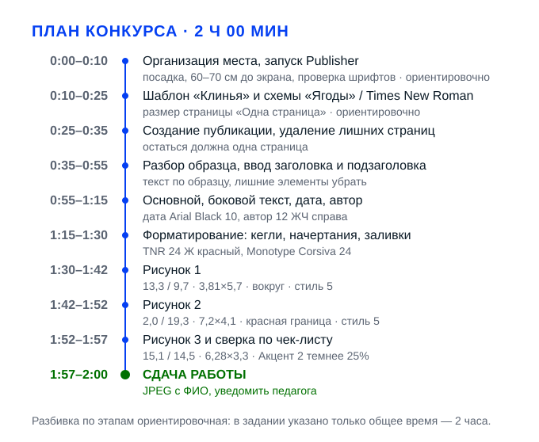
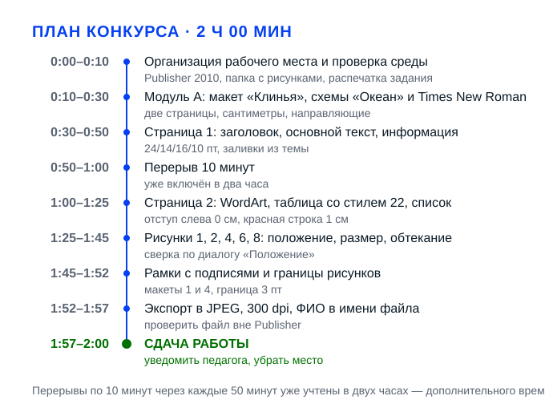
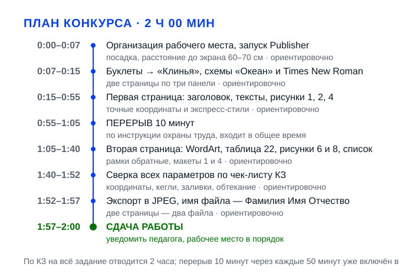

Издатель (Компьютерные публикации в Publisher) (ФВ)
Задания ниже — официальные файлы «Абилимпикс» (источник: abilympics-russia.ru), разложенные по категориям. Решения написаны по тексту задания, регламенту и критериям оценки; в них указано, что именно проверяет эксперт.
Школьник
14–16 лет, базовый уровень заданияВ официальном файле категории не разделены отдельными разделами — приводим задание целиком; различия по категориям смотрите в таблице модулей.
Пошаговое решение
Конкурсное задание для школьников — информационный бюллетень в Microsoft Publisher, и на всё отводится два часа: макет, текст и рисунки вместе. Работа идёт тремя шагами, перечисленными в задании: сначала создаётся макет (категория «Бюллетени», шаблон «Клинья», цветовая схема «Ягоды», шрифтовая схема «Times New Roman», размер страницы «Одна страница» и удаление лишних полос до одной), затем вносится и форматируется текст по шести строкам критериев — от главного заголовка в Times New Roman 24 с красной заливкой до бокового текста курсивом, — и только потом вставляются три рисунка, положение которых задано с точностью до десятой сантиметра: 13,3 и 9,7; 2,0 и 19,3; 15,1 и 14,5. Заканчивается всё экспортом в JPEG с фамилией, именем и отчеством в названии файла. Главная сложность не в отдельных операциях, а в дисциплине: почти все параметры проверяются по числам, а не по впечатлению, поэтому выигрывает тот, кто сверяет каждое значение в диалоге сразу после того, как его выставил.

Задача 1. Собрать макет бюллетеня на одной страницеМодуль А · создание макета · 2 ч 00 мин на всё задание
Первая треть работы — это не текст, а рамка, в которую текст потом ляжет. По конкурсному заданию школьник открывает Microsoft Publisher, выбирает категорию «Бюллетени», шаблон «Клинья», ставит цветовую схему «Ягоды» и шрифтовую схему «Times New Roman», переключает размер страницы на «Одна страница» и только после этого нажимает «Создать». Дальше из получившейся многостраничной заготовки удаляются все страницы, кроме первой, и остаётся один лист с набором готовых блоков. Ошибка на этом этапе стоит дороже всего: если схема или шаблон выбраны неверно, дальше придётся переделывать всю вёрстку, а время в задании общее — два часа на макет, текст и рисунки вместе.
Действие 1.1. Организовать рабочее место и открыть Publisher
Шаг 1.1.1
Садимся ровно, ставим стул так, чтобы ступни полностью стояли на полу, а монитор оказался на расстоянии 60–70 сантиметров от глаз и чуть ниже уровня глаз — верхний край экрана примерно на линии бровей. Убираем со стола всё, что не относится к заданию: телефон, сумку, лишние листы, стакан с водой. Лист с образцом бюллетеня и карточку с заданием кладём слева от клавиатуры, чтобы переводить взгляд на минимум и не терять строку в образце.
Конкурсное задание начинается словами «организовать рабочее место», и это не формальность: в требованиях охраны труда записано, что дисплей должен стоять не менее чем в 50 сантиметрах от глаз, оптимально 60–70. За два часа работы в Publisher глаза и шея устают быстрее, чем кажется, и неправильная посадка к концу второго часа даёт ошибки в мелочах: не тот оттенок, сдвинутая картинка, забытый размер шрифта.
Проверьте себя по трём признакам: локти лежат на столе и не висят, спина касается спинки стула, экран не даёт блика от окна или лампы. На экране не должно быть видно отражения источника света — если видно, поверните монитор или попросите педагога поправить положение стола до начала отсчёта времени.
Самая частая ошибка — сесть «как удобно» в первые минуты, а через час начать горбиться и приближаться к экрану: масштаб страницы кажется мелким, участник ставит 150 процентов и теряет общий вид макета. Вторая ошибка — оставить на столе листы с черновиками: они закрывают клавиатуру, и в спешке текст набирается не в тот блок.
Эксперт обходит площадку в первые минуты и смотрит именно на посадку и порядок на столе: это входит в общую оценку организации работы, и замечание делается сразу, пока его ещё легко исправить.
Шаг 1.1.2
Включаем компьютер и запускаем приложение по полному пути: кнопка «Пуск» → «Все программы» → «Microsoft Office» → «Microsoft Publisher 2010». Не ищем Publisher через поиск по файлам и не открываем первый попавшийся файл с расширением .pub — нам нужен именно чистый запуск, который показывает стартовый экран с каталогом шаблонов. Если на рабочем столе лежит ярлык Publisher, можно запускать с него, результат тот же.
Стартовый экран — единственное место, где категории шаблонов («Бюллетени», «Буклеты», «Календари») и панель настройки схем видны одновременно. Если открыть чужой файл или сразу пустую публикацию, нужных настроек под рукой не будет, и участник начинает искать их в меню, теряя пять-семь минут из общих двух часов.
Перед вами окно с заголовком Microsoft Publisher и списком категорий шаблонов слева или сверху, а в правой части — уменьшенные образцы будущих публикаций. Если вместо этого открылся документ с текстом, закройте его через «Файл» → «Закрыть» и запустите Publisher заново.
Типичная задержка — ждать, пока «загрузится», хотя окно уже готово, или закрывать окно с приглашением активации, не прочитав его. Второе опаснее: иногда вместо каталога открывается пустая публикация формата Letter, и участник начинает работать в ней, не заметив, что шаблон не выбран.
Эксперт отмечает время старта и первые действия: запуск через каталог шаблонов сразу показывает, что участник знает инструмент, а не действует наугад.
Шаг 1.1.3
До начала верстки проверяем три шрифта, которые требует задание: Times New Roman, Monotype Corsiva и Arial Black. Открываем список шрифтов на вкладке «Главная» и начинаем набирать название — список сам подскочит к нужной строке. Если шрифт найден, он выделяется в списке и в строке предварительного просмотра видно его начертание: у Monotype Corsiva это рукописный курсив с завитками, у Arial Black — очень жирный рубленый без засечек.
В задании шрифты названы точно, и подмена «похожим» сразу читается в оценке: подзаголовок в Monotype Corsiva отличается от любого другого курсива рисунком букв, а дата в Arial Black — толщиной штриха. Если шрифта в системе нет, Publisher молча подставит другой, и участник узнает об этом только на проверке, когда переделывать уже нет времени.
Все три названия находятся в списке и выглядят так, как описано. Если какого-то шрифта нет — сразу поднимаем руку и говорим педагогу или эксперту: «нет шрифта Monotype Corsiva». Вопрос решается до старта, а не в середине работы.
Ошибка — увидеть, что шрифт «вроде есть», и не проверить начертание: в списке может стоять похожее название с припиской, а на деле подставляется системный курсив. Вторая ошибка — начать верстку и надеяться, что «шрифт появится позже»: после замены шрифта в схеме весь уже набранный текст переедет по ширине, и придётся заново подгонять блоки.
Эксперт проверяет соответствие шрифтов по названию в строке шрифта, а не «на глаз», поэтому подстановка видна сразу при первом же клике в текст. Если шрифта нет в системе, это фиксируется отдельно и балл не снимается, но только при сообщении до старта.
Действие 1.2. Выбрать шаблон «Клинья» и настроить схемы
Шаг 1.2.1
На стартовом экране находим в каталоге категорию «Бюллетени» и щёлкаем по ней один раз левой кнопкой — раскроется галерея образцов. В галерее ищем образец с названием «Клинья»: он узнаётся по характерному рисунку из расходящихся треугольных клиньев, которые делят лист на несколько цветных секторов. Наводим курсор и ждём секунду — появится всплывающая подсказка с названием, по ней и сверяем, чтобы не спутать с похожими «Клинья 2» или «Стрелки».
Категория и шаблон заданы в задании буквально, и это первое, что проверяют при оценке: другой шаблон — другая геометрия блоков, и все последующие требования к положению рисунков (13,3 сантиметра по горизонтали, 9,7 по вертикали) перестают попадать в свои места. Переделывать шаблон в конце нельзя — придётся переносить текст и рисунки вручную.
В правой части окна показан увеличенный образец выбранного шаблона, а под ним написано название «Клинья» и категория «Бюллетени». Если название другое — щёлкаем по другому образцу, пока подпись не совпадёт буква в букву.
Ошибка — выбрать первый похожий образец из галереи: «Клинья» и «Клинья 2» отличаются числом секторов и расположением текстовых блоков, а на миниатюре разница почти не видна. Вторая ошибка — щёлкнуть двойным кликом, что сразу создаёт публикацию с настройками по умолчанию, минуя панель схем.
Эксперт сверяет шаблон с эталоном на экране: расхождение в геометрии блоков видно сразу, ещё до того, как участник начнёт вводить текст. Отдельно отмечается, совпало ли название шаблона буква в букву: «Клинья 2» считается другим шаблоном.
Шаг 1.2.2
Не закрывая панель настройки справа, разворачиваем раздел «Цветовая схема» и выбираем «Ягоды». Схемы показаны плитками: у каждой пять-шесть цветных квадратиков, и «Ягоды» узнаются по насыщенному красному и глубокому тёмному оттенку рядом с ним. Наводим курсор — всплывает название, щёлкаем по плитке один раз, и миниатюра бюллетеня справа перекрашивается мгновенно.
Цветовая схема определяет не только внешний вид, но и то, какими будут цвета темы «Акцент 1» и «Акцент 2» во всех диалогах: заливка фигуры главного заголовка делается «линейным градиентом — Акцент 1», а границы третьего рисунка — «Акцент 2 (Лиловый), более тёмный оттенок 25%». Если схема другая, эти цвета будут другими, и участник, подбирая их вручную «на глаз», гарантированно ошибётся в оттенке.
Миниатюра справа перекрасилась, в подписи раздела стоит «Ягоды». Проверьте дополнительно, что в списке доступных цветов темы появился лиловый оттенок — он понадобится для границ третьего рисунка. Если миниатюра не перекрасилась, значит щелчок пришёлся мимо плитки — повторите выбор.
Частая ошибка — поменять цвет схемы уже после создания публикации, когда часть блоков перекрашена вручную: Publisher перекрасит только элементы, привязанные к теме, и макет станет пёстрым. Вторая ошибка — выбрать схему по вкусу, «чтобы посвежее», не сверив название.
Эксперт открывает список цветовых схем и смотрит, какая активна: название «Ягоды» должно стоять в строке без пометок «Изменённая». Пометка «Изменённая» рядом с названием схемы означает, что часть цветов поправлена вручную.
Шаг 1.2.3
В той же правой панели разворачиваем раздел «Шрифтовая схема» и выбираем «Times New Roman». В списке этот пункт стоит отдельной строкой и в образце показан двумя строками текста: заголовочной и обычной, обе набраны Times New Roman. Щёлкаем один раз, ждём, пока миниатюра перерисуется — буквы в образце станут с засечками и заметно уже. После выбора схемы не меняйте её до конца работы: смена перекрасит уже оформленные блоки.
Шрифтовая схема задаёт пару шрифтов «для заголовков» и «для основного текста», и от неё зависит, каким шрифтом окажется текст в шаблонных блоках после создания публикации. В задании почти весь текст — Times New Roman, кроме подзаголовка (Monotype Corsiva) и даты (Arial Black), поэтому стартовать с правильной схемы означает, что потом придётся править два-три блока, а не все.
В строке раздела стоит «Times New Roman», а в миниатюре весь текст набран шрифтом с засечками. Быстрая проверка: щёлкните по любому блоку на миниатюре — подсказка покажет гарнитуру. Если в миниатюре остались буквы без засечек, схема не применилась — повторите выбор.
Ошибка — пропустить этот шаг, потому что «шрифт всё равно буду менять вручную»: тогда после создания публикации половина блоков окажется в Calibri, а замена шрифта в каждом блоке отдельно съест десять-пятнадцать минут. Вторая ошибка — выбрать схему «Times New Roman» и сразу же поменять её на другую, проверяя, как выглядит.
Эксперт смотрит на активную строку в разделе шрифтовых схем и на то, не переопределён ли шрифт в блоках вручную. Отдельно проверяется, не выставлен ли Times New Roman вручную в отдельных блоках вместо схемы.
Шаг 1.2.4
В разделе «Параметры» правой панели находим переключатель размера страницы и ставим «Одна страница». Именно в этот момент задание требует, чтобы бюллетень был одностраничным: Publisher сам соберёт макет под один лист, а не под разворот из четырёх. После переключения миниатюра справа меняется — вместо разворота с несколькими панелями остаётся один вертикальный лист.
Задание прямо перечисляет: «настроить размер страницы, как «Одна страница»», и следом отдельным пунктом идёт «удалить лишние страницы бюллетеня (до одной страницы)». Это две разные операции: первая задаёт формат будущей публикации ещё до её создания, вторая убирает уже созданные лишние листы. Если сделать только вторую, макет останется сверстанным под разворот, и блоки на одном листе встанут некрасиво, с пустотами.
Под переключателем стоит выбранный вариант «Одна страница», а в миниатюре видно один лист. Запомните, как он выглядит: после нажатия «Создать» публикация должна открыться именно так. Отличие видно сразу: разворот показывает два листа рядом, одностраничный вариант — один.
Ошибка — оставить «Разворот» или «Четыре страницы» и потом удалять страницы вручную: блоки сохранят ширину разворота, и правый край макета уедет за границу листа. Вторая ошибка — переключить размер уже после создания публикации: Publisher перестроит макет, но часть надписей останется за пределами страницы.
Эксперт сверяет число страниц и формат листа с эталоном: одностраничный бюллетень — обязательное условие модуля. Если участник оставил разворот, эксперт отмечает несоответствие формата страницы заданию.
Действие 1.3. Создать публикацию и привести её к одной странице
Шаг 1.3.1
Когда категория, шаблон, цветовая и шрифтовая схемы и размер страницы выставлены, нажимаем кнопку «Создать» в нижней части правой панели. Publisher думает несколько секунд — на экране появляется полоса готовности, — после чего открывается рабочая область с готовым макетом. Не щёлкаем по макету и не начинаем печатать сразу: сначала даём странице дорисоваться полностью, иначе часть блоков останется в виде серых рамок-заполнителей.
Все настройки, сделанные до нажатия «Создать», применяются к публикации одномоментно и согласованно. Если создать публикацию раньше и потом догонять настройками, Publisher пересоберёт макет поверх уже введённого текста: надписи съедут, а часть форматирования сбросится на схему по умолчанию.
Публикация открылась, в строке состояния видно «Страница 1 из N», на листе видны цветные клинья и текстовые блоки с образцами текста. Если вместо этого открылось пустое поле — нажмите «Отменить» и создайте публикацию заново, проверив, что выбран шаблон.
Ошибка — нажимать «Создать» дважды, решив, что первый раз «не сработало»: откроются две публикации, и работать вы будете не в той, которую проверяете. Вторая — начать вводить текст, не дождавшись отрисовки: часть символов уйдёт в блок, который потом исчезнет при обновлении макета.
Эксперт подходит к этому моменту и сверяет внешний вид макета с эталоном: цветные сектора, расположение блоков, число страниц. Отмечается и то, сколько времени прошло от старта до готового макета: спешка здесь не поощряется.
Шаг 1.3.2
Слева от рабочей области разворачиваем панель навигации по страницам (если её не видно — «Вид» → «Навигация по страницам»). В панели видны миниатюры всех листов публикации: обычно их четыре. Щёлкаем по миниатюре второй страницы правой кнопкой и выбираем «Удалить страницу», затем повторяем то же для третьей и четвёртой. Остаётся один лист — первая страница, на которой уже стоит заголовок шаблона.
Шаблон «Клинья» в категории «Бюллетени» рассчитан на несколько полос, и задание отдельным пунктом требует удалить лишние, оставив одну. Если оставить четыре страницы, эксперт увидит лишние листы с текстом-заполнителем, а часть оценки за макет будет снята: бюллетень по заданию — один лист.
В панели навигации осталась одна миниатюра, а в строке состояния написано «Страница 1 из 1». Пролистайте документ колесом мыши до конца — за первой страницей не должно быть пустых листов. Если после удаления появился пустой лист, удалите и его: пустая страница тоже считается лишней.
Ошибка — удалять страницы, стоя на первой, и стереть именно её: тогда весь готовый макет исчезнет, и придётся создавать публикацию заново. Вторая ошибка — удалять содержимое страницы (рамки и блоки), а не саму страницу: лист останется пустым, и «одной страницы» по факту не будет.
Эксперт листает публикацию и считает страницы: одна страница — норма, две и больше — замечание в протоколе. Число страниц эксперт проверяет в строке состояния: там написано «Страница 1 из 1».
Шаг 1.3.3
Осматриваем оставшийся лист и выписываем на черновик, из чего он состоит: крупный блок главного заголовка на цветной фигуре, под ним блок подзаголовка, основной текст в две-три колонки, отдельный блок с датой, блок с автором и узкий боковой блок с дополнительным текстом. Отмечаем карандашом, какие элементы в шаблоне лишние — обычно это лишние колонки, декоративные полосы и блоки с текстом-заполнителем, которых нет в образце.
Задание требует «заполнить текст бюллетеня согласно образцу, удаляя ненужные элементы», и порядок здесь важен: сначала разобраться в структуре макета и только потом вводить текст. Если начать печатать сразу, через десять минут выясняется, что часть текста набрана в блоке, который по образцу нужно было удалить, и работу приходится переделывать.
На черновике есть список блоков и пометки, какой блок чему соответствует по образцу. Сверьте количество: в образце семь смысловых элементов, значит и на макете должно остаться столько же. Если в списке оказалось восемь или девять пунктов, пересмотрите макет: лишний блок не удалён.
Ошибка — удалить блок, который на самом деле нужен: например, перепутать боковой текст с лишней колонкой. Восстанавливать его придётся вставкой надписи вручную, а значит — заново выставлять шрифт, размер и выравнивание.
Эксперт смотрит, совпадает ли набор блоков на макете с образцом: лишние элементы и недостающие блоки одинаково видны при сравнении. Эксперт отмечает, разобрался ли участник в структуре шаблона до начала ввода текста.
Шаг 1.3.4
Сразу сохраняем заготовку в родном формате: «Файл» → «Сохранить как», в поле «Имя файла» пишем свою фамилию, имя и отчество латиницей или кириллицей — так, как указано в задании, тип файла оставляем «Публикация Publisher (*.pub)», папку выбираем ту, которую назвал эксперт. После сохранения в заголовке окна появится имя файла — значит, документ привязан к файлу и автосохранение работает.
Два часа — большой срок, но Publisher падает и на простых операциях, особенно при вставке больших рисунков. Файл .pub позволяет вернуться к последней рабочей версии, а вот восстановить полчаса верстки по памяти невозможно. Кроме того, сохранение под своим ФИО — требование задания, которое в конце повторится для JPEG.
В заголовке окна стоит ваше имя файла, в папке появился файл с расширением .pub, размер файла — не нулевой. Нажмите Ctrl+S ещё раз: если сохранение прошло молча, без диалога «Сохранить как», значит путь уже задан.
Ошибка — сохранить файл в «Документы» или на рабочий стол, когда эксперт просил конкретную папку: работу просто не найдут при сборе. Вторая ошибка — сохранить один раз в начале и больше не сохранять: сбой в конце работы обнулит весь труд.
Эксперт проверяет наличие файла с вашим ФИО в указанной папке в конце конкурса, и это первое, что он ищет. Отсутствие файла .pub в нужной папке — отдельное замечание, даже если JPEG сдан вовремя.
Задача 2. Внести информацию в блоки и отформатировать текстМодуль Б · внесение информации и форматирование
Второй модуль — сердце задания. Здесь макет наполняется содержанием и получает типографику, перечисленную в задании построчно: главный заголовок — Times New Roman 24, полужирный, по центру, заливка текста красным; подзаголовок — Monotype Corsiva 24, полужирный, по центру, заливка цветом гиперссылки, более тёмный оттенок 25%; основной текст — Times New Roman 14 по ширине; дата — Arial Black 10 по левому краю; автор — Times New Roman 12, полужирный курсив, по правому краю, с синей заливкой; боковой текст — Times New Roman 14 курсив по ширине. Каждый параметр — отдельная строка проверки, поэтому одинаково важно и набрать текст, и выставить каждую цифру.
Действие 2.1. Заполнить блоки текстом по образцу
Шаг 2.1.1
Кладём перед собой образец бюллетеня и лист с текстом задания. Читаем образец целиком один раз, сверху вниз, и для каждого блока на макете подписываем на черновике, какой фрагмент текста туда пойдёт: заголовок, подзаголовок, основной текст в колонках, дата, автор, боковой текст. Напротив каждого блока ставим количество знаков — это нужно, чтобы заранее видеть, где текст не поместится и его придётся сокращать.
Разбор образца до набора текста экономит время, которого в задании всего два часа. Без плана участник начинает с заголовка, потом набирает основной текст и уже в конце обнаруживает, что в боковой блок нужно было совсем другое содержание, а основной текст не влезает в три колонки. Перекомпоновка текста в Publisher всегда дольше, чем аккуратный ввод с листа.
На черновике у каждого блока есть подпись и примерный объём, и вы можете пересказать своими словами, что где будет стоять. Если два блока остались без текста — вы что-то пропустили в образце, вернитесь и дочитайте.
Частая ошибка — набирать текст «по памяти», не сверяясь с образцом: перепутанные местами абзацы потом ищутся долго, а часть текста вообще теряется. Вторая ошибка — копировать текст из чужого файла с сохранением форматирования: в блок приезжает чужой шрифт и цвет.
Эксперт сравнивает содержание блоков с образцом: соответствие текста образцу проверяется по каждому смысловому элементу. Отдельно оценивается, сохранён ли порядок блоков образца: перестановка абзацев считается ошибкой.
Шаг 2.1.2
Начинаем с верхних блоков. Щёлкаем по блоку главного заголовка — рамка выделяется, внутри появляется курсор. Выделяем весь шаблонный текст (Ctrl+A внутри блока, не во всей публикации) и набираем заголовок из образца целиком, одной строкой, без принудительных переводов строки. Затем тем же приёмом заполняем блок подзаголовка: щёлкаем, выделяем, заменяем.
Ввод сверху вниз повторяет порядок чтения бюллетеня, и это удобно для самопроверки: если в макете что-то перепутано, вы заметите это сразу, пока текст ещё перед глазами. Заменять шаблонный текст нужно полным выделением внутри блока — если печатать, не выделив, новый текст вклеится в середину фразы-заполнителя, и её хвост останется в макете.
В блоке заголовка стоит ровно тот текст, что в образце, лишних слов и обрывков шаблонного текста нет. Быстрая проверка — Ctrl+A внутри блока: выделится весь текст блока, и по выделению видно, где кончается ваша фраза.
Ошибка — нажать Ctrl+A, не входя в блок: выделится вся публикация, и следующее нажатие клавиши заменит весь макет одним абзацем. Вторая ошибка — оставить в конце блока невидимый хвост шаблонной фразы: он вылезает за край надписи и ломает выравнивание по центру.
Эксперт открывает блок и смотрит, нет ли остатков шаблонного текста — это одна из первых проверок при оценке заполнения. Эксперт проверяет и то, что заголовок набран одной строкой, без Enter в середине фразы.
Шаг 2.1.3
Заполняем остальные блоки: основной текст в колонках, боковой текст, блок даты и блок автора. В основной текст переносим абзацы образца, разделяя их клавишей Enter только на границах абзацев, а не в конце каждой строки. В блок даты ставим дату в том формате, что в образце, в блок автора — фамилию и инициалы или полное имя, как указано в задании. Дату и автора набирайте с клавиатуры, а не копированием из образца: при копировании приезжает чужой шрифт.
Здесь важно не ставить переводы строки вручную: Publisher сам переносит слова по ширине блока, а жёсткий Enter в середине абзаца оставляет рваный правый край, который потом невозможно выровнять никаким выравниванием по ширине. Дата и автор — короткие блоки, их легко не заметить и оставить с шаблонным текстом, а они проверяются отдельными критериями с конкретным шрифтом и выравниванием.
В каждом блоке стоит свой текст, абзацы разделены одинарным Enter, в конце строк нет символов переноса. Прокрутите страницу целиком: ни в одном блоке не должно остаться слов вроде «Образец текста» или «Введите здесь».
Ошибка — набирать основной текст в одну колонку и надеяться, что он «сам разольётся» по остальным: в Publisher текст не перетекает между надписями без специальной связки. Вторая ошибка — вставить в блок дату с лишними словами («Дата: 15 ноября»), тогда как в образце только число и месяц.
Эксперт проверяет дату и автора отдельно: это маленькие блоки, но каждый описан в задании своей строкой критериев. Мелкие блоки эксперт проверяет внимательнее: в них чаще всего остаётся текст-заполнитель.
Шаг 2.1.4
Убираем из макета всё, чего нет в образце. Щёлкаем по лишней декоративной полосе, колонке или надписи-заполнителю и нажимаем Delete. Если элемент мешает выделить соседний, удерживаем Ctrl и щёлкаем — так выделяется объект под курсором, даже если он лежит поверх другого. Двигаемся по макету сверху вниз, пока на листе не останется ровно те блоки, которые есть в образце.
Задание формулирует это как «заполнить текст согласно образцу, удаляя ненужные элементы», и лишние объекты в макете прямо снижают оценку: они перекрывают текст, мешают обтеканию рисунков и создают ощущение небрежности. Кроме того, лишняя надпись поверх будущего рисунка помешает выставить его положение в сантиметрах — Publisher будет «толкать» объект при перетаскивании.
На листе остались только нужные блоки, и их количество совпадает с черновиком из первого модуля. Пролистайте макет, выделяя всё подряд (Ctrl+A): в области выделения не должно быть объектов за пределами полосы набора.
Ошибка — удалить элемент, который был частью фона или рамки страницы: макет теряет цветную подложку, и вернуть её можно только отменой действий. Вторая ошибка — «спрятать» лишний блок за другим, вместо того чтобы удалить: при любом сдвиге он снова вылезет.
Эксперт сравнивает набор объектов с эталоном и отдельно проверяет, не перекрывает ли что-то текст и рисунки. Отдельно фиксируется, не осталось ли объектов за пределами полосы набора: их не видно, но они есть.
Действие 2.2. Оформить главный заголовок и подзаголовок
Шаг 2.2.1
Выделяем весь текст главного заголовка внутри блока и выставляем: шрифт Times New Roman, размер 24 пункта, начертание полужирное (кнопка «Ж» или Ctrl+B), выравнивание по центру (Ctrl+E). Затем, не снимая выделения, открываем «Заливка текста» на вкладке «Главная» — в раскрывающейся палитре берём чистый красный из строки стандартных цветов, а не «кирпичный» и не «розовый» из оттенков темы.
Это первая строка критериев задания, и в ней перечислены сразу четыре параметра: гарнитура, кегль, начертание и выравнивание плюс цвет заливки. Ошибка хотя бы в одном — минус по этому критерию. Красный цвет здесь именно заливка текста, то есть закрашиваются сами буквы, а не фон под ними: под заголовком лежит цветная фигура, и её заливка делается отдельно, следующим шагом.
Курсор стоит в заголовке, в строке шрифта написано «Times New Roman», в строке размера — «24», кнопка «Ж» нажата, кнопка выравнивания по центру подсвечена, а буквы закрашены красным. Проверить начертание проще всего по внешнему виду: штрихи заметно толще, чем у обычного текста того же кегля.
Самая частая ошибка — перепутать заливку текста с выделением цветом: получается красный фон под чёрными буквами, а эксперт ищет красные буквы. Вторая ошибка — поставить 24 пикселя вместо пунктов, если в списке размера случайно выбран другой формат единиц.
Эксперт щёлкает в заголовок и читает значения в строках шрифта и размера: это делается за пять секунд и не зависит от общего впечатления от макета. Отдельно проверяется, что заливка применена к тексту, а не к фону надписи.
Шаг 2.2.2
Теперь фигура под заголовком. Щёлкаем по цветной плашке так, чтобы выделилась именно фигура, а не текст в ней: у выделенной фигуры по углам появляются кружки, а не маркеры изменения размера надписи. Открываем «Средства рисования» → «Формат» → «Заливка фигуры» → «Градиент» → «Другие градиентные заливки», и в списке готовых вариантов выбираем «Линейный градиент — Акцент 1».
Задание требует для фигуры заливку «линейный градиент — Акцент 1». Именно градиент, а не сплошной цвет: плавный переход от цвета темы к его оттенку — часть оформления шаблона, и сплошная заливка выглядит как упрощение. Акцент 1 берётся из схемы «Ягоды», которую вы поставили в первом модуле, поэтому цвет подставится правильный автоматически — подбирать его вручную не нужно и вредно.
По плашке видно плавный переход цвета от одного края к другому, в диалоге заливки активна строка с названием градиента и указан цвет темы «Акцент 1». Текст заголовка остался читаемым на новом фоне. Если оттенок плашки совпал с цветом заголовка, значит залита надпись, а не фигура.
Ошибка — залить фигуру сплошным цветом «Акцент 1»: визуально похоже, но градиента нет, и критерий не выполнен. Вторая ошибка — выделить вместо фигуры надпись с текстом и залить её: красные буквы заголовка утонут в цветном прямоугольнике.
Эксперт открывает диалог заливки фигуры и смотрит название варианта: «Линейный градиент — Акцент 1» должно стоять в строке выбранного градиента. Эксперт смотрит на плавность перехода: у градиента цвет меняется от края к краю.
Шаг 2.2.3
Выделяем текст подзаголовка и выставляем шрифт Monotype Corsiva, размер 24, полужирный, выравнивание по центру. Затем открываем «Заливка текста» и разворачиваем раздел «Цвета темы»: находим в списке строку «Гиперссылка» — она показывает тёмно-синий цвет — и в сетке оттенков под ней берём вариант с подписью «более тёмный оттенок 25%» (четвёртый-пятый квадратик в первом столбце сетки). Наводим курсор и ждём подсказку, чтобы не взять 50% вместо 25%.
Подзаголовок — единственная строка задания, где требуется рукописный шрифт Monotype Corsiva, и одновременно единственная, где заливка задана не стан-дартным цветом, а цветом темы с оттенком. Оттенок 25% — это шаг в сторону затемнения от основного цвета гиперссылки; если взять 50% или 75%, оттенок будет заметно темнее эталона, и разница видна при сравнении с образцом.
Буквы подзаголовка набраны рукописным курсивом с завитками, стоят по центру, и цвет в диалоге заливки подписан как «Гиперссылка, темнее 25%». Кегль 24 при этом визуально кажется меньше, чем у заголовка, — так и должно быть, у Monotype Corsiva узкие буквы.
Ошибка — поставить обычный курсив Times New Roman вместо Monotype Corsiva: издалека похоже, но рисунок букв другой, и это сразу видно рядом с образцом. Вторая ошибка — взять первый попавшийся тёмно-синий из стандартных цветов: оттенок не совпадёт с цветом темы, и критерий по заливке не будет зачтён.
Эксперт сверяет подзаголовок с образцом именно по рисунку шрифта и по подписи оттенка в диалоге заливки. Подпись оттенка в диалоге заливки — главный аргумент: «темнее 25%» читается однозначно.
Действие 2.3. Оформить основной, боковой текст, дату и автора
Шаг 2.3.1
Выделяем весь основной текст в колонках, ставим шрифт Times New Roman и размер 14 пунктов, начертание обычное (кнопка «Ж» отжата), выравнивание — по ширине (Ctrl+J). Отдельно проверяем, что в блоке не осталось «висячих» пробелов в конце абзацев и что между абзацами стоит одинарный интервал, а не двойной: абзацные интервалы в шаблоне иногда заданы заранее и после замены текста выглядят как лишние пустые строки.
Основной текст — самый большой по объёму элемент, и он задан в задании одной строкой: Times New Roman, 14, по ширине. Выравнивание по ширине растягивает строки до обеих границ колонки, поэтому важно, чтобы в тексте не было жёстких переносов: при них между словами появятся провалы, а последняя строка абзаца уедет в сторону.
Все колонки набраны одним кеглем, строки выровнены по обоим краям, пустых строк между абзацами нет. Сравните высоту текста в соседних колонках — при одинаковом кегле разница в полстроки нормальна, разница в три строки — признак другого размера или лишних интервалов.
Ошибка — применить размер 14 только к первому абзацу, а остальные оставить в 11: визуально это видно как «съехавший» текст в нижней части колонки. Вторая ошибка — выровнять текст по левому краю, посчитав, что «по ширине» и так получится: рваный правый край сразу бросается в глаза.
Эксперт проверяет основной текст во всех колонках и смотрит, одинаков ли кегль в них и выровнены ли строки по обоим краям. Эксперт сравнивает кегль во всех колонках: расхождение в один пункт заметно на глаз.
Шаг 2.3.2
Блок даты: выделяем текст, ставим Arial Black, размер 10, начертание обычное, выравнивание по левому краю (Ctrl+L). Блок автора: выделяем текст, ставим Times New Roman, размер 12, одновременно полужирный и курсив (Ж и К, или Ctrl+B и Ctrl+I), выравнивание по правому краю (Ctrl+R), затем «Заливка текста» — синий стандартный цвет. Дату и автора делаем в таком порядке, чтобы не таскать мышь между блоками лишний раз.
В задании эти два блока описаны отдельными строками, и в каждом четыре параметра: дата — Arial Black, 10, по левому краю; автор — Times New Roman, 12, полужирный курсив, по правому краю, с синей заливкой. Соблазн сделать их «как остальной текст» велик, но именно на этих маленьких блоках собирается половина ошибок формата, потому что они короткие и легко выпадают из поля внимания.
Дата набрана очень жирным рубленым шрифтом без засечек и прижата к левому краю, автор — курсивными полужирными буквами справа и закрашен синим. Поставьте курсор в каждый блок и сверьте три строки: шрифт, размер, кнопки начертания.
Ошибка — сделать автора просто полужирным без курсива: «Ч» в задании означает курсив, а не «чёрный». Вторая ошибка — поставить дату в Times New Roman: Arial Black узнаётся по очень толстым штрихам и отсутствию засечек, подмена видна сразу.
Эксперт проверяет дату и автора построчно по критериям задания — это самые быстрые баллы и самые обидные потери. Дата и автор проверяются по всем четырём параметрам: шрифт, размер, начертание, выравнивание.
Шаг 2.3.3
Боковой текст: выделяем его целиком, ставим Times New Roman, размер 14, курсив (Ctrl+I), начертание без полужирного, выравнивание по ширине. Если боковой блок узкий и текст в нём не помещается, не уменьшаем кегль — это нарушит критерий, — а сокращаем текст по образцу или расширяем надпись за счёт соседней пустой зоны, если макет позволяет. Если текст не помещается, проверьте интервалы: лишний полуторный интервал съедает две строки.
Боковой текст часто путают с основным и оформляют одинаково, но в задании у него отдельная строка: 14 пунктов и курсив. Курсив здесь — единственное визуальное отличие от основного текста, поэтому если он не выставлен, два разных критерия сливаются в один и второй не зачитывается.
Боковой текст наклонён, кегль совпадает с основным, строки выровнены по ширине блока. Убедитесь, что курсив применился ко всему блоку: иногда последний абзац остаётся прямым, потому что выделение закончилось на предпоследней строке.
Ошибка — уменьшить кегль до 12, чтобы текст «влез»: критерий требует 14, и балл снимается, даже если вёрстка стала аккуратнее. Вторая ошибка — сделать боковой текст полужирным курсивом «для читаемости»: начертание в задании не указано, значит должно быть обычным.
Эксперт сравнивает боковой текст с основным: разница должна быть только в наклоне букв, кегль и гарнитура совпадают. Эксперт смотрит на наклон букв: если боковой текст прямой, критерий по курсиву не зачтён.
Действие 2.4. Проверить текстовый слой перед работой с рисунками
Шаг 2.4.1
Проходим по всем блокам и вычитываем текст: сверяем с образцом слова, числа и даты, убираем двойные пробелы (Ctrl+H, найти два пробела, заменить одним, но только внутри выделенного блока, а не во всей публикации), проверяем, что в конце абзацев нет пробелов и пустых строк. Орфографию можно проверить клавишей F7 — Publisher подчеркнёт незнакомые слова, но не все они ошибочны: имена и названия он тоже считает ошибками.
Опечатки и лишние пробелы — самая обидная потеря: содержание проверяется по образцу, и одна перепутанная цифра в дате стоит столько же, сколько полностью неверно оформленный блок. Двойные пробелы при выравнивании по ширине дают заметные провалы между словами, и это видно на распечатке, по которой сравнивают работу.
Текст совпадает с образцом посимвольно, двойных пробелов нет, пустых строк в конце блоков нет. Хороший приём — прочитать текст вслух: на слух опечатки находятся быстрее, чем глазами на экране. После автопроверки пройдите текст ещё раз глазами: она пропускает перепутанные слова.
Ошибка — заменить двойные пробелы во всей публикации сразу: замена затронет и скрытые блоки, а иногда и текст внутри фигур, после чего макет придётся поправлять. Вторая ошибка — довериться автопроверке и пропустить смысловые ошибки, которые она не видит.
Эксперт читает бюллетень целиком и сравнивает с образцом: расхождения в содержании фиксируются отдельным пунктом протокола. Эксперт отмечает и грамотность: опечатки в бюллетене снижают оценку содержания.
Шаг 2.4.2
Проверяем форматирование системно: щёлкаем в каждый блок и записываем на черновике три значения — шрифт, размер, выравнивание. Получается таблица из шести строк: заголовок 24/Ж/центр, подзаголовок 24/Ж/центр, основной 14/по ширине, дата 10/слева, автор 12/ЖЧ/справа, боковой 14/К/по ширине. Сверяем строки с заданием; там, где значение не совпало, исправляем сразу.
Такая сверка занимает три-четыре минуты и закрывает целый блок критериев. Глазами расхождение в один пункт кегля не видно: 13 и 14 отличаются на несколько процентов, а эксперт смотрит именно в строку размера. Письменная сверка исключает и забытые блоки — если в таблице шесть строк, значит проверены все шесть смысловых элементов.
В черновике заполнены все шесть строк, и ни в одной нет расхождения с заданием. Дополнительно пролистайте макет в масштабе 50–60 процентов: на уменьшении видно, одинаковы ли кегли в соседних колонках.
Ошибка — проверять блоки «на глаз» и решить, что всё совпадает: обычно пропускается начертание, потому что курсив и полужирный в мелком кегле почти не отличаются. Вторая ошибка — исправить найденное расхождение только в одном абзаце, а не во всём блоке.
Эксперт выборочно щёлкает в блоки и сверяет значения с заданием; несоответствие в любом из шести блоков отражается в протоколе. Если какое-то значение расходится, эксперт фиксирует его именно в том блоке, где он найден.
Шаг 2.4.3
Ищем «невидимый» и вылезающий текст. Пролистываем макет и смотрим на каждый блок: есть ли внизу надписи маленький красный треугольник переполнения — значит, текст не поместился и часть его скрыта. Проверяем, нет ли текста белого цвета на белом фоне и не уехало ли что-то за границу страницы: уменьшите масштаб до 40 процентов и посмотрите на лист целиком.
Переполнение — коварная ошибка: на экране видно аккуратный блок, а на распечатке половина абзаца просто отсутствует, и критерий по содержанию проваливается. Белый текст на белом фоне появляется, если при замене текста в блоке сохранился цвет шаблона; заметить это можно только целенаправленной проверкой — например, временно включив выделение всех объектов.
У каждого блока нет индикатора переполнения, весь текст читается на фоне, ничего не выходит за поля страницы. На уменьшенном виде лист выглядит сбалансированно, без пустых зон и обрезанных краёв. Ещё один признак: если высота блока меньше текста, внизу остаётся пустая полоса.
Ошибка — уменьшать кегль, чтобы убрать переполнение: это ломает критерий по размеру шрифта. Правильно — сократить текст до объёма образца или расширить надпись. Вторая ошибка — не заметить обрезанный блок у нижнего края, потому что он уходит за видимую область.
Эксперт проверяет макет при полном масштабе страницы и отдельно смотрит нижнюю часть листа — там чаще всего прячутся переполнения. Переполнение эксперт видит по отсутствию части текста на распечатке или в экспортированном файле.
Задача 3. Вставить три рисунка и выставить их точно по заданиюМодуль В · графические объекты и их редактирование
Третий модуль — самый точный. Задание называет для каждого рисунка четыре числа: положение по горизонтали и по вертикали от верхнего левого угла страницы, размер и способ обтекания, а сверх того — экспресс-стиль и цвет границы. Первый рисунок встаёт на 13,3 и 9,7 сантиметра с размером 3,81 на 5,7 и стилем рисунка 5; второй — на 2,0 и 19,3 с размером 7,2 на 4,1, тоже со стилем 5 и с красной границей; третий — на 15,1 и 14,5 с размером 6,28 на 3,3, со стилем рисунка 3 и границей цвета «Акцент 2 (Лиловый), более тёмный оттенок 25%». Перетаскиванием мыши такие значения не выставить: они задаются в диалоге с точностью до сотой сантиметра.
Действие 3.1. Вставить рисунок 1 и поставить его на место
Шаг 3.1.1
Открываем папку с материалами задания и находим файл первого рисунка — он подписан как «Рисунок 1». Возвращаемся в Publisher, ставим курсор в любое место страницы, но не внутрь текстового блока, и идём «Вставка» → «Рисунок». В диалоге выбираем нужный файл и нажимаем «Вставить». Рисунок появится на странице поверх макета, обычно в центре видимой области, и сразу будет выделен рамкой с маркерами по углам.
Вставка через меню, а не перетаскиванием из папки, важна по двум причинам: при перетаскивании Publisher иногда вставляет файл как связанный объект, и при сохранении в JPEG картинка может не попасть в файл; кроме того, при вставке из меню снимается лишнее форматирование оригинала. Порядок вставки тоже имеет значение — рисунок 1 в этой композиции самый верхний, и следующие два будут ставиться уже относительно него.
На странице появился рисунок, вокруг него видны маркеры выделения, а в контекстных вкладках сверху возникла лента «Работа с рисунками». Если рисунок не появился — значит, вы вставили его внутрь текстового блока, и он «утонул» в тексте: нажмите Ctrl+Z и повторите вставку, предварительно щёлкнув по пустому месту страницы.
Ошибка — вставить не тот файл: рисунки в наборе похожи, и первый часто путают со вторым. Восстанавливать придётся заново вместе с положением и стилем. Вторая ошибка — вставить рисунок внутрь надписи: тогда все координаты будут считаться не от угла страницы, а от блока, и числа из задания не совпадут.
Эксперт сверяет, тот ли рисунок на макете: содержание изображения входит в критерий соответствия образцу. Эксперт сверяет не только наличие рисунка, но и то, что вставлен именно первый файл из набора.
Шаг 3.1.2
Не снимая выделения с рисунка, открываем «Формат» → группа «Размер» и выставляем точные значения: ширина 3,81 сантиметра, высота 5,7 сантиметра. Если поля показывают другие единицы, разворачиваем список единиц и переключаем на сантиметры — в Publisher они переключаются прямо в группе «Размер» или через «Файл» → «Параметры» → «Дополнительно». Обязательно снимаем флажок «Сохранять пропорции» перед вводом второго числа, иначе приложение подтянет высоту под ширину и второе значение не примется.
Размер в задании задан двумя числами до сотой, и это не украшение: 3,81 на 5,7 — книжный, вертикально вытянутый кадр, а картинка из набора может прийти горизонтальной. Если просто потянуть за угол мышью, пропорции сохранятся, а нужных чисел не получится, и рисунок займёт не своё место в композиции, перекрыв текст.
В группе «Размер» стоят ровно 3,81 и 5,7 сантиметра. Проверить можно и по линейкам: включите «Вид» → «Линейки», и по ним видно, что кадр выше, чем шире, примерно в полтора раза. Если после ввода второго числа первое изменилось, значит пропорции не были отключены.
Ошибка — задать только ширину, оставив высоту автоматической: пропорции исходного файла не совпадут с заданными, и картинка окажется вытянутой. Вторая ошибка — округлить до 3,8 на 5,7 «для удобства»: расхождение в сантиметр видно при наложении на эталон.
Эксперт открывает диалог размера и читает два числа; сверка идёт с точностью до второго знака после запятой. Размер эксперт проверяет по диалогу, а не линейкой: числа должны стоять ровно 3,81 и 5,7.
Шаг 3.1.3
Выставляем положение точно. В «Работа с рисунками» → «Формат» нажимаем «Положение» → «Дополнительные параметры разметки», в открывшемся окне переходим на вкладку «Положение». Выбираем «По горизонтали» → «Абсолютная позиция» и вводим 13,3 сантиметра с привязкой «правее» от «Слева»; «По вертикали» → «Абсолютная позиция» 9,7 сантиметра «ниже» от «Сверху». Ниже снимаем флажок «Объект вместе с текстом», чтобы рисунок не уезжал при изменении текста, и закрываем окно кнопкой «ОК».
Все координаты в задании отсчитываются от верхнего левого угла страницы, и получить их можно только абсолютной позицией: при варианте «относительно полей» или «относительно колонки» те же цифры дадут другой результат. Снятый флажок «Объект вместе с текстом» — тоже часть точности: без него любая правка абзаца выше сдвинет рисунок вниз на несколько сантиметров, и вы этого даже не заметите, пока не начнёте проверять координаты.
Откройте диалог положения повторно и убедитесь, что в полях стоят именно 13,3 и 9,7, а тип позиции — «Абсолютная». Дополнительно включите линейки: по верхней видно, что левый край рисунка стоит чуть дальше середины листа, по боковой — что он ниже верхней трети.
Ошибка — выставить положение мышью «примерно туда» и не проверить числа: сдвиг на полсантиметра выглядит небрежностью, а критерий требует конкретного значения. Вторая ошибка — оставить включённым «Объект вместе с текстом»: после следующей правки текста координата изменится на сантиметр-два.
Эксперт открывает «Дополнительные параметры разметки» и смотрит вкладку «Положение»: там видны оба числа и тип позиции. Эксперт отдельно смотрит, снят ли флажок «Объект вместе с текстом»: от него зависит устойчивость позиции.
Шаг 3.1.4
Осталось обтекание и стиль. В том же окне на вкладке «Обтекание текстом» выбираем «Вокруг», либо на ленте «Формат» → «Обтекание текстом» → «Вокруг». Затем открываем галерею «Стили рисунков» на ленте «Формат» и находим пятый стиль: наводим курсор на миниатюры по порядку, ждём всплывающую подсказку «Стиль рисунка 5» и щёлкаем. Стиль добавит рамку и тень — так и должно быть.
Обтекание «вокруг» нужно, чтобы текст в колонках плавно обходил рисунок с обеих сторон, а не упирался в него, как при варианте «в тексте». Экспресс-стиль задаёт сразу набор оформлений — рамку, тень, поворот, — и в задании указан конкретный номер, потому что стили отличаются друг от друга цветом и толщиной рамки. Перепутать номер легко: миниатюры похожи, а разница видна только при сравнении с образцом.
В списке обтекания стоит «Вокруг», в галерее стилей подсвечен пятый элемент, а на рисунке появилась рамка с мягкой тенью справа и снизу. Подсказка при наведении на активный стиль читается как «Стиль рисунка 5».
Ошибка — выбрать «Сквозное» или «В тексте»: в первом случае текст пойдёт поверх картинки, во втором она станет частью строки и «разорвёт» абзац. Вторая ошибка — отсчитать стили не с начала строки, а от последнего использованного: в результате на рисунке оказывается стиль 6 или 4.
Эксперт смотрит на рамку и тень и сверяет номер стиля, наведя курсор на галерею: несоответствие видно сразу. Стиль проверяется наведением курсора на галерею: номер виден во всплывающей подсказке.
Действие 3.2. Вставить рисунок 2, задать размер, положение и красную границу
Шаг 3.2.1
Возвращаемся в папку материалов и открываем «Рисунок 2» — это самый крупный кадр в наборе, горизонтальный. Вставляем его так же: «Вставка» → «Рисунок», выбираем файл, «Вставить». Не снимая выделения, идём в «Формат» → «Размер» и ставим ширину 7,2 сантиметра, высоту 4,1 сантиметра, предварительно отключив сохранение пропорций, чтобы оба числа принялись одновременно.
Второй рисунок лежит в нижней части листа и по размеру вдвое крупнее первого: 7,2 на 4,1 — это горизонтальный кадр, который займёт почти треть ширины страницы. Именно потому, что он большой, ошибка в размере здесь заметнее всего: лишние полсантиметра по ширине заставят текст в соседней колонке переехать, а при обтекании «вокруг» это сразу изменит вид макета.
В строке размера стоят 7,2 и 4,1, рисунок заметно шире, чем выше. На листе он занимает горизонтальную полосу, а не вертикальную, как первый. Если картинка вышла квадратной, значит пропорции сохранились и высота подтянулась под ширину.
Ошибка — оставить размер исходного файла, посчитав, что «и так крупно»: картинка из набора может быть в два раза больше нужного и закроет полтекста. Вторая ошибка — задать размер после того, как выставлено положение: при изменении размера рисунок растягивается от центра, и координаты съезжают.
Эксперт сверяет размеры всех трёх рисунков между собой: соотношение сторон у второго горизонтальное, у первого и третьего — вертикальное. Второй рисунок эксперт сравнивает с первым по площади: он должен быть почти вдвое крупнее.
Шаг 3.2.2
Ставим положение: «Положение» → «Дополнительные параметры разметки» → вкладка «Положение». «По горизонтали» — абсолютная позиция 2,0 сантиметра правее «Слева», «По вертикали» — абсолютная позиция 19,3 сантиметра ниже «Сверху». Снимаем «Объект вместе с текстом» и подтверждаем «ОК». Сразу же на вкладке «Обтекание текстом» выставляем «Вокруг», чтобы текст в нижней части листа обошёл картинку.
Координата 2,0 по горизонтали прижимает рисунок почти к левому краю листа, а 19,3 по вертикали опускает его в нижнюю треть — это нижний левый угол композиции, и он держит равновесие с первым рисунком, который стоит справа и выше. Обтекание «вокруг» обязательно именно здесь: рисунок стоит в полосе основного текста, и при варианте «в тексте» он разорвёт абзац, а при «сквозном» текст пойдёт поверх картинки.
В диалоге положения стоят 2,0 и 19,3 при абсолютной позиции. На листе рисунок стоит у левого края и ниже середины страницы, текст в соседней колонке плавно огибает его справа. Если рисунок ушёл вниз за край листа, координаты отсчитаны от блока, а не от страницы.
Ошибка — отсчитывать координаты от верхнего левого угла не страницы, а текстового блока: тогда рисунок встанет на 19,3 сантиметра от блока, то есть намного ниже, и уйдёт за нижний край листа. Вторая ошибка — выставить положение, но забыть обтекание: текст останется разорванным.
Эксперт проверяет и координаты, и обтекание: оба параметра описаны в задании для каждого рисунка отдельно. Проверяются оба числа и тип позиции: относительная позиция даёт другой результат при тех же цифрах.
Шаг 3.2.3
Делаем красную границу. При выделенном рисунке открываем «Формат» → «Контур фигуры» → «Другие цвета контура», в палитре берём чистый красный стандартный цвет, подтверждаем. Толщину специально не меняем, если в задании она не названа: Publisher подставит значение по умолчанию, обычно 0,75 или 1 пункт. Проверяем, что в списке «Контур фигуры» не стоит «Нет контура» — иначе цвет выбран, а линия не нарисуется.
В задании для второго рисунка цвет границы указан отдельно от экспресс-стиля, потому что стиль рисунка 5 даёт свою рамку — обычно тёмную или цветную. Красная граница поверх стиля и есть требование критерия: эксперт смотрит на контур, а не на тень. Именно поэтому нельзя ограничиться выбором стиля и решить, что рамка «уже есть».
Вокруг рисунка видна ровная красная линия по всем четырём сторонам, она не пропадает при увеличении масштаба до 100 процентов. В диалоге контура цвет показан как красный, тип линии — сплошная. Толщина линии должна быть одинаковой по всем сторонам: если одна сторона тоньше, контур задан частично.
Ошибка — залить красным сам рисунок вместо контура: «Заливка фигуры» и «Контур фигуры» стоят рядом в одном меню и путаются. Вторая ошибка — выбрать красный из «Цветов темы»: он может оказаться приглушённым, и оттенок не совпадёт с эталоном.
Эксперт смотрит на цвет линии при увеличении: подмена темы на стандартный красный видна по насыщенности. Красный цвет эксперт сверяет с образцом на экране: приглушённый оттенок темы виден сразу.
Шаг 3.2.4
Выставляем экспресс-стиль: «Формат» → галерея «Стили рисунков» → наводим курсор на миниатюры и выбираем пятую по счёту, ту, что подписана «Стиль рисунка 5». После применения ещё раз проверяем, что красная граница осталась: некоторые стили перекрывают контур собственной рамкой. Если граница исчезла — повторно задаём «Контур фигуры» красным цветом уже после применения стиля.
Порядок «сначала граница, потом стиль» удобен, но не гарантирует сохранение контура: стиль может переопределить оформление. Проверка после применения — обязательный шаг, потому что в задании для этого рисунка важны оба параметра одновременно, и потеря одного обнуляет второй. У первого рисунка граница отдельно не задана, поэтому там такой проверки не требуется.
На рисунке видна и тень от стиля 5, и красная линия по периметру. Наведите курсор на активную миниатюру стиля — подсказка должна читаться как «Стиль рисунка 5». Если граница пропала, задайте её заново и уже не меняйте стиль до конца работы.
Ошибка — применить стиль и не проверить границу: в половине случаев красный контур заменяется рамкой стиля, и критерий по цвету границы не выполняется. Вторая ошибка — после восстановления границы заново выбрать стиль, снова потеряв контур, и так по кругу до конца времени.
Эксперт проверяет рисунок 2 по трём признакам сразу: размер, красная граница и стиль 5. Эксперт наводит курсор на активную миниатюру стиля и читает номер: подмена на 4 или 6 видна.
Действие 3.3. Вставить рисунок 3 и оформить его лиловой границей
Шаг 3.3.1
Вставляем «Рисунок 3» через «Вставка» → «Рисунок». Размер задаём в «Формат» → «Размер»: ширина 6,28 сантиметра, высота 3,3 сантиметра. Пропорции отключаем, вводим оба числа. Этот кадр заметно более вытянутый по горизонтали, чем первый, и меньше второго по площади, поэтому его легко поставить «на глаз» и ошибиться на сантиметр. Проверьте список файлов: если в наборе есть файлы с похожими именами, сверяйте номер, а не дату.
Третий рисунок в задании — самый тонкий по настройкам: кроме положения и размера у него другой номер экспресс-стиля, стиль рисунка 3, и другая граница — не красная, а цвет темы «Акцент 2 (Лиловый), более тёмный оттенок 25%». Размер 6,28 на 3,3 подобран так, чтобы рисунок встал в правую нижнюю часть листа между текстовыми блоками, не разрывая их.
В строке размера стоят 6,28 и 3,3, соотношение сторон примерно два к одному по горизонтали. На листе рисунок занимает среднюю по размеру горизонтальную полосу. Сравните ширину трёх рисунков: у третьего она больше, чем у первого, и меньше, чем у второго.
Ошибка — скопировать оформление второго рисунка целиком, включая стиль 5 и красную границу: у третьего другие требования, и оба параметра окажутся неверными. Вторая ошибка — задать размер только по ширине и получить случайную высоту.
Эксперт сравнивает размеры всех трёх рисунков: у третьего ширина 6,28 — меньше, чем у второго, но больше, чем у первого. Ошибку в размере эксперт замечает по тому, что рисунок перекрывает соседний текстовый блок.
Шаг 3.3.2
Выставляем положение через «Положение» → «Дополнительные параметры разметки»: по горизонтали абсолютная позиция 15,1 сантиметра правее «Слева», по вертикали абсолютная позиция 14,5 сантиметра ниже «Сверху». Снимаем флажок «Объект вместе с текстом», подтверждаем. На вкладке «Обтекание текстом» ставим «Вокруг». Положение задаётся только диалогом: перетаскивание мышью даёт сдвиг в полсантиметра и больше.
15,1 по горизонтали — это правая половина листа, 14,5 по вертикали — середина. Вместе с первым рисунком, который стоит на 13,3 и 9,7, третий образует правую вертикаль композиции: они идут друг под другом с небольшим сдвигом. Именно поэтому важно не «подвинуть на глазок»: сдвиг в сантиметр разрушает эту вертикаль, и макет выглядит рассыпанным.
В диалоге положения стоят 15,1 и 14,5, тип позиции — абсолютная. На листе рисунок находится правее середины и примерно на уровне середины по высоте, текст обтекает его слева и снизу. Если рисунок стоит ровно по центру листа, координата выставлена неверно: 15,1 смещает его вправо.
Ошибка — поставить рисунок по центру страницы «чтобы красивее»: координата 15,1 при ширине листа около 21 сантиметра даёт смещение вправо, а центрирование — около 7, и разница видна при наложении на эталон. Вторая ошибка — забыть про обтекание и получить разорванный абзац под рисунком.
Эксперт смотрит координаты в диалоге и общее положение рисунка относительно первого — они должны образовывать правую вертикаль. Эксперт смотрит на взаимное положение первого и третьего рисунков: они образуют правую вертикаль.
Шаг 3.3.3
Ставим экспресс-стиль рисунка 3: «Формат» → галерея «Стили рисунков» → наводим курсор и выбираем миниатюру с подсказкой «Стиль рисунка 3». Стиль заметно отличается от пятого: у третьего обычно простая тонкая рамка без объёмной тени. Если после применения вид рисунка почти не изменился, проверьте, не остался ли выделенным предыдущий стиль — нажатие по уже активной миниатюре ничего не меняет.
Номер стиля в задании — часть критерия «вставка графических объектов и их редактирование». Стили различаются рамкой, тенью и поворотом, и на макете из трёх рисунков разница между третьим и пятым видна лучше всего: если все три выглядят одинаково, значит на третьем остался стиль 5 по наследству от предыдущего действия.
Наведите курсор на активную миниатюру — подсказка читается как «Стиль рисунка 3». Внешне рисунок отличается от второго: рамка тоньше, тени нет. Сравните третий рисунок со вторым: если рамки одинаковой толщины, стиль не сменился.
Ошибка — применить стиль, не сняв выделение с текста: команда применится к абзацу, а рисунок останется без стиля. Вторая ошибка — отсчитать третью миниатюру не в той строке галереи и получить стиль 8 или 9.
Эксперт наводит курсор на галерею и читает название активного стиля: это проверяется в два клика. Проверка занимает два клика, поэтому несоответствие номера стиля фиксируется почти всегда.
Шаг 3.3.4
Последний штрих — граница цвета «Акцент 2 (Лиловый), более тёмный оттенок 25%». Открываем «Формат» → «Контур фигуры» → «Другие цвета контура», переходим в раздел «Цвета темы», находим второй акцентный цвет (в схеме «Ягоды» он подписан как лиловый) и в сетке оттенков берём вариант «более тёмный оттенок 25%». Наводим курсор и ждём подсказку, чтобы не взять 50 процентов. Подтверждаем и проверяем, что линия видна по всему периметру.
Требование к границе сформулировано через цвет темы и шаг оттенка, а не через название цвета, — значит, оттенок нужно брать из той же схемы «Ягоды», которую вы поставили в первом модуле. Если схему случайно сменить, цвет границы изменится вместе с остальными элементами темы, и вся цветовая гамма макета развалится. Тёмный оттенок 25% выбран, чтобы тонкая линия читалась на светлом фоне, но не спорила с рисунком.
В диалоге контура в строке цвета стоит подпись вида «Акцент 2, темнее 25%», а на рисунке видна тонкая линия лилового оттенка по всем четырём сторонам. Сравните её с красной границей второго рисунка — цвета должны явно различаться.
Ошибка — взять первый лиловый из стандартных цветов: он не связан с темой, и при сверке подпись оттенка не совпадёт. Вторая ошибка — применить границу до стиля и потерять её: правильный порядок — стиль, затем контур, и после каждого шага проверка.
Эксперт открывает диалог контура и читает подпись цвета: сверяется и акцентный цвет, и шаг оттенка. Оттенок сверяется по подписи в диалоге контура, а не по внешнему виду линии на экране.
Задача 4. Проверить макет, сохранить в JPEG и сдать работуМодуль Г · сдача работы и порядок на месте
Последний модуль занимает меньше всего времени, но именно в нём теряются баллы, которые были уже в кармане. Задание требует сохранить бюллетень в формате JPEG, указав в названии файла фамилию, имя и отчество участника, — без этого работу просто не идентифицируют. Кроме того, в конкурсном задании отдельным пунктом записано: привести рабочее место в порядок и уведомить педагога об окончании работы. Значит, финал состоит из трёх частей: сверка макета по списку, экспорт в JPEG и сдача места, и на каждую нужны свои пять-семь минут.
Действие 4.1. Сверить готовый макет с заданием по списку
Шаг 4.1.1
Берём лист с заданием и проходим по нему сверху вниз, пункт за пунктом, отмечая галочкой выполненное: категория «Бюллетени», шаблон «Клинья», цветовая схема «Ягоды», шрифтовая схема «Times New Roman», размер страницы «Одна страница», одна страница в публикации, главный заголовок, подзаголовок, основной текст, дата, автор, боковой текст, три рисунка, формат JPEG. Каждый пункт закрываем не «на память», а зайдя в соответствующий диалог и прочитав значение.
Это ровно те критерии, по которым работу оценивают, и сверка по списку — самый быстрый способ найти расхождение. На память проверять нельзя: за два часа участник сделал больше сотни мелких действий, и какое-то из них наверняка отменило предыдущее — например, применение экспресс-стиля сбросило границу рисунка или правка текста сдвинула блок.
В списке напротив каждого пункта стоит галочка, а расхождения исправлены тут же. Если пункт вызывает сомнение — откройте диалог и посмотрите значение: сомнение почти всегда означает, что параметр сбился.
Ошибка — просмотреть макет глазами и решить, что «в целом похоже»: именно так пропускаются оттенок границы, номер экспресс-стиля и начертание в блоке автора. Вторая ошибка — начать сверку с последнего пункта: если время закончится, вы не проверите самое важное — число страниц и сам макет.
Эксперт пользуется тем же перечнем критериев, поэтому сверка по списку — это фактически репетиция оценки. Расхождения, найденные при такой сверке, участник ещё успевает исправить до экспорта.
Шаг 4.1.2
Смотрим на макет как на картинку, а не как на набор блоков. Уменьшаем масштаб до 50 процентов и проверяем композицию: три рисунка не наезжают друг на друга и на текст, между блоками нет щелей и наползаний, заголовок читается на цветной плашке, подзаголовок не сливается с фоном. Затем возвращаемся к 100 процентам и проходим по краям страницы: ничего не должно выходить за поля.
Обтекание «вокруг» у всех трёх рисунков означает, что текст подстраивается под них, и после каждой вставки макет переверстывался. К концу работы в колонках могли появиться провалы и одинокие строки, а у края — обрезанный блок. Эти дефекты не описаны в критериях по отдельности, но они напрямую влияют на оценку оформления и на первое впечатление от бюллетеня.
На уменьшенном виде лист выглядит собранным: три рисунка на своих местах, текст ровно заполняет блоки, поля одинаковые со всех сторон. При 100 процентах ни одна строка не обрезана краем страницы. Полезно отключить отображение границ блоков: тогда видно только то, что уйдёт в файл.
Ошибка — оставить «поехавший» блок, решив, что «и так примут»: обрезанный текст читается как невыполненное содержание. Вторая ошибка — двигать блоки на уменьшенном масштабе: на мелком виде точность мыши низкая, и вместо исправления получается новый сдвиг.
Эксперт сначала смотрит на лист целиком, и общее впечатление о композиции складывается до того, как он начнёт читать критерии. Оценка оформления начинается с общего вида листа, а не с отдельных параметров.
Шаг 4.1.3
Отдельно проверяем то, что легко не заметить: щёлкаем по каждому рисунку и убеждаемся, что в диалоге положения стоит абсолютная позиция (13,3 и 9,7; 2,0 и 19,3; 15,1 и 14,5), а в диалоге размера — заданные числа. Затем проверяем, что ни один рисунок не перекрывает текст: при обтекании «вокруг» это исключено, но если у какого-то рисунка случайно осталось «сквозное», он ляжет поверх строк.
Три позиции и три размера — это шесть чисел, и каждое проверяется отдельным пунктом критериев. Сбиваются они незаметно: достаточно один раз перетащить рисунок мышью, чтобы координата изменилась на полсантиметра, а на вид всё останется на месте. Поэтому проверка идёт по числам в диалогах, а не по впечатлению от листа.
Все шесть чисел совпадают с заданием до второго знака, у каждого рисунка обтекание «Вокруг». Текст нигде не перекрыт изображением и не обрезан рисунком. Если координаты пришлось править, экспортируйте JPEG заново: старый файл останется с прежней вёрсткой.
Ошибка — проверять только положение, забыв про размер: цифры в задании даны парами, и половина ошибок приходится именно на размер. Вторая ошибка — поправить координату перетаскиванием мышью «чтобы встало ровно» и потерять точное значение.
Эксперт открывает диалоги у каждого рисунка: шесть чисел плюс обтекание — это самая формализуемая часть оценки во всём задании. Каждое из шести чисел эксперт отмечает в протоколе отдельной строкой.
Действие 4.2. Сохранить бюллетень в JPEG с фамилией, именем и отчеством
Шаг 4.2.1
Перед экспортом сохраняем рабочую версию: Ctrl+S. Если файл .pub ещё не создавался, делаем «Файл» → «Сохранить как», тип «Публикация Publisher (*.pub)», имя — своя фамилия, папка — та, что указал эксперт. Убеждаемся, что в заголовке окна стоит имя файла, и только после этого переходим к экспорту. Если папка для сохранения не указана, спросите у эксперта до экспорта, а не после него: переносить файлы задним числом неудобно.
Экспорт в JPEG — операция в одну сторону: из картинки обратно в публикацию не вернуться. Если после экспорта выяснится, что забыт курсив в боковом тексте, исправлять придётся в .pub, а если его нет — начинать заново. Тридцать секунд на сохранение исходника — страховка на весь оставшийся финал.
В папке лежит файл .pub с вашим именем, размер файла не нулевой, в заголовке окна Publisher отображается его имя. Кнопка сохранения не показывает диалог — значит, изменения записываются в тот же файл.
Ошибка — экспортировать JPEG прямо из несохранённой публикации и потом, обнаружив ошибку, пытаться «доработать» картинку в графическом редакторе: это отнимает время и портит качество. Вторая ошибка — сохранить .pub под именем по умолчанию «Публикация1»: файл не идентифицируют.
Эксперт ищет в папке два файла — .pub и .jpg, и оба должны быть подписаны фамилией участника. Наличие .pub рядом с .jpg эксперт отмечает как аккуратность работы с файлами.
Шаг 4.2.2
Делаем экспорт: «Файл» → «Сохранить как», в поле «Тип файла» выбираем «JPEG File Interchange Format (*.jpg)». В открывшемся окне «Экспорт» проверяем разрешение — достаточно варианта «Печать» (300 точек на дюйм), качество — «Лучшее», диапазон — «Текущая страница», чтобы в картинку попал один лист, а не все. В поле имени пишем фамилию, имя и отчество полностью: «Иванов_Иван_Иванович». Нажимаем «ОК» и ждём окончания экспорта.
Задание требует JPEG и ФИО в названии — это последний пункт перечня, и проверяется он буквально: файл должен открываться как изображение и называться по участнику. Диапазон «Текущая страница» важен, потому что при выборе «Все страницы» Publisher создаст несколько файлов с приписками, и проверяющий получит набор картинок вместо одного бюллетеня.
В папке появился файл с расширением .jpg и вашим ФИО в имени. Размер файла — от нескольких сотен килобайт, что говорит о нормальном разрешении. Окно экспорта закрылось само, публикация осталась открытой.
Ошибка — сохранить в формате PNG или TIFF, потому что «качество лучше»: требование задания — JPEG, другой формат считается невыполненным пунктом. Вторая ошибка — написать в имени только фамилию или инициалы вместо полного отчества.
Эксперт открывает файл из папки и читает его имя: расширение и состав имени проверяются первыми. Разрешение и качество эксперт не измеряет, а смотрит на читаемость мелкого текста в файле.
Шаг 4.2.3
Не закрывая Publisher, открываем полученный JPEG двойным щелчком в любой программе просмотра и проверяем результат глазами: изображение не обрезано, видны все три рисунка, красные буквы заголовка читаются, лиловые и красные границы на месте, текст не «поплыл». Убеждаемся, что страница одна: прокрутка в просмотрщике не показывает второго листа. Если текст в мелких кеглях расплылся, повторите экспорт с качеством «Лучшее».
Экспорт — единственный шаг, где макет превращается в картинку, и на этом превращении иногда теряются элементы: эффекты прозрачности, некоторые виды обтекания и шрифты, которых нет в системе проверяющего. Открыть файл и посмотреть на него — значит увидеть работу глазами эксперта до того, как он её увидит.
В просмотрщике открыт один лист, все элементы макета на месте, ни один угол не срезан. Если в файле что-то потерялось — вернитесь в .pub, исправьте причину (чаще всего это эффект или отсутствующий шрифт) и экспортируйте заново под тем же именем.
Ошибка — не открыть файл и сдать «как получилось»: типичная потеря при экспорте — исчезнувшая граница рисунка или сдвинутый текстовый блок. Вторая ошибка — экспортировать повторно под другим именем, оставив в папке два файла: проверяющий не знает, какой из них final.
Эксперт открывает именно JPEG, а не .pub: оценка ставится по картинке, и всё, что в неё не попало, для него не существует. Экспорт проверяется на том же компьютере, где шла работа, поэтому открыть файл нужно сразу.
Действие 4.3. Привести рабочее место в порядок и уведомить педагога
Шаг 4.3.1
Закрываем лишние окна и вкладки: в Publisher оставляем открытой только свою публикацию, остальные документы и папки закрываем. Убираем со стола черновики, распечатки и ручки, кладём материалы задания туда, откуда их взяли. Клавиатуру и мышь сдвигаем на исходные места, стул задвигаем. Если по условиям площадки нужно сдать выданные файлы или флеш-носитель — сдаём.
В конкурсном задании последовательность выполнения заканчивается словами «привести рабочее место в порядок» и «уведомить педагога об окончании работы», и это не вежливость, а пункт порядка работы на площадке. Кроме того, закрытые лишние окна исключают ситуацию, когда при проверке открывается не тот файл, который вы сдаёте.
На столе нет ничего лишнего, все окна, кроме рабочей публикации, закрыты, выданные материалы на месте. Пройдите взглядом по столу так, как его увидит следующий участник: ничего вашего остаться не должно.
Ошибка — оставить открытыми несколько копий публикации: при сдаче легко показать не тот файл, а несохранённые изменения в закрываемом окне вызовут вопрос «сохранить?», на который в спешке отвечают «нет». Вторая ошибка — уйти, не убрав черновики: они считаются частью рабочего места.
Эксперт оценивает состояние рабочего места после окончания работы, и порядок на столе — видимый признак организованности участника. Порядок на столе эксперт отмечает после окончания работы, вместе с наличием файлов.
Шаг 4.3.2
Поднимаем руку или подходим к педагогу (эксперту) и говорим коротко и точно: «Работа закончена. Файлы сохранены в папке такой-то: публикация и JPEG, имя файла — фамилия, имя, отчество». Если по регламенту площадки время фиксируется печатью или подписью в протоколе — ставим подпись там, где просят. Не уходим с места до разрешения. Если педагога нет на месте, дождитесь его у стола: уходить без уведомления нельзя.
Уведомление фиксирует время окончания: во многих регламентах именно от этой минуты считают соблюдение временного окна сдачи, а не от момента последнего сохранения. Точная формулировка, где лежат файлы, избавляет от обычной ситуации, когда работу ищут по всему компьютеру и находят не ту версию.
Педагог подтвердил, что работа принята, и, если требуется, отметил время. Вы можете назвать путь к файлам без подсказки и показать их в папке. Если время не зафиксировано, попросите отметить его сразу: задним числом это не делается.
Ошибка — молча дорабатывать макет «ещё пять минут», не сообщая об окончании: время идёт, а работа формально не сдана. Вторая ошибка — уйти с площадки, не дождавшись подтверждения, и потом узнать, что файл не открылся.
Эксперт фиксирует время сдачи и наличие файлов: с этого момента работа считается закрытой. Точность формулировки эксперт тоже отмечает: назвать путь к файлу должны вы, а не он.
Шаг 4.3.3
Финальный контроль в присутствии педагога: открываем папку, показываем оба файла, открываем JPEG на весь экран и даём убедиться, что это именно ваш бюллетень и он открывается. Если педагог просит оставить публикацию открытой или, наоборот, закрыть компьютер — делаем по его указанию. Компьютер выключаем только после разрешения. Если файл открывается медленно, дайте программе время: закрывать окно раньше нельзя.
Две минуты на показ файлов закрывают риск самой обидной потери: работа выполнена идеально, но лежит в другой папке, сохранена в другом формате или не открывается на машине проверяющего. Показать файл и убедиться, что он читается, — единственный способ проверить это до того, как вы уйдёте с площадки.
Файлы открыты и видны на экране, JPEG отображается целиком, публикация открывается без сообщений об ошибке. Время окончания зафиксировано в протоколе. Убедитесь, что в папке нет второго файла с похожим именем: лишняя копия путает проверку.
Ошибка — выключить компьютер сразу после сохранения, не показав файлы: если экспорт прошёл с ошибкой, доказать, что работа была, невозможно. Вторая ошибка — закрыть публикацию с несохранёнными изменениями и согласиться на «нет» в диалоге сохранения.
Эксперт проверяет работу по файлу, поэтому финальный показ — это последняя возможность увидеть свою работу его глазами. После подтверждения сдачи работа закрывается, и любые правки уже не учитываются.
Студент
учащиеся колледжей и техникумовВ официальном файле категории не разделены отдельными разделами — приводим задание целиком; различия по категориям смотрите в таблице модулей.
Пошаговое решение
Задание этой категории — собрать информационный буклет из двух страниц по три колонки в Microsoft Publisher и сдать его в JPEG с фамилией в имени файла. Отличие от школьной категории не в объёме, а в плотности требований: схема «Океан», шаблон «Клинья», пять рисунков с координатами до сотых сантиметра, таблица со стилем двадцать два, заголовки WordArt, рамки-подписи и отдельные отступы у каждого блока. На всё даётся два часа, причём перерывы по десять минут через каждые пятьдесят уже включены в это время. Разбалловки в задании нет: оценка идёт по совпадению с эталоном, а в описании блоков перечислено больше восьмидесяти проверяемых параметров — шрифт, кегль, начертание, выравнивание, заливка, положение, размер, обтекание, стиль и границы. Поэтому выигрывает не тот, кто быстрее набирает текст, а тот, кто работает по цифрам.

Задача 1. Создать макет буклетаМодуль А · создание макета и настройка публикации
Задача первого получаса — получить на экране не «примерно такой» буклет, а ту самую заготовку, с которой работает эталон: «Буклеты», шаблон «Клинья», схемы «Океан» и «Times New Roman», ровно две страницы по три колонки и сантиметры как единица измерения. Всё, что настроено здесь, дальше умножается: если схема поставлена после ручного форматирования, «Акцент 1» пересчитается и заливки придётся переделывать, а если остались дюймы, координата 21,30 станет двадцатью одним дюймом, и рисунок уедет за лист. Поэтому макет делается до текста.
Действие 1.1. Подготовить место и проверить среду
Шаг 1.1.1
Начинаем с места: убираем со стола всё, что не относится к заданию — сумку, телефон, личные вещи, лишние бумаги, — и оставляем только клавиатуру, мышь, распечатку задания с образцом и лист для черновых пометок. Монитор ставим так, чтобы верхний край был на уровне глаз, а расстояние от экрана до лица составляло 60–70 см; ближе 50 см работать запрещает раздел охраны труда конкурсного задания. Клавиатуру кладём так, чтобы предплечья лежали горизонтально, а стул поднимаем до высоты, при которой колени согнуты под прямым углом.
Организация рабочего места — первый пункт последовательности выполнения задания, и он оценивается до того, как вы нажмёте первую кнопку. Два часа на работу означают, что лишняя минута на поиск распечатки забирается у вёрстки, а не добавляется к ней: перерывы уже включены в это время. Кроме того, при расстоянии меньше 50 см от экрана глаза устают к середине второго часа, и ошибки в цифрах начинаются тогда, когда до сдачи остаётся меньше всего.
Проход за спиной свободен, на столе нет ничего лишнего, распечатка задания лежит слева от клавиатуры на расстоянии вытянутой руки. Экран не бликует: если видите отражение лампы, поднимите или наклоните монитор, пока блик не уйдёт.
Самая частая ошибка — начать работу, не разобрав стол: через час среди бумаг невозможно найти лист с координатами рисунков, и вы начинаете сверяться по памяти. Вторая — попытаться поменять место уже после старта: перестановка монитора и стула отнимает время, а замечание о неправильной организации рабочего места остаётся.
Эксперт проходит по площадке в первые минуты и фиксирует состояние места до старта: свободна ли зона, правильно ли стоит монитор, нет ли на столе посторонних предметов. Отдельно смотрит, лежит ли распечатка задания на виду: это признак того, что участник работает по документу, а не по памяти.
Шаг 1.1.2
Запускаем Publisher и смотрим на строку заголовка и на стартовое окно: нужен Microsoft Publisher 2010 из пакета Office 2010, как указано в разделе оборудования конкурсного задания. В стартовом окне выбираем категорию «Буклеты» и в центральной части находим макет «Клинья» — у него характерные диагональные клинья в нижней части листа. Если список шаблонов пуст или «Клинья» в нём нет, не подбираем похожий макет, а зовём педагога до старта: замена шаблона в середине работы композицию уже не спасёт.
Шаблон «Клинья» задаёт сетку из трёх колонок и клиновидные подложки, от которых зависят все координаты: рисунки в задании привязаны к положениям 1,80, 11,97 и 21,30 см от левого края, и они попадают в клинья только в этом макете. Похожий на вид шаблон другой категории даст другие поля и колонки, и все пять рисунков придётся двигать вручную под чужую сетку. Проверка шаблона — две минуты в начале вместо часа поиска причины расхождений.
В окне создания видно превью именно «Клиньев» с тремя колонками и клином внизу, размер в правой панели — A4. В заголовке окна стоит Publisher, а не Word: вкладки «Работа с публикацией» и «Работа с рисунком» есть только в нём.
Типичная ошибка — взять «Клинья» из категории «Бюллетени» вместо «Буклетов»: картинка похожа, но у бюллетеня одна страница и другие поля, и второй страницы для WordArt просто не будет. Вторая — согласиться на автоматическую загрузку шаблонов из интернета, если сеть на площадке закрыта: окно повиснет на несколько минут.
Эксперт сверяет первый же экран с эталоном и по расположению колонок сразу видит, взят ли нужный макет. Отдельно отмечает, не пытался ли участник достроить композицию вручную поверх другого шаблона.
Шаг 1.1.3
Раскладываем рядом всё, что понадобится: распечатку задания с образцом текста, папку с рисунками (в задании их пять — рисунки 1, 2, 4, 6, 8) и лист для пометок. Сразу уточняем у педагога, какая редакция задания выдана на площадке: в документе встречаются два варианта блока рисунка 8 на второй странице — с положением 21,40 по горизонтали и 14,73 по вертикали и вариант с 20,60 и 16,22, — а также разный набор эффектов у фигур. Работаем строго по тому листу, который лежит на столе, и все спорные параметры помечаем на черновике номером страницы задания.
Ошибка в редакции стоит не одного параметра, а цепочки: если рисунок 8 стоит по другим координатам, он перекроет маркированный список, и вместе с положением снимется читаемость текста. Пометить расхождение нужно до начала работы: в середине конкурса вы уже не будете помнить, откуда взялась цифра. Вопрос, заданный до старта, — часть организации работы, а не признак неуверенности.
На черновике выписаны номера страниц задания для каждого блока и отмечено, какой вариант рисунка 8 и таблицы вам выдан. Все пять файлов рисунков открываются и не битые: видно содержимое, а не сообщение о повреждении.
Самая обидная ошибка — обнаружить, что в папке нет рисунка 6, уже после того как расставлены остальные: замена идёт только через главного эксперта. Вторая — взять координаты из второй редакции «потому что они тоже в задании»: эксперт сверяет с тем листом, который выдал, и полтора сантиметра разницы заметит сразу.
Эксперт видит, сверялся ли участник с перечнем материалов до старта. Пометки на черновике с номерами страниц задания — сильный признак системной работы, а вот попытка угадать редакцию по памяти обычно заканчивается расхождением в оформлении рисунка 8.
Действие 1.2. Создать публикацию и поставить схемы
Шаг 1.2.1
Выбираем «Клинья» и в правой панели параметров оставляем размер A4 — это 29,7 см по ширине на 21 см по высоте, при таком листе три колонки получаются шириной примерно по 9,9 см. Проверяем, что в превью видно три панели и что ориентация альбомная: буклет складывается по вертикальным бигам, и в книжной ориентации клинья шаблона лягут поперёк. Нажимаем «Создать» один раз и ждём, пока Publisher достроит макет: повторные нажатия открывают лишние окна и путают, какой файл рабочий.
Размер страницы определяет систему координат: 21,30 см в задании имеет смысл только на листе шириной 29,7 см. На формате Letter та же цифра сместит рисунок на полтора сантиметра вправо относительно эталона, а на A5 вообще вынесет его за поле. Кроме того, от размера зависит, сколько строк основного текста поместится в колонку при 14 пунктах, а объём текста задан образцом и менять его нельзя.
В «Параметрах страницы» стоит A4 и альбомная ориентация, линейка сверху показывает около 29,7 см. Ярлыков страниц внизу окна ровно два. Заодно проверьте, что ярлыков страниц по-прежнему два и ни один из них не пустой.
Незамеченная смена размера при выборе шаблона: превью выглядит так же, а координаты уезжают, и первым это выдаёт рисунок 4, который встаёт почти вплотную к верхнему краю. Вторая ошибка — выбрать «Буклет (1/3 A4)» и получить полосу шириной 9,9 см, где все координаты заведомо за пределами листа.
Эксперт проверяет размер и ориентацию страницы раньше, чем смотрит содержание: при неверном формате остальные параметры физически не могут совпасть, и это видно по тому, как рисунки выходят за поля.
Шаг 1.2.2
Идём на вкладку «Работа с публикацией», открываем «Цветовые схемы» и выбираем «Океан» — в галерее он в первом десятке, с тёмно-синим и лиловым в акцентах. Не закрывая вкладку, открываем «Шрифтовые схемы» и ставим «Times New Roman»: эта схема меняет сразу и заголовочный, и основной шрифт на всё семейство. Обе схемы выбираем до того, как тронем текст, и сразу после смены один раз сохраняем файл.
«Акцент 1», «Акцент 2», «Просмотренная ссылка» и их оттенки — не фиксированные цвета, а ячейки цветовой схемы: в «Океане» Акцент 1 тёмно-синий, Акцент 2 лиловый, и все заливки задания описаны через них. Если поставить схему после ручного форматирования, часть заливок останется от прежней, и эксперт увидит разнобой там, где эталон одноцветный. Шрифтовая схема задаёт базовые 14 и 24 пункта, и кегль в каждом блоке переставлять не нужно.
Наведите курсор на любой цветной элемент: во всплывающей подсказке должно стоять «Акцент 1» или «Акцент 2», а не конкретный оттенок вроде «Тёмно-синий, текст 2». Текст шаблона выглядит набранным Times New Roman.
Поставить «Океан» после того, как покрасили заголовок: заливка останется от прежней схемы, и на общем фоне это выглядит как чужой цвет. Вторая ошибка — выбрать шрифтовую схему с засечками, но не Times New Roman: визуально похоже, а название шрифта в панели другое, и параметр снимается.
Эксперт открывает палитру у двух-трёх элементов и смотрит, взяты ли цвета из темы. Именно по этому признаку видно, работал участник схемами или подбирал цвета вручную по глазу.
Шаг 1.2.3
Сразу после создания сохраняем через меню «Файл», где нажимаем «Сохранить как», и выбираем папку на рабочем столе, а имя задаём вида «Иванов_Иван_Иванович_буклет.pub», чтобы эксперт однозначно узнал работу. Дальше сохраняем по Ctrl+S после каждого законченного столбца: это десять секунд, которые страхуют от зависания. Отдельно проверяем, что путь сохранения не ведёт в «Загрузки» и не в сетевую папку только для чтения.
В задании требуется сдать JPEG с фамилией в названии, но исходный .pub нужен вам до самого конца: правки в нём делаются за секунды, а восстановление утерянного макета — нет. Автосохранение Publisher по умолчанию включается раз в десять минут, и для двухчасового конкурса это окно слишком велико. Файл с понятным именем — единственный способ доказать, что работа ваша, если на площадке несколько участников и общая папка.
В заголовке окна стоит ваше имя файла, а не «Публикация 1». Файл виден в проводнике, имеет расширение .pub и ненулевой размер. Если в строке заголовка всё ещё «Публикация 1», сохранение не прошло — повторите его до начала вёрстки.
Работать в «Публикация 1» и сохранить впервые за пять минут до сдачи — тогда любое зависание обнуляет полтора часа. Вторая ошибка — сохранить в сетевую папку без прав записи и узнать об этом при первом же Ctrl+S.
Эксперт обращает внимание на имя рабочего файла и на то, как часто участник сохраняется. Файл «Публикация 1» к моменту сдачи читается как небрежность, даже если буклет сделан правильно.
Действие 1.3. Настроить страницы и измерительную сетку
Шаг 1.3.1
Смотрим на ярлыки страниц внизу окна: в буклете их должно быть ровно две — первая с тремя колонками внутренней стороны и вторая с наружной. Если шаблон создал четыре, лишние удаляем через правую кнопку на ярлыке и «Удалить страницу», начиная с последней, чтобы не сбить нумерацию. Если, наоборот, осталась одна, добавляем вторую через «Вставка», пункт «Страница» с параметром «После текущей» и применяем к ней тот же макет «Клинья».
Задание описывает обе страницы по столбцам, и на каждой своя разметка: на первой главный заголовок стоит в третьем столбце, на второй первая колонка начинается с WordArt. Если страниц больше двух, лишние попадут в экспорт, и вместо двух JPEG эксперт получит четыре, часть которых пустая. Если меньше — половина задания просто не существует, и оценка теряется целиком, сколько бы сил ни ушло на первую страницу.
Внизу окна два ярлыка — «Страница 1» и «Страница 2». Пролистайте обе: на каждой видно три колонки и клинья шаблона, ни одна не пустая и не повторяет другую. Лишних ярлыков внизу быть не должно, а вторая страница не должна повторять первую.
Удалить страницу, стоя на первой, и потерять ту, где уже набран заголовок. Вторая ошибка — добавить страницу с пустым макетом и не применить к ней «Клинья»: колонок на ней не будет, и весь второй блок задания окажется на голом листе.
Эксперт листает публикацию целиком в начале работы и отмечает число страниц. Две страницы с колонками — базовая проверка, которая делается до просмотра содержания.
Шаг 1.3.2
Включаем линейки и направляющие на вкладке «Вид»: пункты «Линейка», «Направляющие» и «Привязать к направляющим». На линейке сверху должно быть три равных отрезка примерно по 9,9 см; если шаблон показывает только внешние поля, вытягиваем две вертикальные направляющие из линейки и ставим их на 9,9 и 19,8 см. Для точной подгонки рисунков привязку к сетке отключаем или придерживаем Alt при перетаскивании, иначе координата 21,30 округлится до шага сетки.
Сетка из трёх колонок — это каркас, по которому потом проверяется попадание текста в свой столбец: в задании каждый блок описан по номеру столбца, и текст, уехавший на полсантиметра в соседний, читается как ошибка вёрстки. Направляющие нужны и для рисунков: положения 1,80, 11,97 и 21,30 удобно проверять глазами по заранее выставленным линиям. Привязка к сетке, включённая по умолчанию, — главная причина, по которой точные координаты «не ставятся».
На листе видны три равные колонки, вертикальные направляющие стоят на 9,9 и 19,8 см. Потяните направляющую мышью — она двигается и не исчезает. Если направляющая при перетаскивании исчезает, тяните за саму линию, а не за линейку: режим удаления включается случайным щелчком.
Оставить привязку к сетке с шагом 0,4 см и потом полчаса ловить 21,30: цифра сбрасывается к ближайшему узлу, и рисунок каждый раз чуть смещается. Вторая ошибка — вытянуть направляющие и не включить привязку к ним, тогда линии есть, а толку от них нет.
Эксперт смотрит, выровнены ли блоки по колонкам относительно друг друга. Ровные левые края текста в первом и втором столбцах — видимый признак того, что работа велась по сетке.
Шаг 1.3.3
Проверяем единицы измерения: открываем «Файл», затем «Параметры» и «Дополнительно», раздел «Отображение», поля «Показать размеры в» и «Показать положение в» — там должны стоять сантиметры. Если стоят дюймы, меняем оба поля и нажимаем «ОК», перезапускать Publisher не требуется. Затем открываем «Параметры страницы» и убеждаемся, что поля не нулевые: шаблон «Клинья» оставляет около 0,5 см, и этого достаточно, чтобы клинья не обрезались при экспорте.
Все координаты и размеры в задании записаны через запятую и с двумя знаками — 21,30, 9,26х5,27, 3 пт, — то есть в сантиметрах. В дюймах та же цифра 21,30 означает почти 54 сантиметра, и рисунок уходит за правый край листа, а вы будете думать, что ошиблись в шаблоне. Проверка единиц занимает двадцать секунд и снимает самую нелепую потерю параметров из восьмидесяти с лишним проверяемых в задании.
В диалоге «Положение» у любого рисунка рядом с числом стоит «см», а не «in». Линейка сверху размечена сантиметровыми делениями. Если в диалоге «Положение» числа записаны с точкой вместо запятой, единицы всё ещё дюймовые.
Исправить единицы только в одном из двух полей: положение начинает считаться в сантиметрах, а размер остаётся в дюймах, и рисунок 9,26х5,27 превращается в гигантский блок. Вторая ошибка — заметить это уже после расстановки всех пяти рисунков.
Эксперт проверяет координаты в диалоге, а не на глаз, и единицы измерения видит вместе с числами. Если участник работал в дюймах, все пять рисунков будут стоять не там, и это заметно по первому же просмотру.
Задача 2. Оформить первую страницу буклетаМодуль Б · первая страница: заголовок, текст, информация
Первая страница — самая нагруженная: три колонки, три разных набора параметров, рисунки 1, 2 и 4 и заголовок, у которого заливка описана отдельно для букв и отдельно для подложки. Здесь важно не столько набрать текст, сколько попасть в параметры: 24 пункта, жирный, по центру в третьем столбце; 14 пунктов белого цвета по ширине в первом; 16 пунктов для названия колледжа во втором с лиловым градиентом. Текст берём из образца дословно, а оформление ставим сразу на весь блок, а не на каждое слово: так параметр применяется ко всем абзацам одинаково и не остаётся строк с настройками шаблона.
Действие 2.1. Главный заголовок в третьем столбце
Шаг 2.1.1
Щёлкаем по блоку заголовка в третьем столбце и заменяем текст-заполнитель на заголовок из образца. Выделяем всё содержимое блока через Ctrl+A внутри него и вводим свой текст заново, а не правим по словам: так не остаётся кусков шаблонного текста со своими настройками. Лишние декоративные элементы, которых нет в образце — пустые рамки, полосы, декоративные линии, — удаляем, выделяя и нажимая Delete, а не сдвигая за край листа.
В задании сказано заполнять текст по образцу, удаляя ненужные элементы, и это отдельная позиция проверки: остатки шаблонного текста читаются как невыполненное задание. Полная замена нужна ещё и потому, что в блоке часто лежит несколько абзацев с разными кеглями, и частичная правка оставляет их все. Удалённые элементы надо убирать полностью: сдвинутая за поле рамка остаётся в файле и даёт полосу на краю.
Текст в блоке совпадает с образцом слово в слово, включая тире, кавычки-ёлочки и заглавные буквы. В блоке ровно столько абзацев, сколько в образце, и ни одной строки-заглушки не осталось. Проверяйте это при увеличении 100 процентов, а не в уменьшенном виде: мелкие остатки шаблона видны только вплотную.
Оставить под заголовком строку «Название публикации» из шаблона — она видна сразу и снимает целый блок. Вторая ошибка — сдвинуть лишнюю рамку за пределы листа вместо удаления: на экране её не видно, но в экспорт она попадает и даёт тонкую полосу на краю страницы.
Эксперт сверяет заголовок с образцом по словам и сразу отмечает любые остатки шаблонного текста. Смотрит и на количество абзацев: лишний пустой абзац в заголовке сдвигает подложку и портит всю композицию третьего столбца.
Шаг 2.1.2
Выделяем заголовок целиком, ставим Times New Roman, кегль 24, начертание «жирный», выравнивание по центру кнопкой на вкладке «Главная». Цвет задаём через «Цвет шрифта», затем «Цвета темы» и берём «Акцент 1, более темный оттенок 25%» — это шестая ячейка в столбце первого акцента, а не тёмно-синий из стандартного набора. Если в блоке остались пустые абзацы, удаляем их до применения настроек, иначе кегль 24 растянет блок и вытолкнет текст за пределы колонки.
В задании заливка для текста и заливка для фигуры описаны отдельно: первая — это цвет самих букв, вторая — подложка. Если перепутать и покрасить подложку, снимутся сразу два параметра, потому что цвет букв останется чёрным, а подложка станет не по заданию. Оттенок 25 процентов берётся именно из темы, а не подбором: при смене схемы такой цвет пересчитается вместе с ней, и эксперт увидит ровно тот тон, что в эталоне.
Наведите курсор на выбранный цвет в палитре: подсказка говорит «Акцент 1, более темный оттенок 25%». Буквы того же оттенка, что клинья шаблона, но заметно темнее их. Заодно убедитесь, что кегль показан как 24, а не 24,5: Publisher допускает дробные значения.
Выбрать «Тёмно-синий» из стандартного набора: визуально почти то же, но при смене схемы цвет не пересчитается, и параметр снимается. Вторая ошибка — забыть про центрирование после замены текста: при вставке нового содержимого Publisher иногда возвращает выравнивание по левому краю.
Эксперт открывает палитру у заголовка и проверяет, из какой строки взят цвет. Отдельно смотрит на выравнивание: заголовок должен стоять по центру своей колонки, а не по центру страницы.
Шаг 2.1.3
Не снимая выделения с блока, открываем «Работа с текстом», затем «Фигура» и «Стиль фигуры», и в галерее градиентов берём «Линейный градиент — Акцент 1»: подложка заливается сверху вниз от светлого тона акцента к тёмному. Там же открываем «Эффекты фигуры», далее «Тень» и «Стиль 1» — внешняя тень со смещением вправо-вниз и небольшим размытием. Порядок важен: сначала градиент, потом тень, потому что тень наследует цвет контура и при обратном порядке становится почти невидимой.
Стиль фигуры и тень — две отдельные позиции в описании блока главного заголовка, и обе проверяются на увеличенном просмотре: градиент должен идти именно линейно, а не радиально, а тень должна быть внешней и с заданным смещением. Тень здесь нужна не для красоты: она отделяет заголовок от клина подложки, и без неё на печати текст сливается с фоном. Линейный градиент из акцента держит единый цвет с остальной публикацией, если схема сменится.
Подложка темнеет сверху вниз ровным переходом, без полос и ступенек. Справа и снизу от блока видна мягкая тень; при увеличении до 200 процентов она не обрывается по краю. Если градиент выглядит плоским, скорее всего, выбрана сплошная заливка, а не градиентная.
Взять «Акцент 1» без слова «градиент» и получить плоскую заливку — параметр стиля фигуры снимается. Вторая ошибка — поставить тень от фигуры с большим смещением: она выходит за клин и выглядит как грязное пятно на стыке колонок.
Эксперт смотрит на градиент и тень вместе: в эталоне переход плавный, а тень тонкая и смещена вправо-вниз. Слишком сильная тень или её отсутствие — самая заметная разница именно на этом блоке.
Действие 2.2. Основной текст в первом столбце
Шаг 2.2.1
Переходим к первому столбцу: заменяем шаблонный текст на три абзаца из образца, сохраняя порядок и разбивку. Вводим текст через Ctrl+A внутри блока, чтобы не осталось шаблонных строк, и следим за объёмом: при 14 пунктах по ширине колонки 9,9 см в блок входит примерно столько же строк, сколько в образце, и лишняя фраза вытолкнет хвост под клин. Если текст не помещается, проверяем сначала кегль и интервалы, а не сокращаем абзацы.
Объём и разбивка текста — часть критерия «Основной текст (1 столбец)»: проверяется и совпадение с образцом, и то, что блок остался в границах своей колонки. Переполнение в Publisher не видно сразу: текст просто уходит под клин или накладывается на рисунок 1, и обнаруживается уже на экспорте. Проверка объёма до форматирования экономит переделку, потому что менять кегль после покраски в белый придётся вместе с цветом.
В блоке три абзаца, последняя строка не обрезана и не уходит под клин. Ширина строк одинаковая — блок не растянут вручную за боковые маркеры. Смотрите блок при масштабе 75 процентов: только тогда видно, уходит ли последняя строка под клин.
Потянуть блок за боковой маркер «чтобы влезло»: он выйдет в соседнюю колонку и наложится на рисунок 4. Вторая ошибка — вставить текст из буфера с сохранением форматирования: приезжает чужой шрифт и кегль 11, и потом их ищут по всему блоку.
Эксперт читает первый столбец и смотрит, не выходит ли текст за клин. Наложение текста на рисунок 1 в нижней части столбца — самая частая грубая ошибка именно здесь.
Шаг 2.2.2
Выделяем весь текст первого столбца и ставим Times New Roman 14 пунктов, выравнивание «по ширине», цвет шрифта — белый. Белый задаём через «Цвет шрифта», затем «Цвета темы», ячейка «Белый, фон 1», а не через стандартный белый квадрат: тема даст тот же тон при смене схемы. Сразу после этого проверяем, что фон под текстом действительно тёмный: в «Океане» клин первого столбца синий, и на нём белый читается, а если клин не залился, текст исчезает.
Белый цвет в этом блоке — не украшение, а условие читаемости: клин под ним тёмно-синий, и чёрный текст даёт контраст около двух к единице, то есть практически не читается. Кегль 14 и выравнивание по ширине заданы прямо в критерии, и оба проверяются по ровному правому краю. Ошибка с цветом стоит сразу двух параметров — и цвета, и читаемости, которую эксперт отмечает отдельно при просмотре.
Текст белый на тёмно-синем, правый край ровный, между словами нет промежутков шире двух пробелов. При масштабе 100 процентов текст читается без напряжения. Если правый край рваный, значит, выравнивание осталось по левому краю.
Поставить белый, не проверив фон: если клин остался светлым, текст пропадает полностью, и на экспорте вместо абзаца будет пустое место. Вторая ошибка — выравнивание «по левому краю»: правый край получается рваным, и параметр снимается.
Эксперт смотрит на контраст и на ровность правого края. Белый текст с «дырами» между словами читается как небрежная вёрстка даже при правильном кегле.
Шаг 2.2.3
Открываем «Главная», группу «Абзац» (стрелка в углу группы) и в разделе отступов ставим слева 0,25 см, в списке «первая строка» выбираем «отступ» и указываем 1 см. Справа и сверху оставляем нули, интервал перед и после абзаца — 0, междустрочный — одинарный, если в образце не указано иное. Настройки применяем сразу ко всем трём абзацам, предварительно выделив их целиком, иначе Publisher применит их только к абзацу с курсором.
Отступ слева 0,25 см и красная строка 1 см — два отдельных числа в критерии, и они проверяются по линейке: первая строка каждого абзаца начинается на сантиметр правее остальных. Если применить настройку к одному абзацу, остальные останутся с шаблонными отступами, и на странице будет видна разная лесенка. Отступ слева нужен ещё и для того, чтобы текст не прилипал к краю клина: на печати это выглядит как обрезанная буква.
По линейке левый край абзаца стоит на 0,25 см от края блока, первая строка — ещё на сантиметр правее. Все три абзаца начинаются одинаково. Проверьте отступы у первого и последнего абзаца: Publisher иногда сбрасывает настройки на последнем абзаце блока.
Поставить отступ первой строки вместо отступа слева или наоборот — цифры похожи, а результат другой: либо весь блок сдвинут, либо красной строки нет вовсе. Вторая ошибка — задать отступ в сантиметрах, а интервалы оставить в строках шаблона, и блок вырастает на две-три строки.
Эксперт открывает диалог «Абзац» у первого абзаца и смотрит оба значения. Красная строка видна и без диалога: если первая строка не выступает, параметр явно не выполнен.
Действие 2.3. Информация во втором столбце
Шаг 2.3.1
Во втором столбце находим блок с названием колледжа, меняем текст на название из образца и ставим Times New Roman 16, жирный, по центру. Заливку фигуры задаём в два приёма: открываем «Работа с текстом», затем «Фигура», в «Заливке фигуры» берём «Цвета темы» и «Просмотренную ссылку, более темный оттенок 50%». После этого в «Стиле фигуры» открываем «Градиент» и выбираем «Диагональный градиент — Акцент 2». Порядок здесь обратный тому, что был у заголовка: сначала цвет, потом градиент, потому что градиентная заливка перекрывает сплошную.
У этого блока в задании три параметра на одном элементе, и все проверяются: кегль 16, жирный, по центру плюс конкретный оттенок лилового и конкретный тип градиента. «Просмотренная ссылка» — четвёртая ячейка в строке цветов темы, её легко спутать с «Акцентом 2», который тоже лиловый, но светлее. Диагональный градиент должен идти именно по диагонали: при линейном направлении сверху вниз подложка выглядит ровной, и несоответствие сразу заметно.
Подсказка цвета говорит «Просмотренная ссылка, более темный оттенок 50%». Переход градиента идёт из левого верхнего угла в правый нижний, а не сверху вниз. Если переход выглядит однотонным, выберите в галерее именно диагональный вариант, а не линейный сверху вниз.
Взять «Акцент 2» вместо «Просмотренной ссылки»: оттенок близкий, но темнее, и на фоне остальной страницы блок выглядит чужеродным. Вторая ошибка — задать градиент до цвета: сплошная заливка перекрывает градиент, и переход исчезает.
Эксперт наводит курсор на заливку и читает название цвета в подсказке. Направление градиента он тоже проверяет — по диагонали переход виден на увеличенном просмотре блока.
Шаг 2.3.2
Под названием колледжа находим блок адреса и вводим адрес из образца: Times New Roman 10 пунктов, выравнивание по центру, цвет — как в образце, в шаблоне «Океана» он зависит от клина под блоком. Длинный адрес разбиваем на две строки по смыслу — улица и дом отдельно от города и индекса, — а не даём Publisher рвать его по слогу. Кегль 10 мелкий, поэтому сразу проверяем, что после правки адрес не съехал на соседний клин.
Кегль 10 и выравнивание по центру — два параметра критерия «Информация (2 столбец)», и они легко теряются: при замене текста Publisher часто сохраняет кегль шаблона, который в этом блоке был 12 или 9. Разрыв адреса по слогу считается ошибкой вёрстки и портит впечатление от всей страницы. Мелкий кегль требует ещё и проверки печатного вида: на экране при 100 процентах строка выглядит нормально, а в JPEG расплывается.
Адрес набран 10-м кеглем, стоит по центру, разбит на две осмысленные строки. В режиме «Во весь экран» строка читается без увеличения. Смотрите на пробелы: после сокращения «ул.» Publisher иногда ставит неразрывный пробел, и строка переносится иначе.
Оставить шаблонный адрес-заглушку или заменить только город: адрес — один из самых заметных блоков на странице. Вторая ошибка — поставить кегль 12 «чтобы читалось лучше»: это отступление от задания, и параметр снимается.
Эксперт читает адрес и сверяет кегль. Именно 10 пунктов — характерная деталь эталона: адрес набран заметно мельче остального текста, и если он крупный, разница видна сразу.
Шаг 2.3.3
Отводим взгляд от блока и смотрим на весь второй столбец целиком: название колледжа, адрес и место под рисунок 4 должны читаться как одна колонка, без наложений и без пустот выше двух сантиметров. Проверяем, что подложка названия не заходит под будущий рисунок 4, который встанет на 11,97 см по горизонтали и 1,3 см по вертикали, то есть в верхнюю часть столбца. Если места мало, поджимаем интервалы в блоке названия, а не двигаем рисунок.
Рисунок 4 стоит почти на границе первого и второго столбцов сверху, с размером 10,51 на 7,17 см — это самая крупная графика на странице. Если название колледжа залито градиентом до самого верха, рисунок ляжет на подложку, и часть заливки окажется закрытой: эксперт увидит неполный градиент и снимет параметр стиля фигуры. Проверка колонки целиком до вставки рисунков дешевле, чем перекомпоновка после.
Верхние три-четыре сантиметра второго столбца свободны или заняты только тем, что можно перекрыть. Название и адрес не соприкасаются с краем клина. Проверяйте это до вставки рисунков: потом любое изменение блока названия сдвинет уже поставленную графику.
Заполнить колонку до самого верха, а потом искать, куда деть рисунок 4, и в итоге сдвинуть его с координат. Вторая ошибка — растянуть блок названия на всю высоту столбца: градиент становится почти однотонным и перестаёт читаться как градиент.
Эксперт смотрит второй столбец вместе с рисунком 4: в эталоне рисунок лежит поверх клина, а название колледжа стоит ниже, не пересекаясь с ним. Перекрытие сразу заметно по обрезанному градиенту.
Задача 3. Оформить вторую страницу буклетаМодуль В · вторая страница: WordArt, таблица, список
Вторая страница устроена иначе: в первом столбце стоит заголовок в стиле WordArt с изгибом, во втором — таблица со стилем номер двадцать два, в третьем — фраза с подчёркиванием, маркированный список крупными маркерами и рисунок 8 с рамкой. Здесь больше всего мелких параметров, которые легко пропустить: подчёркивание одной фразы, вид маркера, начертание шапки таблицы, отступ слева ноль вместо прежних 0,25 см. Вторую страницу делаем после первой, потому что к этому моменту уже понятно, как в этой сборке Publisher называются нужные пункты меню, и время не уходит на их поиск.
Действие 3.1. Заголовок WordArt и текст первого столбца
Шаг 3.1.1
В первом столбце второй страницы выделяем заголовок и применяем экспресс-стиль WordArt: открываем «Работа с текстом», раздел WordArt, и берём в его галерее стиль с синей градиентной заливкой. Затем открываем «Текстовые эффекты», далее «Преобразовать» и «Каскад вверх» — это и есть то, что в задании названо изменением фигуры на каскад вверх. После преобразования задаём контур: «Контур текста», в «Цветах темы» — «Акцент 1», а заливку — «Заливка текста» с цветом «Синий».
В критерии для этого блока перечислены четыре вещи подряд: экспресс-стиль WordArt, градиентная заливка синяя, изгиб и каскад вверх. WordArt в Publisher меняет не только вид, но и габариты блока, поэтому порядок действий важен: сначала стиль и преобразование, потом контур и заливка, иначе преобразование сбросит ручные настройки цвета. Синяя градиентная заливка и контур акцента держат заголовок в палитре «Океана», а не в стандартных цветах Office.
Заголовок изогнут каскадом, заливка идёт синим градиентом, по краям букв видна тонкая тёмно-синяя линия контура. Блок не выходит за границы первого столбца. Если контур не виден, проверьте, что он задан цветом, а не толщиной в ноль пунктов.
Применить преобразование после настройки цвета — цвет сбрасывается, и приходится красить заново. Вторая ошибка — взять стиль WordArt из стандартной галереи, а не экспресс-стиль темы: заливка получается плоской, без градиента, и параметр снимается.
Эксперт смотрит на заголовок первым, потому что это самый заметный элемент страницы: каскад, синий градиент и контур видны без увеличения. Отдельно проверяет, что заголовок не вылез в соседний столбец.
Шаг 3.1.2
Под заголовком заменяем текст на образец и ставим Times New Roman 14, выравнивание по ширине. В диалоге «Абзац» задаём отступ слева 0 см и красную строку 1 см — здесь, в отличие от первой страницы, левый отступ не нужен, потому что текст лежит на светлом фоне и не прилипает к клину. Если после WordArt в блоке остались пустые абзацы, удаляем их, чтобы текст поднялся к заголовку.
Отступ слева ноль и красная строка 1 см — отдельные числа критерия для этого блока, и они противоположны тому, что ставилось в первом столбце первой страницы: там 0,25 см слева, здесь ноль. Механическое копирование настроек с первой страницы даёт лишние 0,25 см и сдвиг всех строк. Кегль 14 и выравнивание по ширине те же, что и раньше, поэтому их достаточно проверить, а не переставлять.
По линейке первая строка абзаца уходит на сантиметр вправо, левый край остальных строк совпадает с краем блока. Все абзацы набраны 14-м кеглем. Сверьтесь с первой страницей: там отступ слева 0,25 см, и разница между блоками должна быть видна на линейке.
Скопировать формат с первой страницы вместе с отступом 0,25 см — сдвиг виден на линейке, но не бросается в глаза на глаз. Вторая ошибка — оставить интервал после абзаца 10 пт из шаблона: текст уходит под рисунок 6 в нижней части столбца.
Эксперт открывает «Абзац» и сверяет оба числа: ноль слева и сантиметр красной строки. Разницу с первой страницей он видит сразу, потому что блоки стоят рядом в задании.
Шаг 3.1.3
Проверяем блок целиком в режиме «Одна страница»: заголовок не наезжает на верхний край, текст под ним начинается с зазором не меньше 0,3 см, ничего не обрезано. Щёлкаем по заголовку и смотрим на маркеры: если вокруг появилась рамка с уголками поворота, это по-прежнему WordArt, а не обычный текст. Дополнительно прогоняем проверку правописания по блоку — WordArt иногда теряет заглавные буквы при преобразовании.
Преобразование в каскад увеличивает высоту блока на десять-пятнадцать процентов, и текст под ним часто оказывается частично прикрыт. Обрезанные буквы в заголовке — заметная потеря: проверяется и читаемость, и целостность текста по образцу. Потеря заглавных букв после преобразования — реальная особенность Publisher 2010, и её видно только при внимательном просмотре, а не при быстром пролистывании.
Верх заголовка не срезан, под ним есть просвет, все буквы на месте, включая первую заглавную. Текст под заголовком начинается с красной строки. Если заглавная буква потерялась, введите её вручную и проверьте, что стиль WordArt сохранился.
Оставить наложение и заметить его только на JPEG, когда исправлять уже поздно. Вторая ошибка — принять подсвеченную рамку вокруг текста за WordArt, хотя это обычный блок с рамкой: тогда ни стиль, ни преобразование не применены.
Эксперт смотрит на стык заголовка и текста: в эталоне между ними есть воздух. Обрезка букв по верхнему краю — первое, что видно при увеличении. Он смотрит на стык блоков при увеличении, а не в общем виде.
Действие 3.2. Таблица во втором столбце
Шаг 3.2.1
Во второй столбец вставляем таблицу через «Вставка», пункт «Таблица», задавая число строк и столбцов по образцу — обычно это шапка плюс четыре-пять строк данных. Вводим содержимое ячеек, переходя между ними клавишей Tab, а не мышью: Tab сохраняет структуру и не создаёт лишних абзацев внутри ячейки. Ширину таблицы подгоняем под колонку, примерно 9 см, перетаскивая границы при нажатом Alt или задавая ширину столбцов в «Работа с таблицей», раздел «Свойства».
Таблица — единственный блок задания, у которого проверяется отдельный стиль таблицы номер двадцать два, а он применяется только к настоящей таблице Publisher, а не к тексту, разбитому табуляцией. Если набрать данные через Tab в обычном блоке, стиля не будет вовсе, и весь блок потеряет свои параметры. Ввод через Tab ещё и держит ячейки ровными: после мышиного клика внутрь ячейки Publisher иногда создаёт вложенный абзац с другим кеглем.
По таблице видно сетку из строк и столбцов, в каждой ячейке одно значение по образцу. Ширина таблицы совпадает с шириной текстового блока над ней. Если ширина не совпадает, задайте её в свойствах таблицы числом, а не перетаскиванием границы.
Набрать таблицу пробелами и табуляцией: стиль применить некуда, и блок оценивается как обычный текст. Вторая ошибка — вставить таблицу из Word через буфер: приезжает чужая рамка и кегль 11, а стили Publisher к ней не применяются.
Эксперт ставит курсор в таблицу и проверяет, что открывается вкладка «Работа с таблицей». Если вкладки нет, значит, это не таблица, и стиль формально не применён.
Шаг 3.2.2
Ставим курсор внутрь таблицы, открываем «Работа с таблицей», раздел «Стили таблиц» и выбираем двадцать второй стиль в галерее, считая слева направо и сверху вниз, потому что подсказка с номером появляется не всегда. Затем выделяем всю таблицу и задаём Times New Roman 14, выравнивание по ширине для ячеек с текстом. Если после применения стиля часть ячеек осталась с прежней заливкой, снимаем ручную заливку через «Заливка» с вариантом «Нет заливки» и применяем стиль заново.
Стиль таблицы двадцать два задаёт сразу и оформление границ, и чередование заливки строк, и в критерии указан именно номер, поэтому похожий стиль не принимается. Ручная заливка, оставшаяся от шаблона, перекрывает стиль: таблица выглядит полосатой неравномерно, и эксперт отмечает, что стиль не применён. Кегль 14 нужен для единообразия с остальным текстом страницы — при 11 или 12 таблица выглядит вставкой из другого документа.
В галерее стилей подсвечен именно двадцать второй. Строки чередуются по цвету ровно, границы одинаковой толщины, текст набран 14-м кеглем. Если чередование сбито, выделите таблицу целиком и снимите заливку ячеек вручную.
Оставить шаблонную заливку в двух-трёх ячейках: стиль формально стоит, но рисунок полос сбит. Вторая ошибка — выбрать стиль с заливкой заголовка другим цветом, ориентируясь на красоту превью, а не на номер.
Эксперт наводит курсор на галерею стилей у таблицы и смотрит номер. Чередование строк — видимый признак: если полосы сбиваются, стиль перекрыт ручной заливкой.
Шаг 3.2.3
Выделяем первую строку таблицы и ставим начертание «жирный» и выравнивание по центру — и по горизонтали, и по вертикали, через «Работа с таблицей», раздел «Выравнивание». Следим, чтобы настройка применилась только к шапке: если выделить всю таблицу, жирным станет и содержимое, а это уже расхождение с образцом. Проверяем, что длинные заголовки столбцов не переносятся на две строки.
Жирная шапка по центру — отдельный параметр критерия, и он проверяется визуально первым: шапка самое заметное место таблицы. Ошибка «всё жирное» встречается чаще, чем пропущенная шапка, потому что кнопку жирного нажимают при выделенной таблице целиком. Перенос заголовка столбца на две строки увеличивает высоту шапки и сдвигает таблицу вниз, из-за чего она может наехать на рисунок.
В шапке текст жирный и стоит по центру и по горизонтали, и по вертикали; в строках данных начертание обычное. Каждый заголовок помещается в одну строку. Проверяйте это на самом длинном заголовке: именно он переносится первым.
Сделать жирной всю таблицу: содержимое тоже становится жирным, и параметр шапки теряет смысл. Вторая ошибка — выровнять шапку только по горизонтали, оставив вертикальное выравнивание по верхнему краю: в эталоне текст стоит по центру ячейки.
Эксперт смотрит на шапку и на строки данных вместе: контраст между жирной шапкой и обычным текстом — признак того, что настройка применена точечно. Шапка — первое место, куда он смотрит в таблице, и жирный шрифт в строках данных сразу выдаёт ошибку.
Действие 3.3. Фраза и список в третьем столбце
Шаг 3.3.1
В третьем столбце второй страницы выделяем верхнюю фразу, ставим Times New Roman 14, жирный, курсив, выравнивание по центру. Заливку задаём как цвет шрифта: «Цвет шрифта», затем «Цвета темы», где берём «Акцент 1, более темный оттенок 25%» — то же значение, что у главного заголовка первой страницы. Затем выделяем слова «Время действовать» и нажимаем «Подчёркивание» с одинарной линией, а восклицательный знак оставляем вне подчёркивания, если так в образце.
В критерии этого блока три начертания подряд — жирный, курсив и подчёркивание одной фразы, — и подчёркивание легко потерять, потому что применяется оно к части строки, а не к блоку. Цвет шрифта должен совпадать с акцентом темнее 25 процентов, иначе фраза выпадает из палитры страницы. Курсив в Times New Roman заметно меняет ширину букв, поэтому после настройки надо проверить, что фраза не переносится на вторую строку.
Фраза набрана жирным курсивом по центру, подчёркнута ровно в пределах указанных слов. Цвет совпадает с цветом заголовка первой страницы до оттенка. Если подчёркивание захватило пробел в конце, уберите его: в образце линия заканчивается на букве.
Подчеркнуть всю строку вместе с восклицательным знаком — расхождение с образцом, которое видно сразу. Вторая ошибка — залить подложку блока вместо цвета букв: тогда и цвет, и оформление фразы будут не по заданию.
Эксперт смотрит именно на подчёркивание: это единственный элемент страницы, где оно используется, и его отсутствие сразу бросается в глаза при сверке с эталоном.
Шаг 3.3.2
Ниже фразы заменяем текст на образец и ставим Times New Roman 14, по ширине. Выделяем абзацы списка и нажимаем «Маркеры» на вкладке «Главная», затем в галерее выбираем вариант с крупным маркером — точку или квадрат большого размера. Если нужного размера в галерее нет, заходим в «Маркеры», пункт «Новый маркер» и задаём символ с кеглем на два-три пункта больше текста, чтобы маркер был заметно крупнее строки.
Крупные маркеры — не украшение, а отдельный параметр: стандартный маркер Publisher равен кеглю текста, а в задании требуется вариант, где он визуально крупнее. Список должен остаться списком, а не набором абзацев с тире: при проверке эксперт ставит курсор в строку и смотрит, нажата ли кнопка маркеров. Отступ маркера тоже важен — при крупном маркере текст сдвигается, и без настройки отступа он наезжает на рисунок 8.
Каждый пункт начинается с маркера, который крупнее букв. При постановке курсора в строку кнопка «Маркеры» остаётся нажатой, а в диалоге «Абзац» виден отступ списка. Если маркер мелкий, измените его размер через «Новый маркер», а не кегль текста.
Набрать тире вручную в начале строк: визуально похоже, но при проверке списка нет, и параметр снимается. Вторая ошибка — оставить маркер обычного размера и решить, что «крупный» относится к чему-то другому.
Эксперт щёлкает по строке списка и смотрит панель: нажатая кнопка маркеров — единственное надёжное подтверждение, что это список, а не имитация тире. Отдельно он проверяет размер маркера относительно текста.
Шаг 3.3.3
Смотрим на третий столбец снизу: там будет стоять рисунок 8 размером 4,07 на 6,01 см, и текст списка должен закончиться выше него или обтекать его. Если список длиннее, чем в образце, сокращаем не текст, а интервалы: убираем пустые абзацы, ставим интервал после абзаца 0 и междустрочный одинарный. Рисунок на этом этапе ещё не вставлен, поэтому оставляем внизу колонки свободную зону высотой около 6,5 см и отмечаем её на распечатке.
Рисунок 8 — последний элемент страницы и самый конфликтный: в одной редакции задания он стоит на 21,40 по горизонтали и 14,73 по вертикали, в другой на 20,60 и 16,22. В обоих случаях он попадает в нижнюю часть третьего столбца, и если список занимает всю высоту, текст уйдёт под картинку. Свободная зона, отмеченная заранее, избавляет от перекомпоновки на последних минутах.
Внизу третьего столбца остаётся свободный участок высотой не меньше 6,5 см. Список заканчивается целым пунктом, а не обрывком строки. Если список заканчивается почти у самого низа колонки, уменьшайте интервалы, а не количество пунктов.
Заполнить колонку целиком и потом двигать рисунок с его координат, теряя параметр положения. Вторая ошибка — сократить текст списка, чтобы освободить место: содержимое должно совпадать с образцом дословно.
Эксперт смотрит третий столбец вместе с рисунком: в эталоне между последним пунктом и картинкой есть просвет. Наложение текста на рисунок — грубая ошибка вёрстки.
Задача 4. Вставить и отредактировать рисункиМодуль Г · графические объекты: положение, размер, стили, границы
Пять рисунков, у каждого по пять-семь параметров: положение по горизонтали и по вертикали, размер, обтекание, экспресс-стиль, а у части ещё границы, изменение фигуры и рамка с подписью. Это самый механический и самый весомый блок задания, потому что каждая цифра проверяется отдельно, а ошибка в единицах измерения или в точке отсчёта сдвигает рисунок на сантиметры. Работаем по одному рисунку за раз и после каждого открываем диалог «Положение» и сверяем числа с заданием, а не полагаемся на глаз: разница в три миллиметра на экране невидима, а параметр уже неверный.
Действие 4.1. Освоить точное позиционирование на рисунке 2
Шаг 4.1.1
Вставляем рисунок 2: открываем «Вставка», затем «Рисунок» и «Из папки», после чего сразу перетаскиваем его примерно в правую часть первой страницы. Дальше открываем «Работа с рисунком», затем «Положение» и «Дополнительные параметры разметки», вкладка «Положение»: по горизонтали выбираем абсолютное положение 21,30 см правее, относительно страницы, по вертикали — абсолютное 8,97 см ниже, тоже относительно страницы. Обязательно снимаем галочку «Перемещать вместе с текстом»: иначе координаты считаются от абзаца и уезжают вместе с ним.
От точки отсчёта зависит всё: 21,30 см от страницы и 21,30 см от колонки — это разные места на три-четыре сантиметра. В задании координаты даны от верхнего левого угла листа, и именно поэтому размер страницы A4 надо было подтвердить раньше. Галочка «Перемещать вместе с текстом» — самая частая причина, по которой рисунок «сам» съезжает после правки текста: он привязан к абзацу, а не к листу.
В диалоге «Положение» стоят 21,30 и 8,97, обе привязки — «Страница». Откройте диалог повторно после сохранения файла: цифры не изменились. Если после сохранения число изменилось, включена привязка к сетке, и её надо отключить.
Оставить привязку к колонке: рисунок выглядит правильно, пока не тронете текст, а после первой же правки уезжает на сантиметр. Вторая ошибка — перетаскивать рисунок мышью после установки координат: привязка к сетке округляет положение до шага, и цифра 21,30 превращается в 21,2 или 21,6.
Эксперт открывает «Дополнительные параметры разметки» у рисунка и смотрит три вещи: числа, точку отсчёта и галочку «Перемещать вместе с текстом». Именно по ним видно, понимает ли участник, что делает.
Шаг 4.1.2
Не закрывая диалог, переходим на вкладку «Размер»: снимаем галочку «Сохранить пропорции» и вписываем ширину 9,26 см, высоту 5,27 см. Затем на вкладке «Обтекание текстом» выбираем «Вокруг» и, если нужно, увеличиваем расстояния до текста до 0,2–0,3 см, чтобы буквы не прилипали к картинке. Применяем «ОК» и проверяем результат на листе, а не только в диалоге.
Размер 9,26 на 5,27 даёт соотношение сторон примерно 1,76 — это чуть шире исходного файла, поэтому при включённых пропорциях Publisher подгонит одно значение под другое, и цифры разойдутся на несколько миллиметров. Обтекание «вокруг» нужно, чтобы текст первого и третьего столбцов расступался перед рисунком, а не уходил под него. Расстояние до текста в 0,2–0,3 см — тот зазор, при котором наложение не читается как ошибка вёрстки.
В «Размере» стоят 9,26 и 5,27 без автоподгонки. Обтекание — «Вокруг», текст плавно обходит картинку с видимым зазором. Если пропорции всё же удерживаются, снимите галочку ещё раз и вводите высоту последней, после ширины.
Двигать маркеры мышью на глаз, оставив пропорции: высота подстраивается под ширину, и высота 5,27 теряется. Вторая ошибка — оставить обтекание «Сквозное»: рисунок лежит поверх текста, буквы под ним читаются, и параметр снимается.
Эксперт проверяет размер на вкладке и обтекание по поведению текста: при щелчке рядом с рисунком текст должен расступаться, а не оставаться под картинкой.
Шаг 4.1.3
С выделенным рисунком 2 открываем «Работа с рисунком», раздел «Стили рисунков» и выбираем седьмой по счёту экспресс-стиль — тот, что даёт рамку и лёгкую тень по периметру, считая в галерее слева направо и сверху вниз. Затем переходим к рисунку 1: вставляем его, ставим положение 1,80 по горизонтали и 14,14 по вертикали от страницы, размер 5,32 на 7,05 и обтекание «вокруг». Стиль рисунка 8 и границы рисунка 1 задаём на следующем шаге, чтобы не путать две галереи.
Экспресс-стиль проверяется по номеру: у каждого свой набор рамки, тени и кадрирования, и похожий стиль с другим номером даёт другой вид. Два шага — сначала геометрия, потом оформление — нужны потому, что галерея стилей иногда сбрасывает положение рисунка, если он не закреплён на странице. Рисунок 1 стоит внизу первого столбца, и координата 14,14 см чувствительнее всех к ошибке в точке отсчёта.
При наведении на стиль в галерее видна подсказка с названием, выбранный стоит подсвеченным. У рисунка 2 появились рамка и тень, у рисунка 1 пока только геометрия и обтекание. Проверяйте оба рисунка в диалоге, а не по внешнему виду.
Применить стиль до закрепления рисунка и получить сдвиг на полсантиметра, который потом ищут по всему листу. Вторая ошибка — поставить рисунку 1 размер по ширине 5,32, забыв про высоту 7,05: при выключенных пропорциях картинка растянется по вертикали.
Эксперт сверяет номер стиля в галерее у каждого рисунка: стили 1, 4, 7 и 8 в задании распределены по рисункам, и подмена одного другим — типичная ошибка.
Действие 4.2. Оформить рисунки 1 и 4 на первой странице
Шаг 4.2.1
Выделяем рисунок 1 и применяем восьмой экспресс-стиль, затем открываем «Работа с рисунком» и «Границу рисунка» с толщиной 3 пт. Цвет линии берём в «Цветах темы» — «Просмотренная ссылка, более светлый оттенок 60%». Толщину удобнее задавать через «Дополнительные варианты границ», где есть поле в пунктах, а не по превью. После этого проверяем, что граница обошла рисунок со всех четырёх сторон.
Границы рисунка 1 — два параметра в одном: три пункта и конкретный оттенок лилового, и они указаны в полной редакции задания. Оттенок «светлее 60%» очень лёгкий, на светлом фоне его легко не заметить: на экране граница почти сливается, но в задании она есть. Толщина три пункта — это около 1,06 мм, то есть заметная рамка, которую эксперт видит сразу при просмотре.
По периметру рисунка идёт ровная линия около миллиметра толщиной, цвет бледно-лиловый. В диалоге границ стоит 3 пт и «Просмотренная ссылка, более светлый оттенок 60%». Смотрите на углы рисунка: там линия тоньше всего и обрывается чаще.
Оставить 0,75 пт по умолчанию и решить, что границ в задании нет: параметр снимается вместе с цветом. Вторая ошибка — взять «Акцент 2» вместо «Просмотренной ссылки»: оттенки лилового близки, но в эталоне граница светлее.
Эксперт увеличивает рисунок 1 и смотрит на рамку: она должна быть тонкой, светлой и замкнутой. Обрыв рамки с одной стороны — признак того, что толщина задавалась вручную по превью.
Шаг 4.2.2
Вставляем рисунок 4 и задаём положение 11,97 по горизонтали и 1,3 по вертикали от страницы, размер 10,51 на 7,17 см, обтекание «вокруг», экспресс-стиль 1. Затем ставим границу цветом «Акцент 1 (Тёмно-синий)» и меняем форму: «Работа с рисунком», затем «Изменить фигуру» и «Параллелограмм», после чего проверяем, что картинка не исказилась и не обрезалась по скошенным сторонам.
Рисунок 4 — самый крупный на странице и единственный, у которого форма меняется на параллелограмм: этот параметр легко пропустить, он стоит в конце описания блока, а не в списке координат. Изменение фигуры обрезает содержимое по новой форме, поэтому после него смотрят, не срезались ли края. Положение 1,3 см ставит рисунок почти вплотную к верхнему краю, и ошибка в точке отсчёта выносит его за поле.
Рисунок скошен по бокам, границы тёмно-синие, содержимое не обрезано. В «Положении» стоят 11,97 и 1,3, в «Размере» — 10,51 и 7,17. Если картинка обрезана по скошенным сторонам, верните прямоугольник и повторите преобразование после кадрирования.
Изменить фигуру и не проверить обрезку: скошенные углы срезают часть изображения, и это видно только при сравнении с эталоном. Вторая ошибка — задать границу до изменения формы: после преобразования контур сбрасывается на стандартный.
Эксперт смотрит на форму рисунка 4 в первую очередь: параллелограмм на крупной картинке заметен сразу, и его отсутствие читается как пропущенный параметр.
Шаг 4.2.3
Открываем диалог «Положение» и «Размер» у каждого из трёх рисунков первой страницы подряд и сверяем числа с заданием, записывая их на черновик. Смотрим страницу в режиме «Во весь экран»: рисунки не перекрывают текст и друг друга, обтекание работает со всех сторон. Если какой-то рисунок смещается при прокрутке, значит, у него осталась привязка к тексту, и её надо снять через «Дополнительные параметры разметки».
Пересчёт по диалогам — единственный точный способ: на глаз разница в три миллиметра незаметна, а параметр уже неверный. Взаимное перекрытие рисунков на первой странице — реальный риск, потому что рисунок 4 стоит на 1,3 см, а рисунок 2 на 8,97 см, и при ошибке в точке отсчёта они встречаются. Привязка к тексту проявляется именно при прокрутке и перерисовке макета, а не сразу.
Три строки на черновике совпадают с тремя наборами цифр задания. На странице нет наложений рисунков друг на друга и на текст. Если при прокрутке рисунок смещается, у него осталась привязка к абзацу, и её надо снять.
Сверить один рисунок и решить, что остальные делались так же: именно второй и третий обычно и содержат опечатку в разряде. Вторая ошибка — поправить перекрытие перетаскиванием и потерять координаты обоих рисунков.
Эксперт листает обе страницы и отмечает наложения. Дальше он открывает диалоги у двух рисунков — если цифры совпадают, скорее всего, участник работал системно.
Действие 4.3. Рисунки 6 и 8 на второй странице
Шаг 4.3.1
На второй странице вставляем рисунок 6: положение 2,08 по горизонтали и 14,22 по вертикали от страницы, размер 4,64 на 6,97 см, обтекание «вокруг», экспресс-стиль 1. Сразу проверяем, что рисунок не накрыл основной текст первого столбца: он встаёт в нижнюю часть, под текстом. Если текст уходит под картинку, уменьшаем не рисунок, а интервалы в блоке — координаты трогать нельзя.
Рисунок 6 — единственный на второй странице, у которого в полной редакции есть дополнительный заголовок-рамка с макетом и надпись «Обработка текста», то есть вокруг рисунка появляется рама с текстом и его габариты вырастают. Поэтому положение и размер ставятся первыми, а рамка после: если сделать наоборот, рамка сдвинет рисунок с координат. Обтекание «вокруг» здесь особенно важно, потому что текст первого столбца идёт вплотную.
В диалоге стоят 2,08 и 14,22, размер 4,64 и 6,97, стиль 1. Рисунок стоит ниже текста и не задевает его. Если текст всё-таки уходит под картинку, уменьшайте интервал после абзаца в блоке текста, а координаты оставьте как в задании.
Поставить рамку до размера и потом ловить сдвиг в полсантиметра. Вторая ошибка — поставить стиль 4 вместо стиля 1: у четвёртого более широкая рамка, и на маленьком рисунке она съедает изображение. Проверяйте номер стиля в подсказке, а не только вид рамки.
Эксперт сверяет номер стиля и координаты у рисунка 6 так же, как у рисунков первой страницы: подмена стиля видна по толщине рамки. Подмена стиля видна по толщине рамки и характеру тени: у стиля 1 рамка узкая, у остальных заметно шире.
Шаг 4.3.2
Вставляем рисунок 8 в третий столбец второй страницы: размер 4,07 на 6,01 см, обтекание «вокруг», экспресс-стиль 4, а положение берём из того листа задания, что лежит на столе, — либо 21,40 по горизонтали и 14,73 по вертикали, либо 20,60 и 16,22. Разница между редакциями — почти сантиметр по горизонтали и полтора по вертикали, поэтому цифру переписываем с бумаги, а не по памяти. После установки проверяем, что рисунок не накрыл маркированный список.
Это единственный элемент, где две редакции задания прямо расходятся, и выбрать на глаз нельзя: эксперт сверяет с тем вариантом, который выдал. Экспресс-стиль 4 отличается от стиля 1 более широкой рамкой и тенью, поэтому его номер тоже проверяется. Ошибка в координатах здесь обходится дорого: рисунок либо наезжает на список, либо уходит в поле и обрезается при экспорте.
На черновике записано, какой вариант выдан, и в диалоге стоят именно эти две цифры. Рисунок целиком в пределах третьего столбца и не касается текста списка. Запишите выбранный вариант на черновике рядом с номером рисунка.
Взять координаты по памяти или из второй половины документа: полтора сантиметра разницы сдвигают рисунок на текст. Вторая ошибка — поставить стиль 1 «как у остальных»: у четвёртого стиля другая рамка, и параметр снимается.
Эксперт открывает диалог у рисунка 8 и сверяет числа со своим экземпляром задания. Расхождение в редакциях он знает и смотрит именно на те цифры, которые выдал.
Действие 4.4. Рамки с подписями и финальная сверка графики
Шаг 4.4.1
Выделяем рисунок 6 и через «Работа с рисунком», пункт «Заголовок» (в разных сборках пункт называется «Рамка рисунка» или «Надпись») выбираем обратную рамку с макетом 1: вокруг картинки появится рама с местом под подпись. Вписываем в неё «Обработка текста» и ставим выравнивание по центру, кегль — как в образце. Ту же операцию повторяем с рисунком 8, но с макетом 4 и надписью «Издатель».
Рамки с надписями — это четыре параметра: тип рамки у каждого рисунка и текст с выравниванием, и они есть только в полной редакции задания. Макеты рамок 1 и 4 отличаются расположением подписи относительно картинки: в первом она снизу, во втором сбоку, и перепутать их легко, потому что превью в галерее мелкие. Надпись по центру нужна, чтобы подпись не прилипала к одному краю и читалась как заголовок блока.
Вокруг рисунка 6 есть рамка с надписью «Обработка текста» по центру, вокруг рисунка 8 — рамка другого макета с надписью «Издатель» по центру. Текст подписи не обрезан. Проверьте обе подписи на опечатки: они короткие и потому особенно заметные.
Применить один и тот же макет к обоим рисункам: в задании они разные, и один из двух параметров теряется. Вторая ошибка — набрать подпись обычным текстом поверх картинки: рамки как объекта нет, и параметр не засчитывается.
Эксперт смотрит на расположение подписи: снизу у рисунка 6 и сбоку у рисунка 8. Это различие видно даже без увеличения. Если подписи перепутаны местами, засчитывается только одна из двух, и это обиднее всего при верно заданных координатах.
Шаг 4.4.2
После установки рамок заново открываем «Положение» у обоих рисунков и убеждаемся, что координаты остались прежними: рамка иногда сдвигает рисунок на высоту подписи. Проверяем, что надпись не вышла за пределы колонки и не наложилась на соседнюю. Если сдвиг произошёл, возвращаем цифры вручную, а не компенсируем перетаскиванием. После проверки сохраните файл, чтобы координаты зафиксировались.
Рамка добавляет к рисунку собственные поля, и Publisher может пересчитать положение так, чтобы сохранить визуальный центр, — при этом цифры в диалоге меняются на 0,3–0,5 см. Формально это уже другой параметр, и проверка по контрольным числам его снимет. Возврат цифрами надёжнее перетаскивания: при перетаскивании вы снова попадаете под привязку к сетке и теряете сотые.
Цифры в «Положении» совпадают с заданием после установки рамки. Надпись рамки не выходит за границы столбца. Если цифры сдвинулись, верните их вручную и снова проверьте, что привязка стоит к странице, а не к абзацу.
Поправить сдвиг мышью и потерять точность: 0,4 см на глаз незаметны, а параметр уже не тот. Вторая ошибка — не открыть диалог после рамки вообще и сдать работу со сдвинутым рисунком. Сверяйте числа в диалоге после каждого действия с рамкой.
Эксперт проверяет рисунки с рамками последними, потому что это самый поздний этап работы. Сдвиг в полсантиметра он видит по расхождению с эталоном, даже если композиция выглядит аккуратно.
Задача 5. Проверить, сохранить в JPEG и сдать работуМодуль Д · контроль, экспорт и сдача
Последние двадцать минут — это проверка, экспорт и сдача, и они не менее важны, чем вся вёрстка: работа, сохранённая не в том формате или без фамилии в имени файла, просто не оценивается. Проверка идёт не глазами по странице, а по списку параметров из задания, с записью каждого сверенного числа на черновик. Экспорт в JPEG в Publisher 2010 делается через «Сохранить и отправить», и там есть свои ловушки: разрешение по умолчанию низкое, страницы сохраняются отдельными файлами, а на экспорт попадает только печатная область. Поэтому после сохранения файл обязательно открывают заново, вне редактора.
Действие 5.1. Сверить работу по списку параметров
Шаг 5.1.1
Проходим по всем восьми текстовым блокам задания сверху вниз: главный заголовок, основной текст, информация, адрес, заголовок WordArt, верхний текст, фраза и список. В каждом ставим курсор и смотрим панель «Главная»: название шрифта, кегль, начертание, выравнивание, а цвет проверяем наведением на палитру. Результат записываем на черновик рядом с номером блока, чтобы было видно, что проверено всё, а не примерно всё.
В задании больше восьмидесяти отдельных проверяемых параметров, и удержать их в голове невозможно: сбой обычно происходит в одном-двух местах, чаще всего в кегле адреса и в начертании шапки таблицы. Запись на черновик превращает проверку в механическую процедуру и исключает пропуск целого блока. Эксперт делает ровно то же самое, только у него перед глазами эталон, а не черновик.
На черновике восемь строк, в каждой заполнены шрифт, кегль, начертание, выравнивание и цвет. Расхождений с заданием нет ни в одной строке. Строки, где нашлось расхождение, помечайте крестиком и возвращайтесь к ним после обхода.
Проверить на глаз и пропустить, что адрес набран 12-м кеглем вместо 10-го: мелкая деталь, которая стоит отдельного параметра. Вторая ошибка — проверять только те блоки, которые дались тяжело, и не смотреть на простые, где ошибка как раз и осталась.
Эксперт идёт по блокам в том же порядке и открывает диалоги выборочно. Ровный список на черновике с числами — признак того, что участник контролирует работу, а не надеется на память.
Шаг 5.1.2
Открываем «Положение» у каждого из пяти рисунков и сверяем четыре числа: горизонталь, вертикаль, ширину и высоту. Плюс проверяем обтекание и экспресс-стиль, у рисунков 1 и 4 — границы, у рисунка 4 — форму, у рисунков 6 и 8 — рамку с подписью. Отдельно смотрим каждую страницу в масштабе 50 процентов: на таком уменьшении сразу видно, если рисунок выбивается из композиции или перекрывает текст.
Пять рисунков на четыре числа и три-четыре оформления — около тридцати параметров, почти половина задания, и здесь теряется больше всего из-за одной опечатки в разряде. Масштаб 50 процентов выявляет грубые ошибки положения, незаметные при 100, потому что на экране видна лишь часть страницы. Обтекание проверяют отдельно: со «сквозным» рисунок лежит поверх текста и внешне не отличается от «вокруг», пока не тронете текст.
Пять строк на черновике с четырьмя числами каждая совпадают с заданием. В масштабе 50 процентов композиция обеих страниц читается ровно, ничего не наезжает. Записывайте и то, что совпало: список с отметками экономит время при повторной сверке.
Сверить только координаты и забыть про размер и стиль: положение верное, а рисунок на полсантиметра крупнее эталона. Вторая ошибка — проверять рисунки по одному на увеличенном масштабе и не увидеть общей картины страницы.
Эксперт смотрит страницу целиком, а потом открывает диалог у одного-двух рисунков. Выбивающийся по размеру рисунок виден и без диалога, поэтому проверять всё подряд ему не нужно.
Шаг 5.1.3
Запускаем «Рецензирование», пункт «Проверка правописания» по всей публикации и проходим по найденным словам, а не нажимаем «Пропустить всё». Затем читаем текст по образцу вслух, сравнивая каждое предложение: так ловятся пропущенные слова и замены, которые не считаются орфографическими ошибками. Проверяем, что нигде не осталось шаблонных заглушек вроде «Название публикации» и «Введите текст».
Смысловые расхождения с образцом — отдельная потеря: текст, где перепутаны даты или названия, читается как небрежность, даже если оформление идеально. Заглушки шаблона — самая заметная ошибка на просмотре, и проверка орфографии их не видит, потому что они написаны правильно. Чтение вслух занимает пять минут и обычно вылавливает два-три пропуска, незаметных при быстром просмотре.
Проверка орфографии не находит ошибок, которых нет в образце. При чтении вслух ни одного расхождения не обнаружено, заглушек в блоках нет. Проверьте также подписи рамок и заголовки столбцов таблицы: они короткие и просматриваются хуже всего.
Нажать «Пропустить всё» и оставить опечатку в названии колледжа — оно стоит на видном месте. Вторая ошибка — проверять орфографию после экспорта: в JPEG текст уже не редактируется. Читайте текст по распечатке, а не с экрана: на экране глаз дочитывает пропущенное.
Эксперт читает текст в ходе проверки и отмечает расхождения с образцом. Заглушки шаблона он видит сразу, и это одна из самых частых причин снижения оценки у работ с хорошим оформлением.
Действие 5.2. Экспортировать в JPEG
Шаг 5.2.1
Сохраняем .pub через Ctrl+S, затем открываем меню «Файл» и пункт «Сохранить и отправить» (в новых сборках там же «Экспорт»), выбираем «Изменить тип файла» и в списке форматов — «Изображение в формате JPEG». Нажимаем «Сохранить как», в диалоге указываем папку на рабочем столе и имя по образцу «Фамилия_Имя_Отчество» без лишних символов. Если Publisher предлагает выбрать страницы, сохраняем обе: каждую страницу он запишет отдельным файлом.
Требование задания — JPEG с фамилией в названии, и любой другой формат формально не принимается, даже если выглядит лучше. Кириллица в имени файла допустима, но подчёркивания вместо пробелов надёжнее: некоторые системы проверки обрезают имя по первому пробелу, и работа теряет фамилию. Две страницы в один JPEG не сохраняются, формат одностраничный, поэтому файлов будет два.
На рабочем столе появились один или два файла с расширением .jpg и вашей фамилией в имени. Размер каждого — сотни килобайт, а не десятки. Убедитесь, что в имени нет символов, которых не принимает файловая система: звёздочек, двоеточий, вопросительных знаков.
Сохранить через печать в PDF «потому что так красивее»: формат не тот, и работа не принимается. Вторая ошибка — назвать файл «буклет.jpg» без фамилии: эксперту придётся искать вас по списку, а формально требование задания не выполнено.
Эксперт смотрит на имя и расширение файла до того, как откроет изображение. Отсутствие фамилии в названии — формальное несоответствие, которое обсуждается с главным экспертом.
Шаг 5.2.2
Перед сохранением открываем параметры в диалоге экспорта и ставим разрешение 300 пикселей на дюйм — при нём страница A4 получается около 3508 на 2480 точек. Качество оставляем максимальным, если есть ползунок: сжатие ниже 80 процентов даёт видимые артефакты вокруг мелкого текста 10-го кегля. Если параметров в диалоге нет, задаём разрешение заранее в настройках программы.
По умолчанию Publisher экспортирует в 96 точек на дюйм, и адрес, набранный 10-м кеглем, на таком JPEG превращается в серую кашу: эксперт не сможет проверить ни шрифт, ни выравнивание, а именно эти параметры и оцениваются. 300 точек на дюйм — печатное разрешение, при котором всё видно и на экране, и в распечатке. Артефакты сжатия вокруг мелкого текста выглядят как дефект вёрстки и стоят баллов за читаемость.
Откройте JPEG и увеличьте до 200 процентов: буквы адреса остаются чёткими, без ореолов и квадратиков. Свойства файла показывают разрешение около 300 dpi. Если разрешение в свойствах не показано, сравните размер файла: для A4 при 300 dpi он весит сотни килобайт.
Оставить 96 dpi и получить размытый адрес, который невозможно проверить. Вторая ошибка — поставить максимальное сжатие, чтобы файл был легче: на градиентных подложках появляются полосы, и стиль фигуры визуально перестаёт читаться.
Эксперт открывает JPEG и смотрит мелкий текст. Если адрес и подписи рамок читаются без увеличения, разрешение достаточное. Если текст расплывается, он делает вывод о разрешении экспорта, а не о кегле.
Шаг 5.2.3
Закрываем Publisher или сворачиваем его и открываем сохранённые JPEG любым просмотрщиком — «Фотографии» в Windows вполне достаточно. Проверяем, что видны обе страницы, ничего не обрезано по краям, нет лишних белых полос, а наложение рисунков соответствует тому, что было на экране. Смотрим на файл именно в том виде, в каком его увидит эксперт. Заодно сравните цвет подложки с тем, что был на экране.
Внутри Publisher страница отображается с учётом полей и непечатаемых областей, а на экспорт попадает только печатная область: из-за этого крайние элементы иногда обрезаются на два-три миллиметра. JPEG ещё и пересчитывает прозрачность, и градиентные подложки могут стать чуть темнее или получить полосы. Проверка вне редактора — единственный способ увидеть то же, что увидит проверяющий.
Оба JPEG открываются, страницы целиком в кадре, края не срезаны, цвет подложек совпадает с экранным. Посторонних белых полос нет. Особенно внимательно смотрите на нижний край второй страницы: там стоят рисунки с рамками и подписями.
Отправить файл, не открыв его: обрезанный край или полоса по краю обнаруживаются уже на оценке. Вторая ошибка — проверять JPEG в самом Publisher, где он открывается как встроенное изображение и обрезка не видна.
Эксперт открывает именно JPEG, а не исходный файл, поэтому все дефекты экспорта для него являются дефектами работы. Обрезанный край или белая полоса у края — повод снизить оценку за аккуратность, даже если макет в остальном верен.
Действие 5.3. Убрать место, сдать и подстраховаться
Шаг 5.3.1
Убираем со стола черновики, распечатки и ручки, закрываем лишние окна и вкладки, оставляя открытой только папку с итоговыми файлами. Проверяем, что клавиатура и мышь на месте, кабели не выдернуты, а стул отодвинут. Если пользовались съёмным носителем, извлекаем его через «Безопасное извлечение». Черновик с пометками убираем в папку с работой, а не выбрасываем: по нему видно, что именно сверялось.
Приведение рабочего места в порядок — третий пункт последовательности выполнения задания, и он проверяется наравне с остальным. Беспорядок после сдачи читается как незавершённая работа, а открытые лишние окна могут показывать чужой файл или черновик. Извлечение носителя без безопасного отключения — реальный риск потерять последнюю версию.
На столе только компьютер и распечатка задания, лишних предметов нет. В окнах открыта одна папка с итоговыми файлами. Если на столе остались личные вещи, уберите их в сумку, а не в ящик: эксперт осматривает всю рабочую зону.
Уйти, оставив на экране черновик с пометками и открытое чужое окно. Вторая ошибка — выдернуть флешку сразу после копирования: файл может оказаться недописанным. Проверяйте стол перед уходом, а не после того, как эксперт уже подошёл.
Эксперт проходит по площадке после сдачи и фиксирует состояние места. Порядок на столе входит в общую оценку культуры работы. Порядок на столе он отмечает отдельно от содержания работы: место входит в чек-лист сдачи.
Шаг 5.3.2
Поднимаем руку и приглашаем педагога или эксперта, называя вслух, что готово: две страницы буклета и файлы JPEG с фамилией. Показываем файлы в папке и называем полные имена, не переключаясь при этом на другие окна. Если просят — открываем JPEG на экране, но ничего не правим после сигнала о сдаче. Если эксперт просит открыть файл, открывайте его из папки, а не из списка последних документов.
Четвёртый пункт последовательности в задании — уведомить педагога об окончании работы; без этого сигнала время продолжает идти, и работа может быть зафиксирована позже срока. Называть имена файлов вслух нужно потому, что при общем рабочем столе легко перепутать папки. Любая правка после сдачи считается нарушением процедуры, даже если она улучшает работу.
Педагог подошёл, увидел файлы и зафиксировал сдачу. Время сдачи не вышло за два часа, отведённые на всё задание. Если педагог занят, дождитесь его рядом со своим местом, не отходя и не начиная новых правок.
Молча ждать, пока заметят сами, и потерять пять минут, а то и срок сдачи. Вторая ошибка — продолжить правки после сигнала: работа фиксируется в том виде, в каком её увидели, а последующие изменения могут быть сочтены нарушением.
Эксперт фиксирует время и состояние файлов в момент сдачи. Дальнейшие изменения он не учитывает. Момент сдачи он записывает в протокол, и именно это время считается окончанием работы, а не момент последнего сохранения.
Шаг 5.3.3
Перед тем как отойти, копируем оба JPEG и файл .pub в заранее подготовленную папку с фамилией — на рабочем столе или на выданном носителе, если он разрешён. Затем один раз открываем копию из этой папки, чтобы убедиться, что она читается, и только после этого закрываем Publisher. Если остаётся время, повторно сверяем два-три самых чувствительных параметра: координаты рисунка 8 и кегль адреса.
Файл, сохранённый не туда, — самая обидная потеря на конкурсе: работа сделана, а найти её нельзя. Проверка копии занимает двадцать секунд и гарантирует, что файл не повреждён при копировании. Повторная сверка двух-трёх параметров — не паранойя, а привычка: именно они чаще всего сбиваются при последних правках.
Копии открываются из папки с фамилией. Координаты рисунка 8 и кегль адреса совпадают с заданием. Если копия не открывается, скопируйте файлы заново и проверьте ещё раз: повреждённый при копировании файл хуже отсутствующего, потому что о нём вы уже не узнаете.
Скопировать только .pub и потерять JPEG, который и сдаётся по заданию. Вторая ошибка — копировать в папку, где уже лежат чужие файлы с похожими именами: при проверке легко взять не тот. Копируйте файлы после сдачи, а не до неё: в момент фиксации они должны быть на месте.
Эксперт смотрит на итоговый комплект: два JPEG и исходный файл в папке с фамилией. Полный комплект — признак того, что участник довёл работу до конца, а не остановился на вёрстке.
Специалист
работающие профессионалыВ официальном файле категории не разделены отдельными разделами — приводим задание целиком; различия по категориям смотрите в таблице модулей.
Пошаговое решение
Задание категории «Специалисты» — информационный буклет в Microsoft Publisher: две страницы по три панели, шаблон «Клинья», цветовая схема «Океан», шрифтовая схема Times New Roman. По конкурсному заданию на всё отводится 2 часа, и внутри них нужно пройти три этапа: создать макет, внести и отформатировать текст, вставить и отредактировать графические объекты. Особенность компетенции в том, что почти каждый параметр задан числом: положение рисунка отсчитывается от верхнего левого угла страницы до сотой сантиметра, размер — тоже, толщина контура — в пунктах, кегль и начертание — по каждому абзацу отдельно. Поэтому работа строится не «на глаз», а как сборка по спецификации. Учтите: баллы по модулям в этом КЗ не расписаны, оценивают число точно воспроизведённых параметров, так что «примерно такая» координата — это потерянная позиция.

Задача 1. Организовать место и создать файл буклетаЭтап «Создание макета» · шаги 1–6 КЗ
До первого символа текста у вас должен быть создан файл публикации, в котором уже заданы категория «Буклеты», шаблон «Клинья», цветовая схема «Океан», шрифтовая схема Times New Roman и две страницы по три панели. Это ровно те шесть первых пунктов, с которых начинается последовательность выполнения задания в КЗ, и делать их надо в том же порядке: если сначала начать набирать текст, а схемы переключить потом, часть форматирования собьётся и её придётся переделывать вручную по всем панелям. Плюс на этом этапе настраиваются линейки в сантиметрах и точные координаты — без них вы не попадёте в значения вроде 21,30 и 8,97.
Действие 1.1. Подготовить рабочее место и время
Шаг 1.1.1
Садимся так, чтобы экран стоял в 60–70 см от глаз, а верхняя кромка монитора была примерно на уровне бровей — при работе с мелким кеглем и координатами до сотой сантиметра шея и глаза устают первыми. Стол освобождаем: распечатка задания и образец буклета ложатся слева от клавиатуры, лист для пометок — справа, ничего не должно лежать на системном блоке и тем более на клавиатуре. Проверяем, что клавиатура стоит ровно, а не под углом: за два часа набора и правки абзацев кривая посадка даёт заметную ошибку в наборе цифр в полях координат.
Организация рабочего места — отдельный пункт последовательности выполнения задания (пункт 2.3 КЗ), и он проверяется до старта. Инструкция по охране труда запрещает работать ближе 50 см от экрана и держать на устройствах посторонние предметы, а на площадке эти требования контролируют. Практическая сторона важнее формальной: распечатка задания должна лежать рядом с экраном, иначе вы переводите взгляд и теряете строку в таблице параметров.
Экран сухой и протёрт, бликов от лампы и окна нет, расстояние от глаз проверено рукой — примерно две вытянутые кисти. Распечатка задания видна целиком, не свисает со стола, ручка и лист для пометок под рукой. На столе нет чашки, бутылки и телефона.
Типичная ошибка — сесть за клавиатуру, оставив рюкзак у ног, а распечатку в сумке. Через полчаса вы листаете PDF поверх Publisher, окна перекрывают друг друга, и координаты 20,60 против 21,40 путаются. Вторая ошибка — поставить чашку рядом с системным блоком: по инструкции это прямое нарушение, и замечание эксперта идёт в общую оценку.
Эксперт проходит по площадке в первые минуты и смотрит на посадку, расположение распечатки и отсутствие посторонних предметов. Отдельно фиксируется, начал ли участник работу с настройки места или сразу с клавиатуры.
Шаг 1.1.2
Проверяем комплект: на рабочем месте должен быть персональный компьютер с Windows 10 и пакетом Microsoft Office 2010, то есть ярлык Microsoft Publisher на рабочем столе или в меню «Пуск» среди программ Office. Открываем папку, куда будете сохранять работу, и убеждаемся, что она доступна для записи — создаём в ней пустой файл с именем по своей фамилии и сразу удаляем. Отдельно проверяем, что на диске есть свободное место под два-три промежуточных сохранения публикации и под экспорт в JPEG.
По разделу 3.1 КЗ на одного участника выделяются компьютер, Office 2010 и Windows 10 — то есть Publisher 2010, а не более новые версии, и интерфейс там другой: часть команд лежит на вкладке «Формат» и в области задач. Если папка закрыта для записи или место кончилось, вы узнаете об этом при первом сохранении, уже потеряв время. Проверка занимает две минуты и снимает риск, который на конкурсе ничем не компенсируется.
Publisher запускается и открывает окно с категориями шаблонов. В папке сохраняется и удаляется пробный файл. Свободного места на диске заведомо больше, чем нужно для публикации и двух картинок JPEG, а версия Office видна в разделе «О программе».
Ошибка — начать строить макет, не проверив папку: первое сохранение уходит в «Документы», а нужная папка только для чтения. Вторая, более дорогая — не заметить, что установлен Office другой версии: команды «Экспресс-стили рисунка» и «Стили таблиц» называются иначе, и вы тратите четверть часа на поиск нужной галереи.
Смотрит, открыт ли Publisher штатным способом и в какой папке ведутся сохранения. Если участник не может показать, куда сохраняет работу, это отдельный минус по организации.
Шаг 1.1.3
Раскладываем два часа на этапы и записываем окна на листе: создание макета до 15-й минуты, первая страница до 55-й, перерыв 10 минут, вторая страница до 1:40, сверка по чек-листу до 1:52, экспорт и имя файла до 1:57, сдача в 2:00. Перерыв ставим по инструкции — 10 минут через каждые 50 минут работы, и помним, что по разделу 4.1 КЗ это время уже включено в общие два часа и дополнительно не добавляется. На листе же пишем три контрольные цифры, которые будете сверять в конце: восемь рисунков, две страницы, три панели на каждой.
В КЗ время указано на всё задание целиком — 2 часа, без разбивки по модулям, поэтому единственный способ не потерять сдачу — задать окна самому. Практика показывает: макет и текст занимают около половины времени, рисунки с координатами и обтеканием — вторую половину, и именно на рисунках чаще всего застревают. Перерыв обязателен и по охране труда: непрерывная работа на ПК без перерыва не должна превышать часа.
На листе есть шесть строк с временами и три контрольные цифры. Часы на экране или на столе видны, не отрываясь от работы. К 15-й минуте файл публикации создан — если нет, план сразу подрезается: на первую страницу остаётся меньше времени, а на сверку не меньше десяти минут.
Самая частая ошибка — не заметить, как на текст ушёл час, и потом делать рисунки в спешке, округляя координаты до целых сантиметров. Вторая — работать без перерыва и к концу второго часа начать путать панели и координаты, потому что к этому моменту вы уже дважды перепутали 14,14 и 14,22.
Эксперт оценивает, уложился ли участник в контрольные точки и была ли пауза. Работа, сданная в последние секунды с недоделанной второй страницей, проигрывает даже при идеальном тексте.
Действие 1.2. Создать публикацию по шаблону
Шаг 1.2.1
Запускаем Microsoft Publisher и на стартовом экране или через «Файл» → «Создать» выходим к списку категорий публикаций. В списке слева ищем «Буклеты» и щёлочкаем по нему: справа развернётся галерея образцов с эскизами. Не выбираем «Пустые страницы» и не начинаем с чистого листа — по заданию нужен именно шаблон из категории «Буклеты», потому что у него уже готова сетка из трёх панелей и настроены поля, а рисовать эти панели вручную означает потратить время и всё равно не совпасть с образцом.
Пункт 2 последовательности выполнения задания в КЗ звучит буквально: выбрать категорию «Буклеты». Это не формальность — шаблон задаёт трёхпанельную сетку на листе A4, и все координаты из задания (например, 21,30 по горизонтали для рисунка 2 и 20,60 для рисунка 8) отсчитываются именно от такой страницы. Если взять другую категорию, панели окажутся другой ширины, и часть элементов просто не встанет на свои места относительно сгибов.
На экране галерея эскизов буклетов, среди них есть образец с диагональными клиньями (в русской сборке — «Клинья»). Слева в области задач видно название шаблона и размер страницы A4. Если галерея пуста, значит выбрана не та категория или не загрузились образцы — тогда работаем через «Пустые страницы» с трёхпанельной сеткой, но это крайний случай.
Ошибка — открыть «Пустые страницы» и вручную рисовать три колонки текстовыми блоками. Внешне похоже, но поля и отступы не те, а главное — время: на одну такую перестройку уходит 10–15 минут из 120. Вторая ошибка — выбрать категорию «Бюллетени» по памяти, как в категории для школьников: там другая сетка и другой шаблон.
Эксперт проверяет, из какой категории создан файл, по названию шаблона в свойствах публикации и по внешнему виду сетки. Работа, собранная с нуля, узнаётся сразу по неровным полям между панелями.
Шаг 1.2.2
В галерее буклетов находим образец «Клинья» и щёлкаем по нему один раз, чтобы эскиз выделился, а в правой части окна появились параметры. Наводим курсор на эскиз и ждём подсказку с названием: в разных сборках Office эскизы стоят в разном порядке, и единственный надёжный способ не ошибиться — прочитать всплывающее имя, а не считать плитки по порядку. У «Клиньев» узнаваемый рисунок: диагональные цветные клинья, сходящиеся к одной точке, и заголовок крупным шрифтом на правой панели.
Пункт 3 задания — шаблон «Клинья», и он определяет всю геометрию работы: расположение заголовка в третьем столбце, наличие бокового блока с названием колледжа и адресом во втором столбце, места под рисунки. Вся таблица критериев из КЗ написана применительно к этому шаблону, включая привязку «главный заголовок (3 столбец)». Взять соседний похожий шаблон — значит получить другую сетку и потом вручную двигать каждый блок.
На эскизе видны диагональные клинья, а во всплывающей подсказке стоит слово «Клинья». После выбора в области задач справа отображается название шаблона и параметры цвета и шрифта — значит выбран именно он, а не просто подсвечен.
Классическая ошибка — выбрать первый попавшийся образец в верхнем ряду, потому что он похож. Внешне разница видна только специалисту, но панели у другого шаблона стоят иначе, и заголовок оказывается не в третьем столбце, а в первом — тогда все привязки из задания рушатся, а переделывать приходится с нуля.
Смотрит на итоговую геометрию: сходятся ли клинья, на своём ли месте заголовок. Если шаблон не тот, эксперт это заметит по первому же скриншоту панели, не сверяя названия.
Шаг 1.2.3
В области задач справа, в разделе цветовых схем, раскрываем список и выбираем «Океан» — в русской сборке он идёт в общем списке схем вместе с «Аспектом», «Волной» и другими. Затем переходим к шрифтовой схеме и выбираем «Times New Roman»; если в списке готовых её нет, нажимаем «Создать новые шрифтовые схемы», в поле заголовков и в поле основного текста ставим Times New Roman и сохраняем схему под этим же именем. Порядок важен: сначала цвет, потом шрифт, потому что смена цветовой схемы перекрашивает все блоки сразу.
Пункты 4 и 5 задания задают две схемы, и от них зависят названия цветов в дальнейшем: заливка «Акцент 1 (Темно-синий), более темный оттенок 25%» и «Просмотренная ссылка (Лиловый), более светлый оттенок 60%» существуют именно в схеме «Океан». В другой схеме под этими именами будут другие цвета, и вы покрасите блок не в тот тон. Шрифтовая схема нужна затем, чтобы кегли из таблицы КЗ не сбивались при каждой правке.
В области задач в строке цветовой схемы стоит «Океан», в строке шрифтовой — «Times New Roman». Проверить цвет легко по любому оформленному блоку: он должен стать сине-голубым, а не остаться зелёным или красным. Шрифт проверяется щелчком по заголовку: в поле шрифта на ленте стоит Times New Roman.
Ошибка — поменять схемы после того, как текст уже набран и отформатирован вручную: смена схемы перезапишет прямые назначения шрифтов, и часть абзацев вернётся к исходному начертанию. Вторая ошибка — оставить цветовую схему по умолчанию и потом вручную подбирать «похожий тёмно-синий», из-за чего заливки в разных панелях окажутся разными оттенками.
Сверяет названия схем в области задач и итоговые цвета заливок. Несовпадение схемы видно по всей публикации сразу: оттенки «Акцента 1» в чужой схеме заметно отличаются от образца.
Шаг 1.2.4
Нажимаем «Создать» в правом нижнем углу области задач и ждём, пока Publisher построит публикацию. Смотрим на панель навигации по страницам внизу окна: по заданию нужны ровно две страницы, на каждой по три панели, лист A4 шириной 29,7 см, то есть три панели примерно по 9,9 см. Если шаблон создал четыре страницы, лишние удаляем через правый клик по эскизу страницы → «Удалить страницу», оставляя первую и вторую; если шаблон создал одну — добавляем вторую командой «Вставка» → «Страница» и приводим её к той же сетке.
В таблице критериев описаны ровно две страницы, каждая с тремя столбцами: на первой — заголовок в третьем столбце, текст в первом, информация о колледже во втором; на второй — три столбца со своими элементами. Лишние страницы означают, что при экспорте в JPEG вы получите больше картинок, чем требуется, и часть будет пустой. Координаты рисунков доходят до 21,40 см, что подтверждает горизонтальную страницу шириной 29,7 см.
Внизу окна ровно два эскиза страниц. Линейка сверху показывает ширину около 29,7 см. На каждой странице видны три текстовые панели, разделённые сгибами, ни одна панель не пустует целиком, а границы панелей стоят ровно, без сдвига, который вы бы сделали мышью.
Ошибка — оставить все четыре страницы шаблона: при экспорте получится четыре файла JPEG, и вы либо сдадите лишние, либо потратите время на разбор, какая страница какая. Вторая ошибка — сдвинуть границу панели мышью, чтобы «лучше влезло»: сетка съезжает, и рисунки с координатами 21,30 и 20,60 оказываются поверх текста.
Проверяет число страниц по панели навигации и ровность сетки. Сдвинутая граница панели видна по неровному расстоянию между колонками текста, а лишняя страница — по числу эскизов и по пустым картинкам при выгрузке.
Действие 1.3. Настроить измерительный инструмент и сохранение
Шаг 1.3.1
Щёлкаем правой кнопкой по горизонтальной линейке и в контекстном меню выбираем сантиметры — если линейки не видно, включаем её в меню «Вид» → «Линейка». Масштаб ставим 100 процентов в поле внизу окна, а если экран маленький и страница не помещается — 75 процентов, но не меньше: при меньшем масштабе вы перестаёте видеть, на полсантиметра ли у вас съехал рисунок. Область задач оставляем открытой: в ней меняются схемы, и через неё удобно возвращаться к параметрам.
Все восемь рисунков в задании заданы координатами в сантиметрах с точностью до сотой: 13,3 и 9,7 у школьников, 21,30 и 8,97, 1,80 и 14,14, 11,97 и 1,3, 2,08 и 14,22, 20,60 и 16,22 у специалистов. Если линейка стоит в дюймах, вы будете пересчитывать в уме и округлять, а на таких значениях округление — это потеря параметра. Линейка в сантиметрах позволяет видеть положение блока до того, как открыли диалог с числами.
На линейке видны деления с цифрами 1, 2, 3 и так далее до 29, и подписи совпадают с сантиметрами листа. Масштаб в строке состояния — 100 процентов. При наведении на рисунок рядом с курсором появляется подсказка с координатами и размером в сантиметрах.
Ошибка — работать с линейкой в дюймах и вписывать в поля координат дюймовые значения: рисунок встаёт втрое ближе к краю страницы, чем нужно, а вы этого не замечаете, пока не начнёте сверку. Вторая — поставить масштаб 50 процентов, чтобы видеть обе страницы: на таком масштабе сдвиг на 3 миллиметра невидим, а в задании это уже расхождение.
Смотрит на строку состояния и на то, как участник ставит блоки: по линейке или перетаскиванием мышью. Второй способ узнаётся по «плавающим» координатам вроде 21,3 у одного рисунка и 21,26 у соседнего.
Шаг 1.3.2
До начала работы отключаем автоподгонку текста: выделяем любую текстовую рамку, открываем «Формат» → «Текстовая рамка» (или правый клик → «Форматировать текстовую рамку»), на вкладке «Текстовая рамка» снимаем галочку «Уменьшать текст при переполнении» и ставим вариант, при котором текст просто выходит за рамку. Затем в диалоге «Абзац» выставляем единицы в сантиметрах и выравнивание по ширине как значение по умолчанию. Заодно включаем в меню «Сервис» → «Параметры» отображение границ текстовых рамок, чтобы видеть, где кончается блок.
Кегли в задании заданы точно: 24 для главного заголовка, 16 для названия колледжа, 14 для основного текста, 10 для адреса. Если оставить автоматическое уменьшение текста, Publisher при переполнении сам поставит 13 или 12,5, и абзац будет оформлен по заданию лишь формально, а проверяется именно кегль. Показ границ рамок нужен, чтобы отличать переполнение от нормального заполнения.
Выделите текстовую рамку и откройте диалог её параметров: галочка автоуменьшения снята. Наберите в конце абзаца лишнее слово — текст должен выйти за нижнюю границу, а не уменьшиться. Кегль при этом остаётся прежним, что видно в поле на ленте.
Ошибка — оставить автоподгонку: вы ставите 14, а Publisher реально отрисовывает 12, потому что текст не помещается. На глаз это замечают только при сравнении с образцом, а параметр уже потерян. Вторая — не включить границы рамок и не увидеть, что часть текста ушла за пределы панели и обрезалась при экспорте.
Проверяет кегли точечно, по нескольким абзацам, и смотрит, не «плывут» ли размеры от панели к панели. Разные кегли в однотипных абзацах — верный признак автоуменьшения.
Шаг 1.3.3
Сразу сохраняем файл в формате публикации: «Файл» → «Сохранить как», тип «Публикация Publisher (*.pub)», имя — своя фамилия и инициалы, папка та, которую проверили в начале. Дальше сохраняемся по горячей клавише после каждого законченного действия: после заголовка, после каждой пары рисунков, после таблицы. Имена промежуточных версий не меняем — Publisher перезаписывает тот же файл, и это правильно: у вас должно быть одно актуальное состояние, а не пять черновиков, в которых непонятно, какой последний.
Публикация с восемью рисунками, таблицей, WordArt и двумя страницами — тяжёлый файл, и Publisher на слабой машине с Office 2010 может закрыться при вставке очередной картинки. Потеря двадцати минут в конце конкурса не восстанавливается: время на задание фиксировано двумя часами. Кроме того, имя файла по фамилии нужно и в самом конце — при экспорте в JPEG имя строится по тому же принципу, и так его не придётся придумывать в спешке.
В заголовке окна Publisher стоит имя вашего файла с расширением .pub. Закройте и откройте файл — вся работа на месте, обе страницы и все рисунки. В свойствах файла видна свежая дата изменения, а рядом нет копий с приписками «итог» и «новый».
Ошибка — сохраниться один раз в начале и один раз в конце: любое зависание посередине обнуляет час работы. Вторая — сохранять копии с именами «буклет1», «буклет2», «буклет итог»: в момент сдачи вы путаетесь, какая версия настоящая, и отдаёте ту, где вторая страница ещё не доделана.
Смотрит на имя и расширение сданного файла и на то, совпадает ли содержимое с показанным на экране. Работа, сохранённая только в JPEG без исходника, тоже принимается, но вопросов к ней у эксперта больше.
Задача 2. Собрать первую страницу: заголовок, тексты, рисунки 1, 2 и 4Этап «Текст и графика» · первая страница КЗ
Первая страница буклета делится на три панели, и в задании для каждой описан свой набор элементов. В третьем столбце стоит главный заголовок с градиентной фигурой и тенью, под ним рисунок 2. В первом столбце — основной текст белого цвета с необычными отступами и рисунок 1 в лиловой рамке толщиной 3 пункта. Во втором столбце — название колледжа с заливкой и диагональным градиентом, адрес и рисунок 4, превращённый в параллелограмм. Работать удобно по панелям, а не по типам объектов: пока не закрыта панель, видно, как элементы взаимодействуют между собой, и сразу понятно, что текст обтекает рисунок правильно.
Действие 2.1. Оформить главный заголовок в третьем столбце
Шаг 2.1.1
Открываем первую страницу и находим на третьей панели заголовочную надпись от шаблона. Ставим курсор внутрь, выделяем весь текст сочетанием Ctrl+A внутри рамки и заменяем его на текст из образца задания — символ в символ, включая регистр и знаки препинания. Все демонстрационные надписи шаблона, которых нет в образце, удаляем целиком вместе с рамкой: щёлкаем по границе рамки, чтобы выделился объект, и нажимаем Delete. Сразу проверяем, что заголовок занимает одну строку или две, но не четыре: от этого зависит, куда встанет рисунок 2 под ним.
Пункты 7 и 8 последовательности говорят: заполнить текст согласно образцу, удаляя ненужные элементы. Оставленная демонстрационная надпись — лишний объект, который либо наложится на рисунок, либо обгонит текст при обтекании, и эксперт увидит постороннюю фразу вместо содержания. Замена текста внутри существующей рамки сохраняет её привязку к панели: у новой рамки координаты и отступы собьются.
Текст заголовка совпадает с образцом при чтении вслух, ошибок и лишних пробелов нет. В панели нет серых демонстрационных надписей. Рамка заголовка стоит внутри третьего столбца, не заходя на сгиб и не выглядывая во второй.
Ошибка — набрать текст заново в новой рамке, а старую оставить под ним: получается двойной заголовок, и верхний перекрывает нижний. Вторая — оставить в тексте служебные фразы шаблона вроде названия образца: они уходят в экспорт и выглядят как небрежность.
Сверяет заголовок с образцом посимвольно и смотрит, нет ли в публикации остатков шаблонного текста. Остатки видны сразу — они обычно набраны тем же цветом, что и фон, но проявляются при выделении.
Шаг 2.1.2
Выделяем текст заголовка и ставим Times New Roman, кегль 24, начертание полужирное, выравнивание по центру — на ленте это кнопка с ровными полосами по обоим краям. Затем задаём заливку текста цветом «Акцент 1 (Темно-синий), более темный оттенок 25%»: кнопка заливки на вкладке «Формат» → «Текст», далее «Другие цвета», в галерее цветов схемы берём строку «Океан» и в ней четвёртую-пятую ячейку справа от базового синего. Наводим курсор на ячейку и ждём подсказку с точным названием оттенка, прежде чем щёлкнуть.
В таблице критериев для первой страницы главный заголовок задан четырьмя параметрами: Times New Roman, 24, полужирный, по центру, заливка Акцент 1 более тёмный оттенок 25 процентов. Каждый из них проверяется отдельно, поэтому «почти синий» цвет — это потерянный параметр, даже если внешне отличается на полтона. Полужирное начертание при кегле 24 нужно ещё и для читаемости: буклет складывают, и заголовок смотрят с расстояния вытянутой руки.
В поле шрифта стоит Times New Roman, в поле кегля — 24, кнопка «Полужирный» нажата, выравнивание по центру. В поле цвета текста при наведении всплывает подсказка «Акцент 1, более темный оттенок 25%». Заголовок визуально темнее клиньев фона, но не чёрный.
Частая ошибка — взять базовый «Акцент 1» без оттенка: он заметно светлее, и заголовок сливается с клином. Вторая — применить заливку ко всей рамке, а не к тексту: тогда закрашивается прямоугольник, а не буквы, и заголовок читается как инверсный блок, что не соответствует заданию.
Открывает параметры заголовка и смотрит три поля: шрифт, кегль, цвет заливки. Оттенок заливки проверяется наведением курсора, поэтому подмена на базовый цвет фиксируется сразу.
Шаг 2.1.3
Не снимая выделения с рамки заголовка, применяем к фигуре стиль «Линейный градиент — Акцент 1»: вкладка «Формат» → галерея «Стили фигуры», наводим курсор на образцы и ищем тот, что в подсказке назван линейным градиентом с Акцентом 1. Затем добавляем тень: кнопка «Эффекты фигуры» → «Тень» и в разделе внешних теней выбираем первый вариант, в подсказке он значится как «Стиль 1». Тень направлена вниз-вправо, смещение небольшое; если она легла слишком далеко и «отрывает» заголовок от клина, уменьшаем смещение до 2–3 пунктов.
В подробной версии задания для специалистов у главного заголовка описана не только текстовая часть, но и фигура: стиль «линейный градиент — Акцент 1», тень — стиль 1. Это две отдельные позиции листа оценки, и они отвечают за тот самый объёмный вид, ради которого выбран шаблон «Клинья»: градиент продолжает диагональ клина, а тень отделяет заголовок от пёстрого фона. Без градиента заголовок выглядит плоской плашкой и выбивается из композиции.
У рамки виден плавный переход цвета от тёмного к светлому по диагонали, а не ровная заливка. Справа и снизу от плашки есть мягкая тень, она не перекрывает соседний рисунок. В подсказке к наведённому стилю фигуры стоит «Линейный градиент — Акцент 1».
Ошибка — применить градиент к тексту, а не к фигуре: буквы становятся радужными, а плашка остаётся плоской, и оба параметра потеряны. Вторая — выбрать тень «Стиль 2» или «Стиль 3» из соседних ячеек: она смещена дальше и наезжает на рисунок 2, из-за чего при экспорте граница тени обрезается краем панели.
Смотрит на плашку целиком: направление градиента и величину смещения тени. Градиент, идущий поперёк клина, виден как несовпадение диагоналей — это частая ошибка при выборе стиля из середины галереи.
Действие 2.2. Оформить основной текст первого столбца и рисунок 1
Шаг 2.2.1
Переходим в первый столбец: там лежит основная текстовая рамка с демонстрационным текстом. Выделяем всё внутри и вставляем свой текст из образца. Абзацев в образце несколько, и разбивка должна совпадать: каждый абзац начинается там же, где в образце, а не «как получилось при вставке». Вставку делаем без форматирования — «Специальная вставка» → «Неформатированный текст», иначе из буфера приедут чужие шрифты и отступы, и вы будете вычищать их по одному абзацу.
Пункт 7 задания требует заполнить текст согласно образцу, а пункт 8 задаёт для него параметры: Times New Roman 14, по ширине, белый цвет. Если вставить текст с форматированием, Publisher сохранит исходные параметры каждого абзаца, и ваши 14 белым превратятся в смесь кеглей, где-то 11, где-то 13, и в белый цвет перекрасится не всё. Чистая вставка экономит десять минут правки на каждом из шести столбцов буклета.
Число абзацев и их начала совпадают с образцом. В тексте нет пустых строк между абзацами и нет двойных пробелов. Выделение всего текста показывает одинаковый вид у всех абзацев — ещё до настройки параметров.
Ошибка — вставить текст обычным Ctrl+V и потом удивляться, почему в середине абзаца другой кегль. Вторая — разбить текст лишними пустыми строками вместо настройки отступа первой строки: тогда красная строка не работает, а текст расползается по высоте.
Читает текст на совпадение с образцом и смотрит на разбивку абзацев. Лишние пустые строки видны по неодинаковым интервалам между абзацами, а следы вставки с форматированием — по разным кеглям внутри одной панели.
Шаг 2.2.2
Выделяем весь текст первого столбца и ставим: Times New Roman, кегль 14, выравнивание по ширине, цвет текста белый. Затем открываем диалог «Абзац» и задаём отступы точно как в задании: отступ слева особый — 0,25 см, первая строка — 1 см. Интервал между строками оставляем одинарным, интервалы до и после абзаца — ноль, иначе текст не влезет в панель при кегле 14. Готово — выходим из режима выделения и смотрим на панель целиком, а не на отдельную строку.
У основного текста первой страницы в задании три параметра шрифта и два отступа, и отступы здесь не случайные: 0,25 см слева задаёт узкий отступ от сгиба, чтобы текст не залезал на линию сгиба, а красная строка 1 см даёт привычный вид абзаца. Белый цвет выбран потому, что под текстом лежит цветной клин: на синем фоне чёрный текст нечитаем, а белый — читается и считается отдельным проверяемым параметром.
В поле кегля 14, шрифт Times New Roman, выравнивание по ширине, цвет белый. В диалоге «Абзац» — отступ слева 0,25 см и первая строка 1 см. Правый край абзаца ровный, без «рваной» строки. Текст не выходит за нижнюю границу рамки.
Ошибка — задать отступ слева в 0,25 см для всей рамки, а не как отступ абзаца: текст съезжает внутрь вместе с рамкой, и обтекание рисунка ломается. Вторая — выставить красную строку «на глаз», потянув маркер на линейке: получается 0,98 или 1,2 см, что при проверке не совпадает с заданием.
Открывает «Абзац» и смотрит два поля отступов, потом на вкладке «Формат» — цвет текста. Белый текст на светлом участке клина заметен сразу: он «пропадает» в фоне, и это видно на экране без всяких измерений.
Шаг 2.2.3
Вставляем рисунок 1 в первый столбец: «Вставка» → «Рисунок», файл из папки задания. Открываем «Формат рисунка» → «Положение» → «Дополнительные параметры разметки» и на вкладке «Положение» ставим абсолютную позицию относительно страницы: по горизонтали 1,80 см, по вертикали 14,14 см. На вкладке «Размер» выставляем 5,32 см по ширине и 7,05 см по высоте, снимая галочку сохранения пропорций. Обтекание — «Вокруг», экспресс-стиль — «Стиль рисунка 8», контур — 3 пт цветом «Просмотренная ссылка (Лиловый), более светлый оттенок 60%».
Рисунок 1 — самый нагруженный параметрами объект первой страницы: две координаты, два размера, обтекание, экспресс-стиль и отдельно границы толщиной 3 пункта. Рамка задана не для украшения: лиловый контур связывает рисунок с заливкой блока колледжа, и цветовая логика страницы держится на этой паре оттенков. Пропорции нужны вручную потому, что кадр в макете вытянут по вертикали, а исходный файл горизонтальный.
В диалоге положения стоят 1,80 и 14,14 при отсчёте от страницы, а не от поля или абзаца. Размер в строке состояния при выделении — 5,32 на 7,05 см. Вокруг рисунка есть лиловая рамка толщиной 3 пт, текст плавно обтекает его по контуру, а не обрывается прямоугольником.
Самая дорогая ошибка — оставить отсчёт «от поля»: рисунок уезжает вверх и влево примерно на сантиметр с лишним, и ни одна координата не совпадает с заданием. Вторая — забыть снять сохранение пропорций: Publisher подгоняет высоту под ширину, и вместо 7,05 получается 4,9, а картинка обрезается по краю панели.
Проверяет рисунок по диалогу положения и по толщине контура. Лиловый контур толщиной меньше 3 пт выглядит тонкой линией и отличается от образца — это видно даже на распечатке.
Действие 2.3. Оформить блок колледжа, адрес и рисунок 4
Шаг 2.3.1
Во втором столбце находим блок с названием учебного заведения. Ставим в него текст из образца, Times New Roman, кегль 16, полужирный, по центру. Заливку задаём цветом «Просмотренная ссылка (Лиловый), более темный оттенок 50%» — в галерее цветов схемы «Океан» это ячейка в лиловой строке, подсказка при наведении покажет точное название. Затем применяем к фигуре стиль «Диагональный градиент — Акцент 2» из галереи стилей фигуры, чтобы заливка шла по диагонали, а не ровным пятном.
Название колледжа — единственный элемент, у которого заливка задана через цвет посещённой ссылки, а не через акцент: так лиловый отличается от синего заголовка и страница не превращается в два оттенка одного цвета. Стиль «диагональный градиент — Акцент 2» перекликается с диагоналями клиньев. Кегль 16 полужирным — компромисс между заголовком 24 и текстом 14: блок читается, но не спорит с главным заголовком.
В поле шрифта Times New Roman, кегль 16, кнопка полужирного нажата, выравнивание по центру. Заливка плашки лиловая с переходом по диагонали от тёмного к светлому. Подсказка при наведении на цвет называет «Просмотренная ссылка, более темный оттенок 50%».
Ошибка — взять «Акцент 2» без оттенка: плашка становится светло-лиловой, и белый текст на ней не читается. Вторая — применить диагональный градиент «Акцент 1» вместо «Акцента 2»: блок колледжа сливается с заголовком, а задание требует разные цвета для этих двух элементов.
Смотрит на цвет плашки и на направление градиента. Градиент «Акцент 1» вместо «Акцента 2» отличается по синему подтону, и на паре соседних блоков это заметно.
Шаг 2.3.2
Под названием колледжа ставим адрес: Times New Roman, кегль 10, выравнивание по центру, цвет оставляем тот, что задан в образце. Кегль 10 — мелкий, поэтому проверяем, что адрес не разорвался на три строки по одному слову: при узкой панели лучше уменьшить интервалы между символами на полпункта, чем менять кегль. Текст адреса берём из образца полностью, включая индекс и телефон, если они там есть, и не дописываем ничего от себя.
Адрес — самая мелкая строка буклета, и задание фиксирует для неё ровно два параметра: шрифт и выравнивание по центру. Мелкий кегль выбран потому, что это служебная информация: она должна быть, но не отвлекать от содержания. Разорванный на три строки адрес занимает высоту, которой у панели нет, и выдавливает рисунок 4 вниз, из-за чего тот наезжает на сгиб.
Адрес набран Times New Roman кеглем 10, стоит по центру, занимает не больше трёх строк. Индекс и номер телефона на месте, опечаток нет. Между адресом и краем плашки остался видимый отступ, а сам блок не выдавил рисунок 4 вниз.
Ошибка — увеличить кегль до 12, потому что «мелко не видно»: параметр потерян, а блок вырос и сдвинул рисунок. Вторая — набрать адрес заглавными буквами для читаемости: в образце строчные, и сходство с образцом нарушается.
Сверяет адрес с образцом и проверяет кегль. Мелкие расхождения вроде замены буквы «ё» на «е» эксперт обычно прощает, а изменение кегля или выравнивания — нет: это проверяемые параметры задания.
Шаг 2.3.3
Вставляем рисунок 4 во второй столбец и задаём положение: по горизонтали 11,97 см, по вертикали 1,3 см от верхнего левого угла страницы, размер 10,51 на 7,17 см, обтекание «Вокруг», экспресс-стиль «Стиль рисунка 1». Контур делаем цветом «Акцент 1 (Темно-синий)» толщиной по умолчанию. Последним шагом меняем саму фигуру: «Средства рисования» → «Изменить фигуру» → «Параллелограмм», после чего растягиваем жёлтый маркер наклона так, чтобы скос совпал по углу с диагональю клина.
У рисунка 4 в задании есть редкое требование — изменить фигуру на параллелограмм. Это не косметика: скошенный край продолжает диагональ клина и связывает второй столбец с фоном, а прямоугольная картинка в этом месте выглядит вставленной грубо. Положение 11,97 и 1,3 привязано к верхнему краю второго столбца, поэтому ошибка в единицах измерения здесь особенно заметна: рисунок либо уходит под шапку, либо провисает в середине панели.
При выделении рисунка видны угловые маркеры и жёлтый маркер наклона — значит фигура действительно параллелограмм, а не прямоугольник с обрезанным краем. В диалоге положения стоят 11,97 и 1,3 от страницы, размер 10,51 на 7,17. Контур тёмно-синий, текст обтекает рисунок по скошенной стороне.
Ошибка — обрезать картинку по диагонали маской и считать, что фигура изменена: контур остаётся прямоугольным, и это видно по рамке. Вторая — изменить фигуру до задания размера: после смены фигуры Publisher пересчитывает габариты, и прежние 10,51 на 7,17 сбиваются на несколько миллиметров.
Смотрит на форму контура и на угол скоса. Прямоугольный контур при вырезанном изображении эксперт отличает по выступающим угловым маркерам, которые остаются на месте обрезки.
Действие 2.4. Поставить рисунок 2 и проверить слои
Шаг 2.4.1
Вставляем рисунок 2 в третий столбец под заголовком. Положение задаём от верхнего левого угла страницы: по горизонтали 21,30 см, по вертикали 8,97 см. Размер — 9,26 см по ширине и 5,27 см по высоте, галочку сохранения пропорций снимаем, потому что исходный файл имеет другие пропорции. Обтекание «Вокруг», экспресс-стиль «Стиль рисунка 7». После ввода координат обязательно закрываем диалог кнопкой «ОК», а не крестиком: закрытие крестиком отменяет введённые значения, и вы остаётесь с прежним положением.
Рисунок 2 стоит на третьей панели, и его координата 21,30 отсчитывается от левого края всего листа, то есть попадает в начало третьего столбца при ширине панели около 9,9 см. Это принципиальный момент: если случайно выбрать отсчёт от поля или от колонки, рисунок встанет в другом месте, и вся правая панель развалится. Стиль рисунка 7 из галереи даёт рамку и тень, которые на образце видны как объёмная фоторамка.
В диалоге положения оба значения совпадают с заданием, отсчёт — от страницы. Размер при выделении 9,26 на 5,27 см. Рисунок целиком внутри третьего столбца, его правый край не выходит за край листа, а верхний не наезжает на плашку заголовка.
Ошибка — оставить отсчёт от полей: рисунок смещается влево на ширину поля и попадает на сгиб между вторым и третьим столбцом, разрезая текст. Вторая — закрыть диалог крестиком и не заметить, что координаты не применились: рисунок остаётся там, куда его бросили мышью, с координатами вроде 22,1 и 9,4.
Проверяет координаты рисунка в диалоге и его положение относительно сгиба. Рисунок, разрезанный сгибом, виден сразу при складывании макета — эксперт складывает лист именно для этого.
Шаг 2.4.2
Проверяем порядок слоёв: рисунок не должен закрывать текст, но и текст не должен уходить под рисунок целиком. Выделяем рисунок и через правый клик → «Порядок» → «На задний план» или «На передний план» добиваемся того, чтобы обтекание работало: текст плавно обходит контур, а не пропадает за картинкой. Если рисунок перекрывает плашку заголовка, поднимаем заголовок на передний план, а не двигаем рисунок с его законных координат.
В задании для всех восьми рисунков указано обтекание «вокруг», и это проверяемый параметр, а не следствие. При обтекании вокруг текст перестраивается по контуру, и в панели не остаётся пустых провалов. Если слой выставлен неверно, часть текста просто исчезает под картинкой: внешне панель выглядит нормально, но при сверке с образцом не хватает абзаца, и это потеря сразу двух позиций — и текста, и обтекания.
Текст виден полностью, обтекает рисунок по контуру, без наложения букв на картинку. Пустых прямоугольных провалов рядом с рисунком нет. При выделении рисунка видно, что он не перекрывает плашку заголовка.
Ошибка — поставить рисунок на передний план и оставить текст под ним: пропадает последний абзац панели, и вы этого не замечаете до экспорта. Вторая — включить обтекание «сверху и снизу» вместо «вокруг»: текст обрывается ровной линией, и панель выглядит полупустой.
Смотрит на характер обтекания: ровная линия обрыва текста выдаёт другой режим вместо «вокруг». Затем проверяет, весь ли текст образца на месте, — пропавший под картинкой абзац виден при сверке с образцом.
Шаг 2.4.3
Делаем контрольный проход по первой странице: щёлкаем по каждому рисунку и записываем на лист его координаты и размер, затем сравниваем с заданием. Проверяем заодно, что все четыре элемента на месте: рисунок 1 в первом столбце, рисунок 4 во втором, рисунок 2 в третьем, плашка заголовка с градиентом и тенью. Если какая-то цифра расходится на 0,05 см и меньше, правим её в диалоге, а не тянем мышью: при перетаскивании точность ограничена шагом в один пиксель.
Первая страница содержит четыре из восьми графических объектов и три из шести блоков форматирования, то есть больше половины проверяемых параметров. Ошибки, найденные сразу, правятся за минуту; те же ошибки, обнаруженные на сверке в конце второго часа, правятся в спешке. Записанные координаты экономят вторую сверку: сравнивать столбик цифр быстрее, чем открывать восемь диалогов заново.
На листе восемь строк по числу параметров первой страницы, каждая совпадает с заданием. При складывании листа пополам по сгибам рисунки не разрезаются. Масштаб 100 процентов, страница целиком видна на экране.
Ошибка — сверять «на глаз», не открывая диалоги: расхождение в 0,2 см невидимо, но в листе оценки это отдельная позиция. Вторая — поправить координаты перетаскиванием и получить 21,28 вместо 21,30, то есть обменять одну неточность на другую.
На этом этапе эксперт уже может подойти и посмотреть, как участник проверяет работу: по диалогам или на глаз. Способ проверки виден и оценивается как часть владения инструментом.
Задача 3. Собрать вторую страницу: WordArt, таблица, рисунки 6 и 8, списокЭтап «Текст и графика» · вторая страница КЗ
Вторая страница — самая пёстрая по составу: в первом столбце заголовок в стиле WordArt с изогнутой формой и рисунок 6 в обратной рамке с подписью, во втором — верхняя строка и таблица, оформленная стилем таблицы 22, в третьем — залитая фразой плашка, маркированный список крупными маркерами и рисунок 8 в обратной рамке с подписью. Здесь к обычным параметрам добавляются объекты, которых нет на первой странице: фигурный текст и таблица. Именно на них теряют время, потому что WordArt и таблица в Publisher 2010 живут в разных наборах команд, и их надо искать на вкладках «Формат» и «Работа с таблицей».
Действие 3.1. Сделать заголовок в стиле WordArt
Шаг 3.1.1
Открываем вторую страницу и в первом столбце ставим заголовок: «Вставка» → «WordArt», выбираем в галерее первый вариант с контурным текстом, после чего в появившемся поле набираем текст из образца. Размер задаём так, чтобы заголовок занял верхнюю треть панели: кегль подбирается по месту, обычно от 28 до 36, потому что фигурный текст шире обычного. Наклон и поворот не трогаем — за форму отвечает отдельная команда, и поворот вручную только сбивает её работу. Если WordArt вставился с демонстрационным словом, заменяем его полностью, а не дописываем рядом.
В задании для второго листа сказано: заголовок оформить экспресс-стилем WordArt. Это отдельный тип объекта, а не просто текст с заливкой: только у него есть параметры формы и изгиба, которые требуются дальше. Обычная надпись с градиентом не даст нужной деформации, и следующий шаг — изменение формы на каскад вверх — выполнить будет нечем, а это уже два потерянных параметра.
Заголовок вставлен как объект WordArt: при щелчке по нему появляется вкладка «Формат» с группой «Стили WordArt», а не обычная панель абзаца. Текст совпадает с образцом, лишних слов нет. Заголовок не выходит за пределы первого столбца.
Ошибка — набрать заголовок обычной надписью и покрасить её градиентом: внешне похоже до момента, когда нужно менять форму, и тогда выясняется, что менять нечего. Вторая — оставить демонстрационное слово WordArt перед своим текстом и получить заголовок вида «Ваш текст Название».
Смотрит, какого типа объект стоит в заголовке: у WordArt при выделении видна жёлтая точка деформации. Обычная надпись сразу выдаёт себя прямоугольным контуром без управляющих точек.
Шаг 3.1.2
Оставляем заголовок выделенным и задаём заливку: «Формат» → «Заливка текста» → «Градиент» → «Синий». Затем меняем форму: «Формат» → «Преобразовать» (в некоторых сборках — «Изменить фигуру»), в галерее ищем раздел с волнообразными формами и берём вариант «Изгиб». После применения проверяем, что буквы идут дугой, а не просто наклонены: у изгиба средние буквы выше крайних. Если дуга слишком крутая и заголовок задевает край панели, возвращаемся в «Преобразовать» и берём вариант изгиба с меньшей амплитудой — обычно второй сверху.
Задание требует две вещи одновременно: градиентную заливку синего цвета и изгиб. Градиент даёт объём и перекликается с заливками других блоков, а изгиб нужен композиционно: он повторяет круглый элемент фона и заполняет пустое место в верхней части панели, где обычная строка оставила бы провал. Именно эти два параметра — заливка и преобразование — проверяются в листе оценки отдельными позициями.
В поле заливки текста стоит градиент «Синий», переход цвета виден сверху вниз внутри букв. Буквы образуют дугу: средняя буква выше крайних, концы заголовка опущены. Заголовок не выходит за границы первого столбца и не наезжает на рисунок 6.
Ошибка — взять сплошную синюю заливку: переход не виден, и параметр градиента потерян, хотя цвет совпадает. Вторая — применить «Каскад вверх», который нужен следующему заголовку, и перепутать две формы: у каскада буквы идут лесенкой, а не дугой, и на образце это заметно.
Проверяет тип заливки в диалоге и форму в галерее «Преобразовать». Сплошную заливку отличает от градиента по отсутствию перехода внутри одной буквы, а «каскад» от «изгиба» — по ровной ступеньке вместо дуги.
Шаг 3.1.3
Продолжаем с тем же объектом: контур текста делаем цветом «Акцент 1 (Темно-синий)» — «Формат» → «Контур текста» → «Другие цвета контура» и выбрать базовый тёмно-синий из схемы «Океан». Заливку фигуры меняем на «Синий», а форму — на «Каскад вверх» из галереи «Преобразовать»: у каскада каждая следующая буква стоит выше предыдущей, и заголовок поднимается ступенькой слева направо. Толщину контура оставляем около 1 пункта, чтобы он читался, но не «съедал» тонкие части букв при кегле 28–36.
Подробная версия задания для специалистов задаёт у второго заголовка четыре параметра: WordArt, градиентная заливка синяя, изгиб, изменённая фигура «каскад вверх», контур Акцента 1 и заливка синяя. Контур здесь не украшение: без него светлые части градиента растворяются на цветном фоне панели. Каскад вверх нужен, чтобы заголовок читался как продолжение диагонального движения клина, а не как отдельная надпись.
При выделении видна жёлтая точка, сдвиг которой меняет наклон ступеньки — значит форма действительно изменена. Контур тёмно-синий толщиной около 1 пт, заливка синяя с переходом. Буквы идут вверх ступенькой слева направо и не выходят за панель.
Ошибка — оставить контур чёрным по умолчанию: он выглядит грязно рядом с синим градиентом и не совпадает с заданием. Вторая — применить каскад к первой странице и изогнуть заголовок там, где нужен ровный текст: страницы путаются, потому что обе открыты в одном файле и похожи по структуре.
Смотрит на контур и на направление ступеньки. Контур без заданного цвета остаётся чёрным — это одна из самых частых потерь на этом шаге, и она видна сразу: чёрная обводка рядом с синим градиентом выглядит грязно.
Действие 3.2. Оформить текст и рисунок 6 с обратной рамкой
Шаг 3.2.1
Под заголовком в первом столбце ставим основной текст из образца: Times New Roman, кегль 14, выравнивание по ширине, цвет по образцу. В диалоге «Абзац» задаём отступ слева особый — 0 см, а первую строку — 1 см: на этой странице отступ слева нулевой, в отличие от первой страницы, где он 0,25 см. Вставляем текст через «Специальную вставку» неформатированным, чтобы не принести чужие параметры. Следим, чтобы текст не залезал под рисунок 6, который встанет ниже с координатой 14,22 см.
Задание для второго листа отличается от первого ровно одним числом: отступ слева здесь 0 см вместо 0,25. Эта деталь проверяется отдельно, и её легко потерять, если копировать оформление с первой страницы: вы получите правильный шрифт и неправильный отступ. Красная строка 1 см при этом сохраняется, потому что она задаёт ритм абзацев и без неё текст читается как сплошное полотно.
В диалоге «Абзац» стоит 0 см слева и 1 см первая строка. Кегль 14, шрифт Times New Roman, выравнивание по ширине. Правый край ровный, каждая красная строка начинается с одинаковым отступом, а текст не заходит под рисунок 6.
Ошибка — скопировать оформление с первой страницы и получить отступ 0,25 см: расхождение небольшое, но это отдельная позиция в листе оценки, и на сверке вы его не увидите без диалога. Вторая — выставить красную строку отступом всего абзаца: тогда все строки съезжают вправо, а не только первая.
Проверяет отступы именно на этой панели, потому что на первой странице они другие. Разница в 0,25 см на глаз не видна, поэтому эксперт открывает диалог «Абзац» и смотрит оба поля — отступ слева и первую строку.
Шаг 3.2.2
Вставляем рисунок 6 в первый столбец. Положение от верхнего левого угла страницы: по горизонтали 2,08 см, по вертикали 14,22 см. Размер — 4,64 см по ширине и 6,97 см по высоте, пропорции не сохраняем. Обтекание «Вокруг», экспресс-стиль «Стиль рисунка 1» — самая простая рамка из галереи, без тени и без скруглений. Если рисунок встал поверх текста, а не рядом с ним, меняем порядок слоёв, но координаты не трогаем: они первичны по отношению к тому, как выглядит наложение.
Рисунок 6 стоит в нижней части первого столбца, на высоте 14,22 см, то есть примерно на середине листа A4 высотой 21 см. Это место освобождено от текста, и смещение даже на полсантиметра даёт наложение на последний абзац. Экспресс-стиль 1 выбран в паре с рисунком 8 из третьего столбца: две картинки с одинаковой простой рамкой работают как парные элементы, что и задумано в макете.
В диалоге положения 2,08 и 14,22 при отсчёте от страницы, размер 4,64 на 6,97. Рамка тонкая и светлая, без тени. Текст над рисунком не обрезан, сам рисунок не выходит за нижний край панели и не наезжает на сгиб.
Ошибка — взять стиль рисунка с тенью, перепутав с седьмым или восьмым: рамка становится объёмной и не совпадает с парным рисунком 8. Вторая — не снять сохранение пропорций: при ширине 4,64 высота подгоняется под 3,8, и рисунок выглядит расплющенным, а требуемые 6,97 не достигаются.
Сравнивает рамки рисунков 6 и 8 между собой: они должны быть одинаковыми по стилю. Разные стили у парных объектов видны сразу — один рисунок выглядит объёмным, второй плоским.
Шаг 3.2.3
Добавляем к рисунку 6 обратную рамку с подписью. Через «Вставка» → «Заголовок» вставляем объект заголовка и в области задач параметров выбираем макет «Рамка, обратная — макет 1» — тот, у которого текст стоит на тёмной плашке внутри рамки. Ставим объект поверх рисунка, подгоняем ширину под рисунок и набираем надпись «Обработка текста» по центру. Если в вашей сборке Office название макета отличается, ищем единственный вариант с инверсной плашкой — он узнаётся по тёмному фону вокруг текста в эскизе.
Требование «Вставить заголовок — рамка, обратная — макет 1» и надпись «Обработка текста» — обязательный элемент второй страницы: это подпись под смысловым блоком, которая объясняет, о чём картинка. В конкурсном задании такие подписи есть у двух рисунков, и они оформлены одинаковым способом, поэтому одинаковыми должны быть и макеты. Без подписи рисунок остаётся без пояснения, и страница теряет смысл для читателя, а параметр — балл.
Поверх рисунка 6 видна плашка с тёмным фоном и светлым текстом «Обработка текста», текст выровнен по центру. Плашка не шире рисунка и не закрывает его целиком. В области задач выбран именно макет с обратной рамкой.
Ошибка — набрать подпись обычной надписью поверх рисунка: нет рамки и инверсной плашки, параметр не выполнен, хотя текст на месте. Вторая — растянуть плашку на всю ширину панели: она перекрывает соседний текст, и обтекание ломается сразу в двух местах.
Смотрит на тип плашки и на совпадение надписи с образцом. Обычная белая надпись вместо инверсной плашки отличается с первого взгляда, а лишний пробел в подписи заметен при чтении вслух.
Действие 3.3. Поставить средний столбец: верхний текст и таблицу
Шаг 3.3.1
Во втором столбце второй страницы находим рамку верхнего текста и набираем текст образца: Times New Roman, кегль 14, выравнивание по центру, интервалы до и после абзаца нулевые. Текст короткий, обычно одна-две строки, и он служит вводкой к таблице, поэтому его положение фиксируем: верх рамки должен совпадать с верхом таблицы по линии. Если рамка от шаблона стоит с отступом в сантиметр, подтягиваем её верхний край к линии заголовка таблицы, а не оставляем «как было».
В задании верхний текст среднего столбца задан тремя параметрами: Times New Roman, 14, по центру. По центру — принципиально: этот текст стоит над таблицей и работает как её название, а название таблицы по правилам набирается по центру. Кегль 14 совпадает с кеглем таблицы, поэтому вводка и таблица читаются как единый блок, а не как два разных элемента.
Шрифт Times New Roman, кегль 14, выравнивание по центру, две строки максимум. Верх рамки совпадает с верхней границей таблицы. Текст не заходит в соседние столбцы и не наезжает на строку заголовка таблицы.
Ошибка — оставить выравнивание по левому краю: вводка «съезжает» влево относительно таблицы и выглядит как отдельный абзац. Вторая — увеличить кегль до 16, чтобы текст выделялся: он перестаёт совпадать с таблицей по ритму, и параметр теряется.
Сверяет выравнивание и кегль. Смещённая влево вводка видна по неровной левой линии относительно таблицы, а увеличенный кегль — при сравнении с текстом в ячейках: вводка не должна быть крупнее данных.
Шаг 3.3.2
Под вводкой вставляем таблицу: «Вставка» → «Таблица», задаём число строк и столбцов по образцу — обычно три столбца и столько строк, сколько пунктов в образце, плюс строка заголовка. Сразу применяем стиль: выделяем таблицу, открываем галерею «Стили таблиц» на вкладке работы с таблицей и наводим курсор на образцы, пока в подсказке не появится «Стиль таблицы 22», — только после этого щёлкаем. Затем переносим в ячейки текст из образца, вставляя его неформатированным, чтобы не принести чужие шрифты.
Стиль таблицы 22 — проверяемый параметр, и он определяет не только цвета, но и наличие полосатой заливки строк и жирной линии под заголовком. Если применить стиль после заполнения, ничего не испортится, но если применить не тот стиль, таблица будет выглядеть иначе по всей геометрии, а не только по цвету. Нумерация стилей в разных сборках Office сдвигается, поэтому единственный надёжный способ — читать всплывающую подсказку.
В галерее стилей выделен именно «Стиль таблицы 22», таблица имеет полосатую заливку строк и выделенную строку заголовка. Число столбцов и строк совпадает с образцом. В ячейках нет лишних пустых строк.
Ошибка — выбрать стиль по номеру плитки в галерее, не прочитав подсказку: в другой сборке под тем же местом стоит стиль 21 или 23, и цвет полос не совпадает. Вторая — вставить таблицу из Word вместе с форматированием: в Publisher приезжает чужая сетка, и стиль 22 применяется частично.
Открывает галерею стилей и смотрит, какой стиль помечен как текущий. Полосатость строк и жирная линия под заголовком — два внешних признака стиля 22, по ним эксперт и проверяет выбор.
Шаг 3.3.3
Доводим таблицу: шрифт во всех ячейках Times New Roman, кегль 14, выравнивание по ширине; строку заголовка делаем полужирной и ставим выравнивание по центру. Ширину столбцов подгоняем так, чтобы текст не переносился по одной букве: тянем разделители в заголовке таблицы, а не в теле. Если после настройки таблица вылезает за границы панели, уменьшаем отступы в ячейках через «Свойства таблицы» — обычно это 0,1 см слева и справа, — а кегль при этом не меняем, он задан заданием.
Задание задаёт для таблицы четыре параметра: стиль, шрифт, кегль, выравнивание по ширине, плюс отдельно полужирный заголовок по центру. Полужирная шапка — не украшение: она отделяет названия столбцов от данных, и в макете это единственный способ показать, что перед читателем таблица, а не список. Выравнивание по ширине внутри ячеек убирает рваные правые края, которые при кегле 14 в узкой панели выглядят особенно небрежно.
Вся таблица набрана Times New Roman кеглем 14, шапка полужирная и по центру, данные по ширине. Ни одна ячейка не переносится по одной букве, ни одна строка не разорвана на две страницы. Таблица целиком внутри второго столбца.
Ошибка — уменьшить кегль до 12, чтобы таблица влезла: кегль 14 задан, и его потеря перекрывает выигрыш по вёрстке. Вторая — забыть полужирный в шапке: внешне таблица почти такая же, но параметр «заголовок таблицы — Ж, по центру» не выполнен.
Проверяет шапку таблицы и кегль в ячейках, а также то, что таблица не выходит за панель. Уменьшенный кегль в таблице виден при сравнении с соседним текстом.
Действие 3.4. Третий столбец: фраза, список и рисунок 8
Шаг 3.4.1
В третьем столбце второй страницы ставим верхнюю фразу из образца: Times New Roman, кегль 14, полужирный, курсив, выравнивание по центру. Заливка — «Акцент 1 (Темно-синий), более темный оттенок 25%», та же, что у главного заголовка. Фразу «Время действовать» подчёркиваем — выделяем её и нажимаем кнопку подчёркивания, но кавычки и восклицательный знак оставляем вне подчёркивания, как в образце. Проверяем, что подчёркивание не задевает нижнюю строку и не сливается с плашкой.
У верхней фразы третьего столбца четыре параметра шрифта плюс заливка, и это единственное место в буклете, где одновременно нужны и полужирный, и курсив. Подчёркивание одной фразы внутри блока — приём акцента: читатель складывает лист, и на этой панели ему нужно сразу увидеть призыв. Заливка тем же оттенком, что у главного заголовка, связывает страницы между собой: обе страницы должны читаться как один буклет.
В поле шрифта Times New Roman, кегль 14, нажаты кнопки полужирного и курсива, выравнивание по центру. Цвет заливки в подсказке — Акцент 1, более темный оттенок 25%. Подчёркнута только сама фраза, без кавычек и восклицательного знака.
Ошибка — подчеркнуть всю строку вместе с кавычками и знаком: в образце подчёркивание короче, и это заметно при сравнении. Вторая — взять базовый Акцент 1 вместо оттенка 25: плашка светлее, и белый текст на ней читается хуже.
Смотрит на длину подчёркивания и на оттенок плашки. Подчёркивание через всю строку вместе с кавычками — самая заметная ошибка этого шага, а базовый Акцент 1 вместо оттенка 25% выдаёт себя по светлоте плашки.
Шаг 3.4.2
Под фразой ставим основной текст третьего столбца: Times New Roman, кегль 14, выравнивание по ширине, затем оформляем маркированным списком. Выделяем абзацы и открываем галерею маркеров на ленте, выбираем вариант с крупным маркером — в галерее он подписан как «Большие маркеры»; если подписи нет, берём маркер из раздела с увеличенными знаками и в диалоге «Маркеры» ставим размер маркера в пределах кегля текста. Следим, чтобы после маркера стоял не пробел, а табуляция: иначе вторая строка пункта начинается под маркером и список выглядит рваным.
Задание требует оформить этот текст маркированным списком с большими маркерами, и размер маркера здесь не случаен: панель узкая, кегль 14, и мелкий маркер в таком наборе теряется. Список нужен потому, что содержание панели — перечисление действий, и точки-маркеры дают читателю ритм, которого не даст сплошной абзац. Параметр проверяется по внешнему виду: маркеры должны быть заметно крупнее обычных точек.
Каждый пункт начинается с крупного маркера, все маркеры одного размера и одной формы. Вторая строка длинного пункта выровнена по тексту, а не под маркером. Кегль текста остался 14, выравнивание по ширине.
Ошибка — набрать пункты вручную, ставя дефис или точку в начале строки: это не список, и при правке абзацы разъезжаются. Вторая — выбрать мелкий стандартный маркер: список выглядит как обычный текст с точками, и параметр «большие маркеры» не выполнен.
Проверяет, оформлен ли список именно как список, а не набран вручную: при выделении абзаца в галерее маркеров виден выбранный вариант. Размер маркера сравнивает с кеглем текста — он должен быть заметно крупнее.
Шаг 3.4.3
Вставляем рисунок 8 в третий столбец: положение от верхнего левого угла страницы — 20,60 см по горизонтали и 16,22 см по вертикали, размер 4,07 на 6,01 см без сохранения пропорций, обтекание «Вокруг», экспресс-стиль «Стиль рисунка 4». Сверху добавляем заголовок с макетом «Рамка, обратная — макет 4» и надписью «Издатель» по центру. Проверяем нижний край: при координате 16,22 и высоте 6,01 рисунок заканчивается на 22,23 см, а лист A4 в альбомной ориентации имеет высоту 21 см, поэтому замерьте фактическую высоту страницы на своей машине.
Рисунок 8 — последний из восьми графических объектов и самый нижний на странице, поэтому ошибка в его положении видна на экспорте как обрезанная картинка. Задание задаёт для него координаты, стиль рисунка и отдельный макет обратной рамки с надписью «Издатель», то есть три позиции листа оценки в одном объекте. Парность с рисунком 6 важна: подписи на двух картинках должны быть оформлены одинаково.
В диалоге положения 20,60 и 16,22 от страницы, размер 4,07 на 6,01. Рамка соответствует стилю рисунка 4, плашка с надписью «Издатель» стоит по центру над рисунком. На экспорте рисунок виден целиком, без обрезки нижнего края.
Ошибка — оставить координату по вертикали 16,22 «как есть», не проверив, что нижний край уходит за лист: на экране Publisher показывает содержимое за пределами страницы серым, но при экспорте в JPEG оно обрезается. Вторая — перепутать макет рамки: макет 1 вместо макета 4 даёт другую плашку, и парность с первой подписью теряется.
Смотрит на нижний край листа при экспорте и сравнивает две обратные рамки между собой. Обрезанный рисунок — заметная потеря, потому что его видно и на распечатке.
Задача 4. Сверить с заданием, выгрузить JPEG и сдать работуЭтап «Сдача» · пункты 8–9 КЗ
Финальная часть решает не меньше, чем вся вёрстка: часть параметров теряется именно здесь, потому что участник не сверяет числа перед экспортом. Сначала вы проходите буклет по чек-листу и сверяете каждый из восьми рисунков и каждый блок текста с заданием, затем выгружаете обе страницы в JPEG с именем файла по фамилии, имени и отчеству, и только после этого убираете место и уведомляете педагога. По КЗ пункт 9 звучит коротко — сохранить буклет в формате JPEG и указать в названии ФИО, но именно этот пункт чаще всего выполняется наспех в последние три минуты.
Действие 4.1. Пройти по чек-листу параметров
Шаг 4.1.1
Берём лист и выписываем в столбик все восемь рисунков с их координатами и размерами из задания: 1,80 и 14,14 плюс 5,32 на 7,05; 11,97 и 1,3 плюс 10,51 на 7,17; 21,30 и 8,97 плюс 9,26 на 5,27; 2,08 и 14,22 плюс 4,64 на 6,97; 20,60 и 16,22 плюс 4,07 на 6,01. Дальше идём по страницам и для каждого рисунка открываем «Формат рисунка» → «Положение» → «Дополнительные параметры» и диалог размера, отмечая совпавшие значения галочкой. Расхождения записываем отдельно и правим сразу после прохода, а не в процессе: так вы не теряете место, на котором остановились.
Восемь рисунков — это восемь позиций только по положению и восемь по размеру, плюс обтекание и экспресс-стиль у каждого. Ни один эксперт не будет искать ваши ошибки за вас, а расхождение в 0,1 см при рисовании мышью появляется само собой. Проход по выписанному списку занимает семь-восемь минут и закрывает самую массовую часть листа оценки; именно поэтому в плане времени под сверку отведено до 1:52.
В списке напротив каждого из восьми рисунков стоит галочка либо записано фактическое значение. Ни одного пустого места в списке нет. После правки повторно открыт диалог того рисунка, который правили, — значение применилось.
Ошибка — проверять рисунки «по памяти», перескакивая с первого на последний: два объекта в середине остаются непроверенными. Вторая — править на ходу, не записывая: вы трижды возвращаетесь к одному и тому же рисунку и всё равно забываете про тот, что в третьем столбце второй страницы.
Наблюдает, есть ли у участника список и сверяется ли он с ним. Работа без списка обычно содержит два-три расхождения по координатам, и они видны уже при открытии диалога положения первого же рисунка.
Шаг 4.1.2
Проверяем шрифты и заливки по всем шести панелям. Ставим курсор в каждый текстовый блок и смотрим поля на ленте: заголовок первой страницы — Times New Roman 24 полужирный, название колледжа — 16 полужирный, основной текст на обеих страницах — 14, адрес — 10, верхняя фраза третьего столбца — 14 полужирный курсив, таблица — 14 с полужирной шапкой. Отдельно проверяем, что нигде не осталось шрифта темы вместо Times New Roman: это видно по полю шрифта, где стоит имя вида «+Заголовки». Заливки сверяем наведением курсора — подсказка должна называть оттенок, а не просто цвет.
Подмена шрифта — скрытая ошибка: текст выглядит почти так же, но в поле стоит не Times New Roman, и параметр не засчитывается. Такое случается после смены шрифтовой схемы или после вставки текста из буфера. С заливками та же история: базовый «Акцент 1» и его оттенок 25 процентов отличаются на полтона, и на глаз это почти неразличимо, а в листе оценки это разные позиции.
Во всех шести панелях в поле шрифта стоит именно Times New Roman, без плюса перед названием. Кегли совпадают с заданием по каждому блоку. У всех заливок подсказка называет конкретный оттенок: «более темный оттенок 25%», «более темный оттенок 50%», «более светлый оттенок 60%».
Ошибка — оставить один блок со шрифтом темы: обычно это адрес или подпись, набранные последними. Вторая — не проверить шапку таблицы: после применения стиля 22 полужирное начертание иногда снимается, и заголовок таблицы становится обычным.
Выборочно открывает два-три блока и смотрит поля шрифта и цвета. Блок с шрифтом темы выдаёт себя тем, что начертание чуть отличается по ширине букв от соседних.
Шаг 4.1.3
Проверяем структуру целиком: в панели навигации ровно две страницы, на каждой три панели, ни одна панель не пустует. Ищем остатки шаблона: демонстрационные надписи, пустые рамки, лишние линии и клинья, которых нет в образце. Включаем режим отображения границ текстовых рамок и смотрим, не осталось ли за пределами листа объектов — они не видны на странице, но попадают в экспорт иной раз как белые полосы. Проверяем и сгибы: при складывании листа по линиям сгиба ни один рисунок не должен разрезаться.
Пустая рамка от шаблона — это лишний объект, который при обтекании сдвигает текст и создаёт провалы, а при экспорте может дать тонкую серую линию. Объекты за пределами листа опаснее: они не видны на экране при обычном масштабе и обнаруживаются только на готовой картинке. Проверка структуры стоит двух минут и страхует от самой обидной потери — когда всё оформлено правильно, но работа выглядит недоделанной.
Две страницы, шесть заполненных панелей, ни одной пустой рамки и ни одной демонстрационной надписи. Серых линий от пустых объектов нет. При складывании по сгибам рисунки 1, 2, 4, 6 и 8 остаются целыми.
Ошибка — оставить пустую рамку под рисунком на второй странице: она не видна, но текст над ней обрывается ровной линией. Вторая — не заметить объект, выехавший за правый край: на экспорте он даёт полосу или обрезанный фрагмент рядом с панелью.
Листает готовый JPEG и смотрит на края страниц: обрезанные фрагменты и полосы видны там, где на экране Publisher их не было. Отдельно проверяет, нет ли на странице пустых рамок от шаблона.
Действие 4.2. Выгрузить страницы в JPEG
Шаг 4.2.1
Сохраняем публикацию в .pub ещё раз, а затем идём в «Файл» → «Сохранить и отправить» → «Изменение типа файла» и выбираем «Изображение JPEG». В области справа нажимаем «Сохранить как», в диалоге параметров указываем разрешение публикации — лучше выбрать максимальное из предложенных, обычно это 300 пикселей на дюйм, и вариант, при котором сохраняются обе страницы: Publisher создаст два файла или предложит выбрать страницы. Если диалог предлагает только текущую страницу, повторяем операцию для второй и следим, чтобы имена файлов различались номером страницы.
Пункт 9 задания требует сохранить буклет в формате JPEG — это единственный формат сдачи, и файл .pub сам по себе не заменяет картинку: эксперт смотрит изображение, чтобы оценить цвета и обрезку так, как их увидит читатель. Разрешение 300 ppi нужно, чтобы адрес кеглем 10 не превратился в кашу. Две страницы — два файла: одной картинкой обе не сохраняются.
В папке появились файлы с расширением .jpg, по одному на страницу. Открытые файлы имеют размер в пикселях, соответствующий A4 при высоком разрешении, обычно около 3500 на 2480. Цвета на картинке совпадают с тем, что видно в Publisher.
Ошибка — выбрать низкое разрешение, чтобы файл был легче: адрес и мелкие подписи становятся нечитаемыми, и часть параметров проверить невозможно, что эксперт трактует не в вашу пользу. Вторая — сохранить только текущую страницу и сдать один файл из двух: половина работы просто не оценивается.
Открывает именно JPEG и смотрит разрешение через свойства файла. Размытый мелкий текст сразу показывает, что выгрузка шла в низком качестве, а отсутствие второго файла — что сохранили только текущую страницу.
Шаг 4.2.2
Имя файла формируем строго по заданию: фамилия, имя и отчество участника, например «Иванов Иван Иванович». Пишем без сокращений, без слова «буклет» и без приставки «итог»; если файлов два, добавляем номер страницы в конце, например «Иванов Иван Иванович 1». Кириллицу в имени сохраняем — требование задания написано по-русски, и латинская транслитерация считается отклонением. Сохраняем в ту же папку, где лежит .pub, и проверяем, что расширение именно .jpg, а не .jpeg с точкой в имени.
Имя файла — единственное, что связывает сданную картинку с участником: по нему работу находят при проверке, и файл с именем «буклет2.jpg» может уйти не в ту папку и не дойти до листа оценки. Это буквальное требование пункта 9 задания, и оно проверяется первым делом, до всякой вёрстки. Опрятное имя — часть культуры издателя: в реальной работе файл с названием «новый-новый-3» считается браком.
В папке лежат файлы, имя которых начинается с вашей фамилии и содержит имя и отчество полностью. Расширение .jpg, файл открывается двойным щелчком. Исходник .pub лежит рядом и не переименован, лишних копий с приписками нет.
Ошибка — оставить автоматическое имя вида «Публикация1»: работу не идентифицируют, и это прямое невыполнение пункта 9. Вторая — записать ФИО латиницей «Ivanov Ivan»: формально данные есть, но задание требует русское написание, и эксперт отмечает отклонение.
Проверяет имя файла до всего остального. Отсутствие фамилии в названии — потеря целой позиции независимо от качества вёрстки, а транслитерация латиницей отмечается как отклонение от задания.
Шаг 4.2.3
Открываем каждый JPEG двойным щелчком и просматриваем целиком, не увеличивая: обе страницы должны быть видны полностью, без обрезанных краёв, без белых полос сбоку и без серых линий от пустых объектов. Затем увеличиваем до 100 процентов и проверяем три места: адрес кеглем 10, подписи в обратных рамках и тонкий лиловый контур рисунка 1. Убеждаемся, что цвета не «уехали»: тёмно-синий остался тёмно-синим, а лиловый не стал серым.
JPEG — это то, что увидит эксперт, и расхождения между экраном Publisher и готовой картинкой возможны по двум причинам: объекты за пределами листа и потери при сжатии. Просмотр готового файла — последняя точка, где ошибку можно исправить, дальше остаётся только сдача. Проверка мелких элементов нужна потому, что именно они дают больше всего параметров: кегль 10, толщина контура 3 пункта и подписи в рамках.
Обе страницы видны целиком, края не обрезаны, полос и лишних линий нет. Мелкий текст читается при увеличении, контур рисунка 1 различим и остался лиловым. На картинке нет элементов, которых не было в макете.
Ошибка — не открыть готовый файл вообще: обрезка нижнего рисунка обнаруживается уже на столе эксперта. Вторая — заметить полосу сбоку и не найти её причину: полоса появляется от пустого объекта за краем листа, и лечится удалением объекта, а не повторной выгрузкой.
Смотрит ровно так же, как вы: сначала страницу целиком, потом мелочи. Обрезанный край страницы — первое, что бросается в глаза при открытии файла, и это заметно раньше, чем ошибки в кеглях.
Действие 4.3. Убрать место и сдать работу
Шаг 4.3.1
Закрываем всё лишнее: пустые окна, вкладки браузера, посторонние файлы. Оставляем открытыми только публикацию .pub и папку с JPEG, чтобы эксперт за секунду увидел результат. Убираем со стола распечатки черновиков и лист с пометками, но лист с чек-листом не выбрасываем до сдачи — по нему вы отвечаете на вопросы. Клавиатуру и мышь ставим на место, мусор убираем в контейнер; по пункту 2.3 задания рабочее место приводится в порядок до уведомления педагога.
Порядок на рабочем месте — отдельный пункт последовательности выполнения задания, и он идёт перед уведомлением об окончании, а не после. Практическая сторона тоже важна: открытая папка с готовыми JPEG экономит минуты при сдаче и снимает риск, что вы на глазах эксперта начнёте искать, куда сохранили файл. Беспорядок на столе читается как незаконченная работа, даже когда всё сделано.
На экране публикация и папка с двумя JPEG. Стол свободен от черновиков и посуды, клавиатура и мышь на месте. Файлы .pub и .jpg открываются, лист с чек-листом лежит под рукой до конца сдачи, а в папке нет посторонних черновиков.
Ошибка — закрыть всё, включая публикацию, и потом искать её по диску в последнюю минуту. Вторая — оставить на столе гору распечаток: замечание по организации идёт в общую оценку, а время на уборку всё равно тратится, только в спешке.
Оценивает состояние места в момент сдачи. Аккуратный стол и открытая папка с результатом создают то впечатление, которое влияет на итоговую оценку целиком.
Шаг 4.3.2
Уведомляем педагога об окончании работы до истечения двух часов — в идеале за три минуты до конца, а не в последнюю секунду. Говорим коротко и точно: буклет готов, обе страницы выгружены в JPEG, имя файлов — фамилия, имя, отчество, файлы лежат в такой-то папке, исходник .pub сохранён рядом. После этого место у компьютера не покидаем и ничего не правим: любое изменение после уведомления уже не будет учтено, а случайное сохранение может испортить выгруженный файл.
По пункту 2.3 задания работа завершается уведомлением педагога, и именно с этого момента фиксируется время сдачи. Если вы промолчали и продолжили править, работа считается несданной до уведомления, даже если файл готов. Точное называние имён и путей — часть оценки коммуникации: участник должен уметь сдать результат так, чтобы его нашли без переспросов.
Педагог уведомлён, время сдачи зафиксировано до 2:00. Вы назвали имена файлов и папку, эксперт или педагог открыл их при вас. После уведомления в файлах не производилось изменений, публикация не пересохранялась.
Ошибка — тянуть с уведомлением, доделывая мелочи: окно закрывается, и работа остаётся неоценённой. Вторая — после уведомления вернуться и «поправить одну координату»: повторное сохранение меняет файл, а сданная версия уже зафиксирована, и возникает расхождение, которое трактуют не в вашу пользу.
Фиксирует время уведомления и сверяет его с регламентом. Работа, о которой сообщили после истечения двух часов, к оценке не принимается, а время берут по журналу площадки, а не по словам участника.